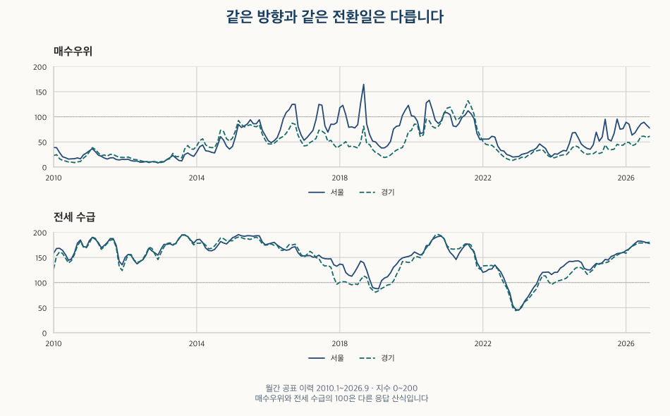
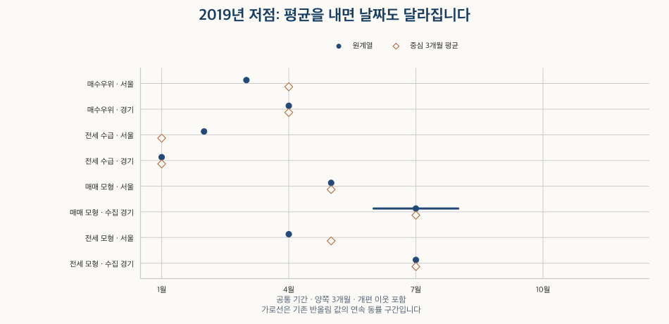

시장 심리 읽기 · 서울과 경기의 전환
서울·경기 매수심리는 같은 달에 바뀌었을까?
서울·경기 매수우위·전세수급지수의 방향과 전환 날짜를 비교합니다. 평균 방식·대응 반경과 매매·전세 모형의 반례를 살펴보고, 지역의 선후를 가격 전파나 매수 신호로 읽기 어려운 이유를 설명합니다.
분석 기간 · 심리 2010.1~2026.9 · 모형 2011.1~2026.6 | 자료 기준일 · 기존 공식 화면 확인 기록 2026-10-17
서울의 매수 분위기가 좋아졌다는 기사를 보고 경기에서도 같은 변화가 곧 나타날지 궁금할 수 있습니다. 월간 매수우위지수와 전세수급지수에서 두 지역의 방향과 전환 날짜를 따로 비교했습니다. 같은 방향으로 움직인 달은 많지만, 서울이 늘 먼저라는 순서는 확인되지 않습니다.
같은 방향과 같은 달 전환은 어떻게 다른가요?
방향은 직전 달보다 올랐는지, 전환은 주변 달보다 높거나 낮았는지 묻습니다. 두 지역이 계속 함께 오르더라도 한 지역의 고점은 더 늦을 수 있습니다. 반대로 고점의 달이 같더라도 그 이전의 오르내림이 모두 같지는 않습니다.
매수우위지수는 ‘100 + 매수자가 많다는 응답 비중 − 매도자가 많다는 응답 비중’, 전세수급지수는 ‘100 + 전세 공급이 부족하다는 응답 비중 − 충분하다는 응답 비중’입니다. 중개업소의 시장 판단을 요약하며 실제 사람·매물·계약 수를 센 값이 아닙니다. 두 지수의 100 초과와 전월 상승도 구분해야 합니다. 매수우위지수의 응답 구성과 전세수급지수와 보증금의 관계에서 산식을 더 살펴볼 수 있습니다.

| 지표 | 비교 월 | 같은 방향 | 다른 방향 | 같은 방향 비중 |
|---|---|---|---|---|
| 매수우위 | 200 | 163 | 37 | 81.5% |
| 전세 수급 | 200 | 162 | 38 | 81.0% |
전월과 값이 같으면 0, 오르면 양, 내리면 음으로 구분했습니다. 두 지역이 모두 0인 달도 같은 방향에 들어갑니다. 최초 달은 직전 달이 없어 제외했고, 빠진 달을 건너뛰어 비교하지 않았습니다. 자주 동행했다는 결과 자체는 남기되, 이를 항상 같은 전환일이나 일정한 선행 기간으로 바꾸지 않습니다.
서울이 경기보다 먼저 돌아섰나요?
일정한 순서로 요약하기 어렵습니다. 전환점은 한 달 또는 연속해서 같은 값인 구간이 양쪽 3개월의 모든 값보다 높으면 고점, 낮으면 저점으로 정했습니다. 양쪽 6개월로 넓히는 방법과 중심 3개월 평균을 쓰는 방법까지 네 규칙을 함께 비교합니다.
표는 매매·전세 모형과 기간을 맞춘 2011년 1월~2026년 6월입니다. 같은 종류의 점끼리 날짜 차이가 정해진 반경과 겹치면 가능한 조합으로 남깁니다. 서울 점에 경기 점 하나를 강제로 붙이지 않습니다. ‘동월 가능’은 두 전환 구간이 겹쳐 정확한 선후를 고정할 수 없다는 뜻입니다.
| 지표 | 반경(개월) | 서울 점 | 경기 점 | 가능 조합 | 서울 먼저 | 경기 먼저 | 동월 가능 | 서울 미대응 | 경기 미대응 |
|---|---|---|---|---|---|---|---|---|---|
| 매수우위 | 3 | 38 | 36 | 33 | 9 | 6 | 18 | 5 | 3 |
| 매수우위 | 12 | 38 | 36 | 99 | 40 | 41 | 18 | 0 | 0 |
| 전세 수급 | 3 | 33 | 35 | 30 | 4 | 12 | 14 | 3 | 5 |
| 전세 수급 | 12 | 33 | 35 | 94 | 38 | 42 | 14 | 0 | 0 |
| 매매 모형 | 3 | 11 | 18 | 10 | 3 | 3 | 4 | 1 | 8 |
| 매매 모형 | 12 | 11 | 18 | 20 | 9 | 7 | 4 | 1 | 1 |
| 전세 모형 | 3 | 10 | 9 | 7 | 3 | 1 | 3 | 3 | 2 |
| 전세 모형 | 12 | 10 | 9 | 10 | 4 | 3 | 3 | 1 | 1 |
원계열·양쪽 3개월에서 매수우위의 반경을 3개월로 두면 33조합 중 서울 먼저 9·경기 먼저 6·동월 가능 18입니다. 서울의 5점과 경기의 3점은 대응점이 없습니다. 전세 수급은 30조합 중 서울 먼저 4·경기 먼저 12·동월 가능 14로, 매수우위와 같은 순서로 요약되지 않습니다.
기본 비교 반경인 12개월에서는 매수우위가 99조합으로 늘고 서울 먼저 40·경기 먼저 41·동월 가능 18이 됩니다. 99개의 독립 사건이나 99번의 전파를 발견했다는 뜻이 아닙니다. 넓게 연결하면 같은 점이 앞뒤의 서로 다른 국면에 여러 번 대응합니다. 반경을 넓혔을 때 미대응이 줄어드는 것만으로 설명력이 좋아졌다고 판단할 수 없습니다.
아래에는 0·3·6·12개월 반경, 네 전환 규칙, 개편 이웃 포함·제외 결과를 모두 남겼습니다. 반경 0은 같은 달 또는 동률 구간의 겹침만 허용합니다. 개편 이웃 제외는 전환점을 판단할 때 필요한 기간이 통계 개편 경계를 가로지르는 점을 빼는 비교입니다.
매수우위의 네 규칙·모든 반경 비교 펼치기
| 전환 규칙 | 개편 이웃 | 반경(개월) | 서울 점 | 경기 점 | 가능 조합 | 서울 먼저 | 경기 먼저 | 동월 가능 | 서울 미대응 | 경기 미대응 |
|---|---|---|---|---|---|---|---|---|---|---|
| 원계열 · 양쪽 3개월 | 포함 | 0 | 38 | 36 | 18 | 0 | 0 | 18 | 20 | 18 |
| 원계열 · 양쪽 3개월 | 포함 | 3 | 38 | 36 | 33 | 9 | 6 | 18 | 5 | 3 |
| 원계열 · 양쪽 3개월 | 포함 | 6 | 38 | 36 | 56 | 19 | 19 | 18 | 3 | 0 |
| 원계열 · 양쪽 3개월 | 포함 | 12 | 38 | 36 | 99 | 40 | 41 | 18 | 0 | 0 |
| 원계열 · 양쪽 3개월 | 제외 | 0 | 35 | 34 | 16 | 0 | 0 | 16 | 19 | 18 |
| 원계열 · 양쪽 3개월 | 제외 | 3 | 35 | 34 | 31 | 9 | 6 | 16 | 4 | 3 |
| 원계열 · 양쪽 3개월 | 제외 | 6 | 35 | 34 | 53 | 19 | 18 | 16 | 3 | 0 |
| 원계열 · 양쪽 3개월 | 제외 | 12 | 35 | 34 | 94 | 38 | 40 | 16 | 0 | 0 |
| 원계열 · 양쪽 6개월 | 포함 | 0 | 18 | 15 | 7 | 0 | 0 | 7 | 11 | 8 |
| 원계열 · 양쪽 6개월 | 포함 | 3 | 18 | 15 | 13 | 4 | 2 | 7 | 5 | 2 |
| 원계열 · 양쪽 6개월 | 포함 | 6 | 18 | 15 | 13 | 4 | 2 | 7 | 5 | 2 |
| 원계열 · 양쪽 6개월 | 포함 | 12 | 18 | 15 | 23 | 9 | 7 | 7 | 4 | 1 |
| 원계열 · 양쪽 6개월 | 제외 | 0 | 16 | 14 | 6 | 0 | 0 | 6 | 10 | 8 |
| 원계열 · 양쪽 6개월 | 제외 | 3 | 16 | 14 | 12 | 4 | 2 | 6 | 4 | 2 |
| 원계열 · 양쪽 6개월 | 제외 | 6 | 16 | 14 | 12 | 4 | 2 | 6 | 4 | 2 |
| 원계열 · 양쪽 6개월 | 제외 | 12 | 16 | 14 | 22 | 9 | 7 | 6 | 3 | 1 |
| 중심 3개월 · 양쪽 3개월 | 포함 | 0 | 33 | 30 | 16 | 0 | 0 | 16 | 17 | 14 |
| 중심 3개월 · 양쪽 3개월 | 포함 | 3 | 33 | 30 | 27 | 8 | 3 | 16 | 6 | 3 |
| 중심 3개월 · 양쪽 3개월 | 포함 | 6 | 33 | 30 | 37 | 11 | 10 | 16 | 5 | 2 |
| 중심 3개월 · 양쪽 3개월 | 포함 | 12 | 33 | 30 | 74 | 30 | 28 | 16 | 0 | 2 |
| 중심 3개월 · 양쪽 3개월 | 제외 | 0 | 31 | 28 | 15 | 0 | 0 | 15 | 16 | 13 |
| 중심 3개월 · 양쪽 3개월 | 제외 | 3 | 31 | 28 | 25 | 8 | 2 | 15 | 6 | 3 |
| 중심 3개월 · 양쪽 3개월 | 제외 | 6 | 31 | 28 | 35 | 11 | 9 | 15 | 5 | 2 |
| 중심 3개월 · 양쪽 3개월 | 제외 | 12 | 31 | 28 | 71 | 29 | 27 | 15 | 0 | 2 |
| 중심 3개월 · 양쪽 6개월 | 포함 | 0 | 18 | 14 | 8 | 0 | 0 | 8 | 10 | 6 |
| 중심 3개월 · 양쪽 6개월 | 포함 | 3 | 18 | 14 | 13 | 3 | 2 | 8 | 5 | 1 |
| 중심 3개월 · 양쪽 6개월 | 포함 | 6 | 18 | 14 | 14 | 3 | 3 | 8 | 4 | 0 |
| 중심 3개월 · 양쪽 6개월 | 포함 | 12 | 18 | 14 | 24 | 8 | 8 | 8 | 3 | 0 |
| 중심 3개월 · 양쪽 6개월 | 제외 | 0 | 17 | 13 | 8 | 0 | 0 | 8 | 9 | 5 |
| 중심 3개월 · 양쪽 6개월 | 제외 | 3 | 17 | 13 | 12 | 3 | 1 | 8 | 5 | 1 |
| 중심 3개월 · 양쪽 6개월 | 제외 | 6 | 17 | 13 | 13 | 3 | 2 | 8 | 4 | 0 |
| 중심 3개월 · 양쪽 6개월 | 제외 | 12 | 17 | 13 | 23 | 8 | 7 | 8 | 3 | 0 |
전세 수급의 네 규칙·모든 반경 비교 펼치기
| 전환 규칙 | 개편 이웃 | 반경(개월) | 서울 점 | 경기 점 | 가능 조합 | 서울 먼저 | 경기 먼저 | 동월 가능 | 서울 미대응 | 경기 미대응 |
|---|---|---|---|---|---|---|---|---|---|---|
| 원계열 · 양쪽 3개월 | 포함 | 0 | 33 | 35 | 14 | 0 | 0 | 14 | 19 | 21 |
| 원계열 · 양쪽 3개월 | 포함 | 3 | 33 | 35 | 30 | 4 | 12 | 14 | 3 | 5 |
| 원계열 · 양쪽 3개월 | 포함 | 6 | 33 | 35 | 49 | 12 | 23 | 14 | 0 | 1 |
| 원계열 · 양쪽 3개월 | 포함 | 12 | 33 | 35 | 94 | 38 | 42 | 14 | 0 | 0 |
| 원계열 · 양쪽 3개월 | 제외 | 0 | 32 | 34 | 14 | 0 | 0 | 14 | 18 | 20 |
| 원계열 · 양쪽 3개월 | 제외 | 3 | 32 | 34 | 29 | 4 | 11 | 14 | 3 | 5 |
| 원계열 · 양쪽 3개월 | 제외 | 6 | 32 | 34 | 48 | 12 | 22 | 14 | 0 | 1 |
| 원계열 · 양쪽 3개월 | 제외 | 12 | 32 | 34 | 90 | 36 | 40 | 14 | 0 | 0 |
| 원계열 · 양쪽 6개월 | 포함 | 0 | 15 | 13 | 3 | 0 | 0 | 3 | 12 | 10 |
| 원계열 · 양쪽 6개월 | 포함 | 3 | 15 | 13 | 10 | 1 | 6 | 3 | 5 | 3 |
| 원계열 · 양쪽 6개월 | 포함 | 6 | 15 | 13 | 11 | 2 | 6 | 3 | 4 | 2 |
| 원계열 · 양쪽 6개월 | 포함 | 12 | 15 | 13 | 18 | 5 | 10 | 3 | 2 | 0 |
| 원계열 · 양쪽 6개월 | 제외 | 0 | 14 | 12 | 3 | 0 | 0 | 3 | 11 | 9 |
| 원계열 · 양쪽 6개월 | 제외 | 3 | 14 | 12 | 9 | 1 | 5 | 3 | 5 | 3 |
| 원계열 · 양쪽 6개월 | 제외 | 6 | 14 | 12 | 10 | 2 | 5 | 3 | 4 | 2 |
| 원계열 · 양쪽 6개월 | 제외 | 12 | 14 | 12 | 16 | 4 | 9 | 3 | 2 | 0 |
| 중심 3개월 · 양쪽 3개월 | 포함 | 0 | 24 | 31 | 13 | 0 | 0 | 13 | 11 | 18 |
| 중심 3개월 · 양쪽 3개월 | 포함 | 3 | 24 | 31 | 24 | 4 | 7 | 13 | 0 | 7 |
| 중심 3개월 · 양쪽 3개월 | 포함 | 6 | 24 | 31 | 33 | 9 | 11 | 13 | 0 | 2 |
| 중심 3개월 · 양쪽 3개월 | 포함 | 12 | 24 | 31 | 60 | 25 | 22 | 13 | 0 | 0 |
| 중심 3개월 · 양쪽 3개월 | 제외 | 0 | 23 | 30 | 13 | 0 | 0 | 13 | 10 | 17 |
| 중심 3개월 · 양쪽 3개월 | 제외 | 3 | 23 | 30 | 23 | 4 | 6 | 13 | 0 | 7 |
| 중심 3개월 · 양쪽 3개월 | 제외 | 6 | 23 | 30 | 32 | 9 | 10 | 13 | 0 | 2 |
| 중심 3개월 · 양쪽 3개월 | 제외 | 12 | 23 | 30 | 57 | 23 | 21 | 13 | 0 | 0 |
| 중심 3개월 · 양쪽 6개월 | 포함 | 0 | 13 | 11 | 5 | 0 | 0 | 5 | 8 | 6 |
| 중심 3개월 · 양쪽 6개월 | 포함 | 3 | 13 | 11 | 8 | 1 | 2 | 5 | 5 | 3 |
| 중심 3개월 · 양쪽 6개월 | 포함 | 6 | 13 | 11 | 9 | 1 | 3 | 5 | 4 | 2 |
| 중심 3개월 · 양쪽 6개월 | 포함 | 12 | 13 | 11 | 13 | 3 | 5 | 5 | 2 | 1 |
| 중심 3개월 · 양쪽 6개월 | 제외 | 0 | 12 | 10 | 5 | 0 | 0 | 5 | 7 | 5 |
| 중심 3개월 · 양쪽 6개월 | 제외 | 3 | 12 | 10 | 7 | 1 | 1 | 5 | 5 | 3 |
| 중심 3개월 · 양쪽 6개월 | 제외 | 6 | 12 | 10 | 8 | 1 | 2 | 5 | 4 | 2 |
| 중심 3개월 · 양쪽 6개월 | 제외 | 12 | 12 | 10 | 12 | 3 | 4 | 5 | 2 | 1 |
매매 모형의 네 규칙·모든 반경 비교 펼치기
| 전환 규칙 | 개편 이웃 | 반경(개월) | 서울 점 | 경기 점 | 가능 조합 | 서울 먼저 | 경기 먼저 | 동월 가능 | 서울 미대응 | 경기 미대응 |
|---|---|---|---|---|---|---|---|---|---|---|
| 원계열 · 양쪽 3개월 | 포함 | 0 | 11 | 18 | 4 | 0 | 0 | 4 | 7 | 14 |
| 원계열 · 양쪽 3개월 | 포함 | 3 | 11 | 18 | 10 | 3 | 3 | 4 | 1 | 8 |
| 원계열 · 양쪽 3개월 | 포함 | 6 | 11 | 18 | 10 | 3 | 3 | 4 | 1 | 8 |
| 원계열 · 양쪽 3개월 | 포함 | 12 | 11 | 18 | 20 | 9 | 7 | 4 | 1 | 1 |
| 원계열 · 양쪽 3개월 | 제외 | 0 | 11 | 18 | 4 | 0 | 0 | 4 | 7 | 14 |
| 원계열 · 양쪽 3개월 | 제외 | 3 | 11 | 18 | 10 | 3 | 3 | 4 | 1 | 8 |
| 원계열 · 양쪽 3개월 | 제외 | 6 | 11 | 18 | 10 | 3 | 3 | 4 | 1 | 8 |
| 원계열 · 양쪽 3개월 | 제외 | 12 | 11 | 18 | 20 | 9 | 7 | 4 | 1 | 1 |
| 원계열 · 양쪽 6개월 | 포함 | 0 | 6 | 8 | 2 | 0 | 0 | 2 | 4 | 6 |
| 원계열 · 양쪽 6개월 | 포함 | 3 | 6 | 8 | 6 | 2 | 2 | 2 | 0 | 2 |
| 원계열 · 양쪽 6개월 | 포함 | 6 | 6 | 8 | 6 | 2 | 2 | 2 | 0 | 2 |
| 원계열 · 양쪽 6개월 | 포함 | 12 | 6 | 8 | 8 | 3 | 3 | 2 | 0 | 2 |
| 원계열 · 양쪽 6개월 | 제외 | 0 | 6 | 8 | 2 | 0 | 0 | 2 | 4 | 6 |
| 원계열 · 양쪽 6개월 | 제외 | 3 | 6 | 8 | 6 | 2 | 2 | 2 | 0 | 2 |
| 원계열 · 양쪽 6개월 | 제외 | 6 | 6 | 8 | 6 | 2 | 2 | 2 | 0 | 2 |
| 원계열 · 양쪽 6개월 | 제외 | 12 | 6 | 8 | 8 | 3 | 3 | 2 | 0 | 2 |
| 중심 3개월 · 양쪽 3개월 | 포함 | 0 | 9 | 17 | 4 | 0 | 0 | 4 | 5 | 13 |
| 중심 3개월 · 양쪽 3개월 | 포함 | 3 | 9 | 17 | 8 | 2 | 2 | 4 | 1 | 9 |
| 중심 3개월 · 양쪽 3개월 | 포함 | 6 | 9 | 17 | 9 | 2 | 3 | 4 | 0 | 9 |
| 중심 3개월 · 양쪽 3개월 | 포함 | 12 | 9 | 17 | 17 | 6 | 7 | 4 | 0 | 3 |
| 중심 3개월 · 양쪽 3개월 | 제외 | 0 | 9 | 17 | 4 | 0 | 0 | 4 | 5 | 13 |
| 중심 3개월 · 양쪽 3개월 | 제외 | 3 | 9 | 17 | 8 | 2 | 2 | 4 | 1 | 9 |
| 중심 3개월 · 양쪽 3개월 | 제외 | 6 | 9 | 17 | 9 | 2 | 3 | 4 | 0 | 9 |
| 중심 3개월 · 양쪽 3개월 | 제외 | 12 | 9 | 17 | 17 | 6 | 7 | 4 | 0 | 3 |
| 중심 3개월 · 양쪽 6개월 | 포함 | 0 | 5 | 9 | 3 | 0 | 0 | 3 | 2 | 6 |
| 중심 3개월 · 양쪽 6개월 | 포함 | 3 | 5 | 9 | 5 | 2 | 0 | 3 | 0 | 4 |
| 중심 3개월 · 양쪽 6개월 | 포함 | 6 | 5 | 9 | 5 | 2 | 0 | 3 | 0 | 4 |
| 중심 3개월 · 양쪽 6개월 | 포함 | 12 | 5 | 9 | 7 | 3 | 1 | 3 | 0 | 2 |
| 중심 3개월 · 양쪽 6개월 | 제외 | 0 | 5 | 9 | 3 | 0 | 0 | 3 | 2 | 6 |
| 중심 3개월 · 양쪽 6개월 | 제외 | 3 | 5 | 9 | 5 | 2 | 0 | 3 | 0 | 4 |
| 중심 3개월 · 양쪽 6개월 | 제외 | 6 | 5 | 9 | 5 | 2 | 0 | 3 | 0 | 4 |
| 중심 3개월 · 양쪽 6개월 | 제외 | 12 | 5 | 9 | 7 | 3 | 1 | 3 | 0 | 2 |
전세 모형의 네 규칙·모든 반경 비교 펼치기
| 전환 규칙 | 개편 이웃 | 반경(개월) | 서울 점 | 경기 점 | 가능 조합 | 서울 먼저 | 경기 먼저 | 동월 가능 | 서울 미대응 | 경기 미대응 |
|---|---|---|---|---|---|---|---|---|---|---|
| 원계열 · 양쪽 3개월 | 포함 | 0 | 10 | 9 | 3 | 0 | 0 | 3 | 7 | 6 |
| 원계열 · 양쪽 3개월 | 포함 | 3 | 10 | 9 | 7 | 3 | 1 | 3 | 3 | 2 |
| 원계열 · 양쪽 3개월 | 포함 | 6 | 10 | 9 | 8 | 3 | 2 | 3 | 2 | 1 |
| 원계열 · 양쪽 3개월 | 포함 | 12 | 10 | 9 | 10 | 4 | 3 | 3 | 1 | 1 |
| 원계열 · 양쪽 3개월 | 제외 | 0 | 10 | 9 | 3 | 0 | 0 | 3 | 7 | 6 |
| 원계열 · 양쪽 3개월 | 제외 | 3 | 10 | 9 | 7 | 3 | 1 | 3 | 3 | 2 |
| 원계열 · 양쪽 3개월 | 제외 | 6 | 10 | 9 | 8 | 3 | 2 | 3 | 2 | 1 |
| 원계열 · 양쪽 3개월 | 제외 | 12 | 10 | 9 | 10 | 4 | 3 | 3 | 1 | 1 |
| 원계열 · 양쪽 6개월 | 포함 | 0 | 8 | 6 | 3 | 0 | 0 | 3 | 5 | 3 |
| 원계열 · 양쪽 6개월 | 포함 | 3 | 8 | 6 | 5 | 2 | 0 | 3 | 3 | 1 |
| 원계열 · 양쪽 6개월 | 포함 | 6 | 8 | 6 | 6 | 2 | 1 | 3 | 2 | 0 |
| 원계열 · 양쪽 6개월 | 포함 | 12 | 8 | 6 | 6 | 2 | 1 | 3 | 2 | 0 |
| 원계열 · 양쪽 6개월 | 제외 | 0 | 8 | 6 | 3 | 0 | 0 | 3 | 5 | 3 |
| 원계열 · 양쪽 6개월 | 제외 | 3 | 8 | 6 | 5 | 2 | 0 | 3 | 3 | 1 |
| 원계열 · 양쪽 6개월 | 제외 | 6 | 8 | 6 | 6 | 2 | 1 | 3 | 2 | 0 |
| 원계열 · 양쪽 6개월 | 제외 | 12 | 8 | 6 | 6 | 2 | 1 | 3 | 2 | 0 |
| 중심 3개월 · 양쪽 3개월 | 포함 | 0 | 9 | 8 | 3 | 0 | 0 | 3 | 6 | 5 |
| 중심 3개월 · 양쪽 3개월 | 포함 | 3 | 9 | 8 | 6 | 2 | 1 | 3 | 3 | 2 |
| 중심 3개월 · 양쪽 3개월 | 포함 | 6 | 9 | 8 | 7 | 2 | 2 | 3 | 2 | 1 |
| 중심 3개월 · 양쪽 3개월 | 포함 | 12 | 9 | 8 | 7 | 2 | 2 | 3 | 2 | 1 |
| 중심 3개월 · 양쪽 3개월 | 제외 | 0 | 9 | 8 | 3 | 0 | 0 | 3 | 6 | 5 |
| 중심 3개월 · 양쪽 3개월 | 제외 | 3 | 9 | 8 | 6 | 2 | 1 | 3 | 3 | 2 |
| 중심 3개월 · 양쪽 3개월 | 제외 | 6 | 9 | 8 | 7 | 2 | 2 | 3 | 2 | 1 |
| 중심 3개월 · 양쪽 3개월 | 제외 | 12 | 9 | 8 | 7 | 2 | 2 | 3 | 2 | 1 |
| 중심 3개월 · 양쪽 6개월 | 포함 | 0 | 8 | 6 | 2 | 0 | 0 | 2 | 6 | 4 |
| 중심 3개월 · 양쪽 6개월 | 포함 | 3 | 8 | 6 | 5 | 2 | 1 | 2 | 3 | 1 |
| 중심 3개월 · 양쪽 6개월 | 포함 | 6 | 8 | 6 | 6 | 2 | 2 | 2 | 2 | 0 |
| 중심 3개월 · 양쪽 6개월 | 포함 | 12 | 8 | 6 | 6 | 2 | 2 | 2 | 2 | 0 |
| 중심 3개월 · 양쪽 6개월 | 제외 | 0 | 8 | 6 | 2 | 0 | 0 | 2 | 6 | 4 |
| 중심 3개월 · 양쪽 6개월 | 제외 | 3 | 8 | 6 | 5 | 2 | 1 | 2 | 3 | 1 |
| 중심 3개월 · 양쪽 6개월 | 제외 | 6 | 8 | 6 | 6 | 2 | 2 | 2 | 2 | 0 |
| 중심 3개월 · 양쪽 6개월 | 제외 | 12 | 8 | 6 | 6 | 2 | 2 | 2 | 2 | 0 |
2019년에는 매수심리와 전세 수급의 순서가 같았나요?
원계열에서는 반대였습니다. 양쪽 3개월 기준 매수우위 저점은 서울 3월·경기 4월로 서울이 한 달 먼저입니다. 전세 수급 저점은 서울 2월·경기 1월로 경기가 한 달 먼저입니다. 양쪽을 6개월로 넓혀도 이 사례의 날짜는 같습니다.

중심 3개월 평균을 쓰면 매수우위는 두 지역 모두 4월, 전세 수급은 모두 1월로 바뀝니다. ‘서울이 먼저’인지 ‘같은 달’인지는 작은 출렁임을 어떻게 다루는지에도 달려 있습니다. 평균이 무조건 더 정확하거나 원계열이 무조건 더 빠른 신호라는 뜻은 아닙니다.
2019년은 전체 계산 뒤 설명을 위해 고른 사례입니다. 미리 정한 독립 검증 연도나 대표적인 모든 국면으로 주장하지 않습니다. 아래에는 공통 기간의 모든 고점·저점과 이웃이 부족한 미판정 구간을 함께 남겨, 이 사례만 보고 순서를 일반화하지 않도록 했습니다.
매수우위의 모든 전환점·미판정 구간 펼치기
| 전환 규칙 | 지역 | 판정 | 시작 | 끝 | 필요한 이웃 범위 | 개편 경계 |
|---|---|---|---|---|---|---|
| 원계열 · 양쪽 3개월 | 서울 | 미판정 | 2011-01 | 2011-01 | 2010-10~2011-04 | 없음 |
| 원계열 · 양쪽 3개월 | 서울 | 미판정 | 2011-02 | 2011-02 | 2010-11~2011-05 | 없음 |
| 원계열 · 양쪽 3개월 | 서울 | 미판정 | 2011-03 | 2011-03 | 2010-12~2011-06 | 없음 |
| 원계열 · 양쪽 3개월 | 서울 | 고점 | 2011-09 | 2011-09 | 2011-06~2011-12 | 없음 |
| 원계열 · 양쪽 3개월 | 서울 | 저점 | 2011-11 | 2011-11 | 2011-08~2012-02 | 없음 |
| 원계열 · 양쪽 3개월 | 서울 | 고점 | 2012-02 | 2012-02 | 2011-11~2012-05 | 없음 |
| 원계열 · 양쪽 3개월 | 서울 | 저점 | 2012-12 | 2012-12 | 2012-09~2013-03 | 없음 |
| 원계열 · 양쪽 3개월 | 서울 | 고점 | 2013-05 | 2013-05 | 2013-02~2013-08 | 없음 |
| 원계열 · 양쪽 3개월 | 서울 | 저점 | 2013-08 | 2013-08 | 2013-05~2013-11 | 없음 |
| 원계열 · 양쪽 3개월 | 서울 | 저점 | 2013-12 | 2013-12 | 2013-09~2014-03 | 없음 |
| 원계열 · 양쪽 3개월 | 서울 | 고점 | 2014-03 | 2014-03 | 2013-12~2014-06 | 없음 |
| 원계열 · 양쪽 3개월 | 서울 | 저점 | 2014-07 | 2014-07 | 2014-04~2014-10 | 없음 |
| 원계열 · 양쪽 3개월 | 서울 | 고점 | 2014-09 | 2014-09 | 2014-06~2014-12 | 없음 |
| 원계열 · 양쪽 3개월 | 서울 | 저점 | 2014-12 | 2014-12 | 2014-09~2015-03 | 없음 |
| 원계열 · 양쪽 3개월 | 서울 | 저점 | 2016-02 | 2016-02 | 2015-11~2016-05 | 없음 |
| 원계열 · 양쪽 3개월 | 서울 | 고점 | 2016-10 | 2016-10 | 2016-07~2017-01 | 없음 |
| 원계열 · 양쪽 3개월 | 서울 | 저점 | 2017-01 | 2017-01 | 2016-10~2017-04 | 없음 |
| 원계열 · 양쪽 3개월 | 서울 | 고점 | 2017-06 | 2017-06 | 2017-03~2017-09 | 없음 |
| 원계열 · 양쪽 3개월 | 서울 | 저점 | 2017-09 | 2017-09 | 2017-06~2017-12 | 없음 |
| 원계열 · 양쪽 3개월 | 서울 | 고점 | 2018-02 | 2018-02 | 2017-11~2018-05 | 없음 |
| 원계열 · 양쪽 3개월 | 서울 | 저점 | 2018-06 | 2018-06 | 2018-03~2018-09 | 없음 |
| 원계열 · 양쪽 3개월 | 서울 | 고점 | 2018-09 | 2018-09 | 2018-06~2018-12 | 없음 |
| 원계열 · 양쪽 3개월 | 서울 | 저점 | 2019-03 | 2019-03 | 2018-12~2019-06 | 없음 |
| 원계열 · 양쪽 3개월 | 서울 | 고점 | 2019-12 | 2019-12 | 2019-09~2020-03 | 없음 |
| 원계열 · 양쪽 3개월 | 서울 | 저점 | 2020-04 | 2020-04 | 2020-01~2020-07 | 없음 |
| 원계열 · 양쪽 3개월 | 서울 | 고점 | 2020-07 | 2020-07 | 2020-04~2020-10 | 없음 |
| 원계열 · 양쪽 3개월 | 서울 | 저점 | 2020-10 | 2020-10 | 2020-07~2021-01 | 없음 |
| 원계열 · 양쪽 3개월 | 서울 | 고점 | 2020-12 | 2020-12 | 2020-09~2021-03 | 없음 |
| 원계열 · 양쪽 3개월 | 서울 | 저점 | 2021-04 | 2021-04 | 2021-01~2021-07 | 없음 |
| 원계열 · 양쪽 3개월 | 서울 | 고점 | 2021-08 | 2021-08 | 2021-05~2021-11 | 없음 |
| 원계열 · 양쪽 3개월 | 서울 | 저점 | 2021-12 | 2021-12 | 2021-09~2022-03 | 없음 |
| 원계열 · 양쪽 3개월 | 서울 | 고점 | 2022-04 | 2022-04 | 2022-01~2022-07 | 없음 |
| 원계열 · 양쪽 3개월 | 서울 | 저점 | 2022-11 | 2022-11 | 2022-08~2023-02 | 2022-11 |
| 원계열 · 양쪽 3개월 | 서울 | 고점 | 2023-08 | 2023-08 | 2023-05~2023-11 | 없음 |
| 원계열 · 양쪽 3개월 | 서울 | 저점 | 2023-12 | 2023-12 | 2023-09~2024-03 | 없음 |
| 원계열 · 양쪽 3개월 | 서울 | 고점 | 2024-08 | 2024-08 | 2024-05~2024-11 | 없음 |
| 원계열 · 양쪽 3개월 | 서울 | 저점 | 2025-01 | 2025-01 | 2024-10~2025-04 | 없음 |
| 원계열 · 양쪽 3개월 | 서울 | 고점 | 2025-06 | 2025-06 | 2025-03~2025-09 | 없음 |
| 원계열 · 양쪽 3개월 | 서울 | 저점 | 2025-08 | 2025-08 | 2025-05~2025-11 | 없음 |
| 원계열 · 양쪽 3개월 | 서울 | 고점 | 2025-10 | 2025-10 | 2025-07~2026-01 | 2026-01 |
| 원계열 · 양쪽 3개월 | 서울 | 저점 | 2026-03 | 2026-03 | 2025-12~2026-06 | 2026-01·2026-04 |
| 원계열 · 양쪽 3개월 | 서울 | 미판정 | 2026-04 | 2026-04 | 2026-01~2026-07 | 2026-04 |
| 원계열 · 양쪽 3개월 | 서울 | 미판정 | 2026-05 | 2026-05 | 2026-02~2026-08 | 2026-04 |
| 원계열 · 양쪽 3개월 | 서울 | 미판정 | 2026-06 | 2026-06 | 2026-03~2026-09 | 2026-04 |
| 원계열 · 양쪽 6개월 | 서울 | 미판정 | 2011-01 | 2011-01 | 2010-07~2011-07 | 없음 |
| 원계열 · 양쪽 6개월 | 서울 | 미판정 | 2011-02 | 2011-02 | 2010-08~2011-08 | 없음 |
| 원계열 · 양쪽 6개월 | 서울 | 미판정 | 2011-03 | 2011-03 | 2010-09~2011-09 | 없음 |
| 원계열 · 양쪽 6개월 | 서울 | 미판정 | 2011-04 | 2011-04 | 2010-10~2011-10 | 없음 |
| 원계열 · 양쪽 6개월 | 서울 | 미판정 | 2011-05 | 2011-05 | 2010-11~2011-11 | 없음 |
| 원계열 · 양쪽 6개월 | 서울 | 미판정 | 2011-06 | 2011-06 | 2010-12~2011-12 | 없음 |
| 원계열 · 양쪽 6개월 | 서울 | 저점 | 2012-12 | 2012-12 | 2012-06~2013-06 | 없음 |
| 원계열 · 양쪽 6개월 | 서울 | 저점 | 2014-07 | 2014-07 | 2014-01~2015-01 | 없음 |
| 원계열 · 양쪽 6개월 | 서울 | 저점 | 2016-02 | 2016-02 | 2015-08~2016-08 | 없음 |
| 원계열 · 양쪽 6개월 | 서울 | 고점 | 2016-10 | 2016-10 | 2016-04~2017-04 | 없음 |
| 원계열 · 양쪽 6개월 | 서울 | 저점 | 2017-01 | 2017-01 | 2016-07~2017-07 | 없음 |
| 원계열 · 양쪽 6개월 | 서울 | 고점 | 2017-06 | 2017-06 | 2016-12~2017-12 | 없음 |
| 원계열 · 양쪽 6개월 | 서울 | 고점 | 2018-09 | 2018-09 | 2018-03~2019-03 | 없음 |
| 원계열 · 양쪽 6개월 | 서울 | 저점 | 2019-03 | 2019-03 | 2018-09~2019-09 | 없음 |
| 원계열 · 양쪽 6개월 | 서울 | 저점 | 2020-04 | 2020-04 | 2019-10~2020-10 | 없음 |
| 원계열 · 양쪽 6개월 | 서울 | 고점 | 2020-07 | 2020-07 | 2020-01~2021-01 | 없음 |
| 원계열 · 양쪽 6개월 | 서울 | 저점 | 2021-04 | 2021-04 | 2020-10~2021-10 | 없음 |
| 원계열 · 양쪽 6개월 | 서울 | 고점 | 2021-08 | 2021-08 | 2021-02~2022-02 | 없음 |
| 원계열 · 양쪽 6개월 | 서울 | 저점 | 2022-11 | 2022-11 | 2022-05~2023-05 | 2022-11 |
| 원계열 · 양쪽 6개월 | 서울 | 고점 | 2023-08 | 2023-08 | 2023-02~2024-02 | 없음 |
| 원계열 · 양쪽 6개월 | 서울 | 저점 | 2023-12 | 2023-12 | 2023-06~2024-06 | 없음 |
| 원계열 · 양쪽 6개월 | 서울 | 고점 | 2024-08 | 2024-08 | 2024-02~2025-02 | 없음 |
| 원계열 · 양쪽 6개월 | 서울 | 저점 | 2025-01 | 2025-01 | 2024-07~2025-07 | 없음 |
| 원계열 · 양쪽 6개월 | 서울 | 고점 | 2025-10 | 2025-10 | 2025-04~2026-04 | 2026-01·2026-04 |
| 원계열 · 양쪽 6개월 | 서울 | 미판정 | 2026-01 | 2026-01 | 2025-07~2026-07 | 2026-01·2026-04 |
| 원계열 · 양쪽 6개월 | 서울 | 미판정 | 2026-02 | 2026-02 | 2025-08~2026-08 | 2026-01·2026-04 |
| 원계열 · 양쪽 6개월 | 서울 | 미판정 | 2026-03 | 2026-03 | 2025-09~2026-09 | 2026-01·2026-04 |
| 원계열 · 양쪽 6개월 | 서울 | 미판정 | 2026-04 | 2026-04 | 2025-10~2026-10 | 2026-01·2026-04 |
| 원계열 · 양쪽 6개월 | 서울 | 미판정 | 2026-05 | 2026-05 | 2025-11~2026-11 | 2026-01·2026-04 |
| 원계열 · 양쪽 6개월 | 서울 | 미판정 | 2026-06 | 2026-06 | 2025-12~2026-12 | 2026-01·2026-04 |
| 중심 3개월 · 양쪽 3개월 | 서울 | 미판정 | 2011-02 | 2011-02 | 2010-10~2011-06 | 없음 |
| 중심 3개월 · 양쪽 3개월 | 서울 | 미판정 | 2011-03 | 2011-03 | 2010-11~2011-07 | 없음 |
| 중심 3개월 · 양쪽 3개월 | 서울 | 미판정 | 2011-04 | 2011-04 | 2010-12~2011-08 | 없음 |
| 중심 3개월 · 양쪽 3개월 | 서울 | 저점 | 2013-01 | 2013-01 | 2012-09~2013-05 | 없음 |
| 중심 3개월 · 양쪽 3개월 | 서울 | 고점 | 2013-05 | 2013-05 | 2013-01~2013-09 | 없음 |
| 중심 3개월 · 양쪽 3개월 | 서울 | 저점 | 2013-07 | 2013-07 | 2013-03~2013-11 | 없음 |
| 중심 3개월 · 양쪽 3개월 | 서울 | 고점 | 2014-03 | 2014-03 | 2013-11~2014-07 | 없음 |
| 중심 3개월 · 양쪽 3개월 | 서울 | 저점 | 2014-06 | 2014-06 | 2014-02~2014-10 | 없음 |
| 중심 3개월 · 양쪽 3개월 | 서울 | 고점 | 2014-09 | 2014-09 | 2014-05~2015-01 | 없음 |
| 중심 3개월 · 양쪽 3개월 | 서울 | 저점 | 2014-12 | 2014-12 | 2014-08~2015-04 | 없음 |
| 중심 3개월 · 양쪽 3개월 | 서울 | 고점 | 2015-08 | 2015-09 | 2015-04~2016-01 | 없음 |
| 중심 3개월 · 양쪽 3개월 | 서울 | 저점 | 2016-02 | 2016-02 | 2015-10~2016-06 | 없음 |
| 중심 3개월 · 양쪽 3개월 | 서울 | 고점 | 2016-09 | 2016-09 | 2016-05~2017-01 | 없음 |
| 중심 3개월 · 양쪽 3개월 | 서울 | 저점 | 2017-01 | 2017-01 | 2016-09~2017-05 | 없음 |
| 중심 3개월 · 양쪽 3개월 | 서울 | 고점 | 2017-06 | 2017-06 | 2017-02~2017-10 | 없음 |
| 중심 3개월 · 양쪽 3개월 | 서울 | 저점 | 2017-09 | 2017-09 | 2017-05~2018-01 | 없음 |
| 중심 3개월 · 양쪽 3개월 | 서울 | 고점 | 2018-02 | 2018-02 | 2017-10~2018-06 | 없음 |
| 중심 3개월 · 양쪽 3개월 | 서울 | 저점 | 2018-05 | 2018-05 | 2018-01~2018-09 | 없음 |
| 중심 3개월 · 양쪽 3개월 | 서울 | 고점 | 2018-09 | 2018-09 | 2018-05~2019-01 | 없음 |
| 중심 3개월 · 양쪽 3개월 | 서울 | 저점 | 2019-04 | 2019-04 | 2018-12~2019-08 | 없음 |
| 중심 3개월 · 양쪽 3개월 | 서울 | 고점 | 2019-11 | 2019-11 | 2019-07~2020-03 | 없음 |
| 중심 3개월 · 양쪽 3개월 | 서울 | 저점 | 2020-04 | 2020-04 | 2019-12~2020-08 | 없음 |
| 중심 3개월 · 양쪽 3개월 | 서울 | 고점 | 2020-07 | 2020-07 | 2020-03~2020-11 | 없음 |
| 중심 3개월 · 양쪽 3개월 | 서울 | 저점 | 2020-10 | 2020-10 | 2020-06~2021-02 | 없음 |
| 중심 3개월 · 양쪽 3개월 | 서울 | 고점 | 2021-01 | 2021-01 | 2020-09~2021-05 | 없음 |
| 중심 3개월 · 양쪽 3개월 | 서울 | 저점 | 2021-04 | 2021-04 | 2020-12~2021-08 | 없음 |
| 중심 3개월 · 양쪽 3개월 | 서울 | 고점 | 2021-08 | 2021-08 | 2021-04~2021-12 | 없음 |
| 중심 3개월 · 양쪽 3개월 | 서울 | 저점 | 2022-01 | 2022-01 | 2021-09~2022-05 | 없음 |
| 중심 3개월 · 양쪽 3개월 | 서울 | 고점 | 2022-04 | 2022-04 | 2021-12~2022-08 | 없음 |
| 중심 3개월 · 양쪽 3개월 | 서울 | 저점 | 2022-12 | 2022-12 | 2022-08~2023-04 | 2022-11 |
| 중심 3개월 · 양쪽 3개월 | 서울 | 고점 | 2023-08 | 2023-08 | 2023-04~2023-12 | 없음 |
| 중심 3개월 · 양쪽 3개월 | 서울 | 저점 | 2024-01 | 2024-01 | 2023-09~2024-05 | 없음 |
| 중심 3개월 · 양쪽 3개월 | 서울 | 고점 | 2024-08 | 2024-08 | 2024-04~2024-12 | 없음 |
| 중심 3개월 · 양쪽 3개월 | 서울 | 저점 | 2024-12 | 2024-12 | 2024-08~2025-04 | 없음 |
| 중심 3개월 · 양쪽 3개월 | 서울 | 저점 | 2025-08 | 2025-08 | 2025-04~2025-12 | 없음 |
| 중심 3개월 · 양쪽 3개월 | 서울 | 고점 | 2026-01 | 2026-01 | 2025-09~2026-05 | 2026-01·2026-04 |
| 중심 3개월 · 양쪽 3개월 | 서울 | 미판정 | 2026-03 | 2026-03 | 2025-11~2026-07 | 2026-01·2026-04 |
| 중심 3개월 · 양쪽 3개월 | 서울 | 미판정 | 2026-04 | 2026-04 | 2025-12~2026-08 | 2026-01·2026-04 |
| 중심 3개월 · 양쪽 3개월 | 서울 | 미판정 | 2026-05 | 2026-05 | 2026-01~2026-09 | 2026-04 |
| 중심 3개월 · 양쪽 6개월 | 서울 | 미판정 | 2011-02 | 2011-02 | 2010-07~2011-09 | 없음 |
| 중심 3개월 · 양쪽 6개월 | 서울 | 미판정 | 2011-03 | 2011-03 | 2010-08~2011-10 | 없음 |
| 중심 3개월 · 양쪽 6개월 | 서울 | 미판정 | 2011-04 | 2011-04 | 2010-09~2011-11 | 없음 |
| 중심 3개월 · 양쪽 6개월 | 서울 | 미판정 | 2011-05 | 2011-05 | 2010-10~2011-12 | 없음 |
| 중심 3개월 · 양쪽 6개월 | 서울 | 미판정 | 2011-06 | 2011-06 | 2010-11~2012-01 | 없음 |
| 중심 3개월 · 양쪽 6개월 | 서울 | 미판정 | 2011-07 | 2011-07 | 2010-12~2012-02 | 없음 |
| 중심 3개월 · 양쪽 6개월 | 서울 | 저점 | 2013-01 | 2013-01 | 2012-06~2013-08 | 없음 |
| 중심 3개월 · 양쪽 6개월 | 서울 | 고점 | 2015-08 | 2015-09 | 2015-01~2016-04 | 없음 |
| 중심 3개월 · 양쪽 6개월 | 서울 | 저점 | 2016-02 | 2016-02 | 2015-07~2016-09 | 없음 |
| 중심 3개월 · 양쪽 6개월 | 서울 | 고점 | 2016-09 | 2016-09 | 2016-02~2017-04 | 없음 |
| 중심 3개월 · 양쪽 6개월 | 서울 | 저점 | 2017-01 | 2017-01 | 2016-06~2017-08 | 없음 |
| 중심 3개월 · 양쪽 6개월 | 서울 | 고점 | 2017-06 | 2017-06 | 2016-11~2018-01 | 없음 |
| 중심 3개월 · 양쪽 6개월 | 서울 | 고점 | 2018-09 | 2018-09 | 2018-02~2019-04 | 없음 |
| 중심 3개월 · 양쪽 6개월 | 서울 | 저점 | 2019-04 | 2019-04 | 2018-09~2019-11 | 없음 |
| 중심 3개월 · 양쪽 6개월 | 서울 | 고점 | 2019-11 | 2019-11 | 2019-04~2020-06 | 없음 |
| 중심 3개월 · 양쪽 6개월 | 서울 | 저점 | 2020-04 | 2020-04 | 2019-09~2020-11 | 없음 |
| 중심 3개월 · 양쪽 6개월 | 서울 | 고점 | 2020-07 | 2020-07 | 2019-12~2021-02 | 없음 |
| 중심 3개월 · 양쪽 6개월 | 서울 | 저점 | 2021-04 | 2021-04 | 2020-09~2021-11 | 없음 |
| 중심 3개월 · 양쪽 6개월 | 서울 | 고점 | 2021-08 | 2021-08 | 2021-01~2022-03 | 없음 |
| 중심 3개월 · 양쪽 6개월 | 서울 | 저점 | 2022-12 | 2022-12 | 2022-05~2023-07 | 2022-11 |
| 중심 3개월 · 양쪽 6개월 | 서울 | 고점 | 2023-08 | 2023-08 | 2023-01~2024-03 | 없음 |
| 중심 3개월 · 양쪽 6개월 | 서울 | 저점 | 2024-01 | 2024-01 | 2023-06~2024-08 | 없음 |
| 중심 3개월 · 양쪽 6개월 | 서울 | 고점 | 2024-08 | 2024-08 | 2024-01~2025-03 | 없음 |
| 중심 3개월 · 양쪽 6개월 | 서울 | 저점 | 2024-12 | 2024-12 | 2024-05~2025-07 | 없음 |
| 중심 3개월 · 양쪽 6개월 | 서울 | 미판정 | 2025-12 | 2025-12 | 2025-05~2026-07 | 2026-01·2026-04 |
| 중심 3개월 · 양쪽 6개월 | 서울 | 미판정 | 2026-01 | 2026-01 | 2025-06~2026-08 | 2026-01·2026-04 |
| 중심 3개월 · 양쪽 6개월 | 서울 | 미판정 | 2026-02 | 2026-02 | 2025-07~2026-09 | 2026-01·2026-04 |
| 중심 3개월 · 양쪽 6개월 | 서울 | 미판정 | 2026-03 | 2026-03 | 2025-08~2026-10 | 2026-01·2026-04 |
| 중심 3개월 · 양쪽 6개월 | 서울 | 미판정 | 2026-04 | 2026-04 | 2025-09~2026-11 | 2026-01·2026-04 |
| 중심 3개월 · 양쪽 6개월 | 서울 | 미판정 | 2026-05 | 2026-05 | 2025-10~2026-12 | 2026-01·2026-04 |
| 원계열 · 양쪽 3개월 | 경기 | 미판정 | 2011-01 | 2011-01 | 2010-10~2011-04 | 없음 |
| 원계열 · 양쪽 3개월 | 경기 | 미판정 | 2011-02 | 2011-02 | 2010-11~2011-05 | 없음 |
| 원계열 · 양쪽 3개월 | 경기 | 미판정 | 2011-03 | 2011-03 | 2010-12~2011-06 | 없음 |
| 원계열 · 양쪽 3개월 | 경기 | 저점 | 2011-07 | 2011-07 | 2011-04~2011-10 | 없음 |
| 원계열 · 양쪽 3개월 | 경기 | 고점 | 2011-08 | 2011-08 | 2011-05~2011-11 | 없음 |
| 원계열 · 양쪽 3개월 | 경기 | 고점 | 2012-02 | 2012-02 | 2011-11~2012-05 | 없음 |
| 원계열 · 양쪽 3개월 | 경기 | 저점 | 2013-01 | 2013-01 | 2012-10~2013-04 | 없음 |
| 원계열 · 양쪽 3개월 | 경기 | 고점 | 2013-05 | 2013-05 | 2013-02~2013-08 | 없음 |
| 원계열 · 양쪽 3개월 | 경기 | 저점 | 2013-08 | 2013-08 | 2013-05~2013-11 | 없음 |
| 원계열 · 양쪽 3개월 | 경기 | 고점 | 2013-10 | 2013-10 | 2013-07~2014-01 | 없음 |
| 원계열 · 양쪽 3개월 | 경기 | 저점 | 2013-12 | 2013-12 | 2013-09~2014-03 | 없음 |
| 원계열 · 양쪽 3개월 | 경기 | 고점 | 2014-03 | 2014-03 | 2013-12~2014-06 | 없음 |
| 원계열 · 양쪽 3개월 | 경기 | 저점 | 2014-06 | 2014-06 | 2014-03~2014-09 | 없음 |
| 원계열 · 양쪽 3개월 | 경기 | 고점 | 2014-09 | 2014-09 | 2014-06~2014-12 | 없음 |
| 원계열 · 양쪽 3개월 | 경기 | 저점 | 2014-12 | 2014-12 | 2014-09~2015-03 | 없음 |
| 원계열 · 양쪽 3개월 | 경기 | 고점 | 2015-03 | 2015-03 | 2014-12~2015-06 | 없음 |
| 원계열 · 양쪽 3개월 | 경기 | 저점 | 2016-02 | 2016-02 | 2015-11~2016-05 | 없음 |
| 원계열 · 양쪽 3개월 | 경기 | 고점 | 2016-09 | 2016-09 | 2016-06~2016-12 | 없음 |
| 원계열 · 양쪽 3개월 | 경기 | 저점 | 2017-01 | 2017-01 | 2016-10~2017-04 | 없음 |
| 원계열 · 양쪽 3개월 | 경기 | 고점 | 2017-06 | 2017-06 | 2017-03~2017-09 | 없음 |
| 원계열 · 양쪽 3개월 | 경기 | 저점 | 2017-12 | 2017-12 | 2017-09~2018-03 | 없음 |
| 원계열 · 양쪽 3개월 | 경기 | 고점 | 2018-03 | 2018-03 | 2017-12~2018-06 | 없음 |
| 원계열 · 양쪽 3개월 | 경기 | 저점 | 2018-07 | 2018-07 | 2018-04~2018-10 | 없음 |
| 원계열 · 양쪽 3개월 | 경기 | 고점 | 2018-09 | 2018-09 | 2018-06~2018-12 | 없음 |
| 원계열 · 양쪽 3개월 | 경기 | 저점 | 2019-04 | 2019-04 | 2019-01~2019-07 | 없음 |
| 원계열 · 양쪽 3개월 | 경기 | 고점 | 2020-02 | 2020-02 | 2019-11~2020-05 | 없음 |
| 원계열 · 양쪽 3개월 | 경기 | 저점 | 2020-04 | 2020-04 | 2020-01~2020-07 | 없음 |
| 원계열 · 양쪽 3개월 | 경기 | 고점 | 2020-06 | 2020-06 | 2020-03~2020-09 | 없음 |
| 원계열 · 양쪽 3개월 | 경기 | 저점 | 2020-09 | 2020-09 | 2020-06~2020-12 | 없음 |
| 원계열 · 양쪽 3개월 | 경기 | 고점 | 2021-02 | 2021-02 | 2020-11~2021-05 | 없음 |
| 원계열 · 양쪽 3개월 | 경기 | 저점 | 2021-04 | 2021-04 | 2021-01~2021-07 | 없음 |
| 원계열 · 양쪽 3개월 | 경기 | 고점 | 2021-08 | 2021-08 | 2021-05~2021-11 | 없음 |
| 원계열 · 양쪽 3개월 | 경기 | 저점 | 2022-11 | 2022-11 | 2022-08~2023-02 | 2022-11 |
| 원계열 · 양쪽 3개월 | 경기 | 고점 | 2023-09 | 2023-09 | 2023-06~2023-12 | 없음 |
| 원계열 · 양쪽 3개월 | 경기 | 저점 | 2024-01 | 2024-01 | 2023-10~2024-04 | 없음 |
| 원계열 · 양쪽 3개월 | 경기 | 고점 | 2024-08 | 2024-08 | 2024-05~2024-11 | 없음 |
| 원계열 · 양쪽 3개월 | 경기 | 저점 | 2024-12 | 2024-12 | 2024-09~2025-03 | 없음 |
| 원계열 · 양쪽 3개월 | 경기 | 고점 | 2025-06 | 2025-06 | 2025-03~2025-09 | 없음 |
| 원계열 · 양쪽 3개월 | 경기 | 저점 | 2026-03 | 2026-03 | 2025-12~2026-06 | 2026-01·2026-04 |
| 원계열 · 양쪽 3개월 | 경기 | 미판정 | 2026-04 | 2026-04 | 2026-01~2026-07 | 2026-04 |
| 원계열 · 양쪽 3개월 | 경기 | 미판정 | 2026-05 | 2026-05 | 2026-02~2026-08 | 2026-04 |
| 원계열 · 양쪽 3개월 | 경기 | 미판정 | 2026-06 | 2026-06 | 2026-03~2026-09 | 2026-04 |
| 원계열 · 양쪽 6개월 | 경기 | 미판정 | 2011-01 | 2011-01 | 2010-07~2011-07 | 없음 |
| 원계열 · 양쪽 6개월 | 경기 | 미판정 | 2011-02 | 2011-02 | 2010-08~2011-08 | 없음 |
| 원계열 · 양쪽 6개월 | 경기 | 미판정 | 2011-03 | 2011-03 | 2010-09~2011-09 | 없음 |
| 원계열 · 양쪽 6개월 | 경기 | 미판정 | 2011-04 | 2011-04 | 2010-10~2011-10 | 없음 |
| 원계열 · 양쪽 6개월 | 경기 | 미판정 | 2011-05 | 2011-05 | 2010-11~2011-11 | 없음 |
| 원계열 · 양쪽 6개월 | 경기 | 미판정 | 2011-06 | 2011-06 | 2010-12~2011-12 | 없음 |
| 원계열 · 양쪽 6개월 | 경기 | 저점 | 2013-01 | 2013-01 | 2012-07~2013-07 | 없음 |
| 원계열 · 양쪽 6개월 | 경기 | 고점 | 2015-03 | 2015-03 | 2014-09~2015-09 | 없음 |
| 원계열 · 양쪽 6개월 | 경기 | 저점 | 2016-02 | 2016-02 | 2015-08~2016-08 | 없음 |
| 원계열 · 양쪽 6개월 | 경기 | 고점 | 2016-09 | 2016-09 | 2016-03~2017-03 | 없음 |
| 원계열 · 양쪽 6개월 | 경기 | 저점 | 2017-01 | 2017-01 | 2016-07~2017-07 | 없음 |
| 원계열 · 양쪽 6개월 | 경기 | 고점 | 2017-06 | 2017-06 | 2016-12~2017-12 | 없음 |
| 원계열 · 양쪽 6개월 | 경기 | 저점 | 2017-12 | 2017-12 | 2017-06~2018-06 | 없음 |
| 원계열 · 양쪽 6개월 | 경기 | 고점 | 2018-09 | 2018-09 | 2018-03~2019-03 | 없음 |
| 원계열 · 양쪽 6개월 | 경기 | 저점 | 2019-04 | 2019-04 | 2018-10~2019-10 | 없음 |
| 원계열 · 양쪽 6개월 | 경기 | 고점 | 2021-08 | 2021-08 | 2021-02~2022-02 | 없음 |
| 원계열 · 양쪽 6개월 | 경기 | 저점 | 2022-11 | 2022-11 | 2022-05~2023-05 | 2022-11 |
| 원계열 · 양쪽 6개월 | 경기 | 고점 | 2023-09 | 2023-09 | 2023-03~2024-03 | 없음 |
| 원계열 · 양쪽 6개월 | 경기 | 저점 | 2024-01 | 2024-01 | 2023-07~2024-07 | 없음 |
| 원계열 · 양쪽 6개월 | 경기 | 고점 | 2024-08 | 2024-08 | 2024-02~2025-02 | 없음 |
| 원계열 · 양쪽 6개월 | 경기 | 저점 | 2024-12 | 2024-12 | 2024-06~2025-06 | 없음 |
| 원계열 · 양쪽 6개월 | 경기 | 미판정 | 2026-01 | 2026-01 | 2025-07~2026-07 | 2026-01·2026-04 |
| 원계열 · 양쪽 6개월 | 경기 | 미판정 | 2026-02 | 2026-02 | 2025-08~2026-08 | 2026-01·2026-04 |
| 원계열 · 양쪽 6개월 | 경기 | 미판정 | 2026-03 | 2026-03 | 2025-09~2026-09 | 2026-01·2026-04 |
| 원계열 · 양쪽 6개월 | 경기 | 미판정 | 2026-04 | 2026-04 | 2025-10~2026-10 | 2026-01·2026-04 |
| 원계열 · 양쪽 6개월 | 경기 | 미판정 | 2026-05 | 2026-05 | 2025-11~2026-11 | 2026-01·2026-04 |
| 원계열 · 양쪽 6개월 | 경기 | 미판정 | 2026-06 | 2026-06 | 2025-12~2026-12 | 2026-01·2026-04 |
| 중심 3개월 · 양쪽 3개월 | 경기 | 미판정 | 2011-02 | 2011-02 | 2010-10~2011-06 | 없음 |
| 중심 3개월 · 양쪽 3개월 | 경기 | 미판정 | 2011-03 | 2011-03 | 2010-11~2011-07 | 없음 |
| 중심 3개월 · 양쪽 3개월 | 경기 | 미판정 | 2011-04 | 2011-04 | 2010-12~2011-08 | 없음 |
| 중심 3개월 · 양쪽 3개월 | 경기 | 저점 | 2011-06 | 2011-06 | 2011-02~2011-10 | 없음 |
| 중심 3개월 · 양쪽 3개월 | 경기 | 고점 | 2011-09 | 2011-09 | 2011-05~2012-01 | 없음 |
| 중심 3개월 · 양쪽 3개월 | 경기 | 저점 | 2012-12 | 2012-12 | 2012-08~2013-04 | 없음 |
| 중심 3개월 · 양쪽 3개월 | 경기 | 고점 | 2014-03 | 2014-03 | 2013-11~2014-07 | 없음 |
| 중심 3개월 · 양쪽 3개월 | 경기 | 저점 | 2014-06 | 2014-06 | 2014-02~2014-10 | 없음 |
| 중심 3개월 · 양쪽 3개월 | 경기 | 고점 | 2014-10 | 2014-10 | 2014-06~2015-02 | 없음 |
| 중심 3개월 · 양쪽 3개월 | 경기 | 저점 | 2014-12 | 2014-12 | 2014-08~2015-04 | 없음 |
| 중심 3개월 · 양쪽 3개월 | 경기 | 고점 | 2015-04 | 2015-04 | 2014-12~2015-08 | 없음 |
| 중심 3개월 · 양쪽 3개월 | 경기 | 저점 | 2016-02 | 2016-02 | 2015-10~2016-06 | 없음 |
| 중심 3개월 · 양쪽 3개월 | 경기 | 고점 | 2016-09 | 2016-09 | 2016-05~2017-01 | 없음 |
| 중심 3개월 · 양쪽 3개월 | 경기 | 저점 | 2017-02 | 2017-02 | 2016-10~2017-06 | 없음 |
| 중심 3개월 · 양쪽 3개월 | 경기 | 고점 | 2017-07 | 2017-07 | 2017-03~2017-11 | 없음 |
| 중심 3개월 · 양쪽 3개월 | 경기 | 저점 | 2017-12 | 2017-12 | 2017-08~2018-04 | 없음 |
| 중심 3개월 · 양쪽 3개월 | 경기 | 고점 | 2018-02 | 2018-02 | 2017-10~2018-06 | 없음 |
| 중심 3개월 · 양쪽 3개월 | 경기 | 저점 | 2018-06 | 2018-06 | 2018-02~2018-10 | 없음 |
| 중심 3개월 · 양쪽 3개월 | 경기 | 고점 | 2018-09 | 2018-09 | 2018-05~2019-01 | 없음 |
| 중심 3개월 · 양쪽 3개월 | 경기 | 저점 | 2019-04 | 2019-04 | 2018-12~2019-08 | 없음 |
| 중심 3개월 · 양쪽 3개월 | 경기 | 고점 | 2020-02 | 2020-02 | 2019-10~2020-06 | 없음 |
| 중심 3개월 · 양쪽 3개월 | 경기 | 저점 | 2020-04 | 2020-04 | 2019-12~2020-08 | 없음 |
| 중심 3개월 · 양쪽 3개월 | 경기 | 고점 | 2020-07 | 2020-07 | 2020-03~2020-11 | 없음 |
| 중심 3개월 · 양쪽 3개월 | 경기 | 저점 | 2020-09 | 2020-09 | 2020-05~2021-01 | 없음 |
| 중심 3개월 · 양쪽 3개월 | 경기 | 고점 | 2021-01 | 2021-01 | 2020-09~2021-05 | 없음 |
| 중심 3개월 · 양쪽 3개월 | 경기 | 저점 | 2021-05 | 2021-05 | 2021-01~2021-09 | 없음 |
| 중심 3개월 · 양쪽 3개월 | 경기 | 고점 | 2021-08 | 2021-08 | 2021-04~2021-12 | 없음 |
| 중심 3개월 · 양쪽 3개월 | 경기 | 저점 | 2022-11 | 2022-11 | 2022-07~2023-03 | 2022-11 |
| 중심 3개월 · 양쪽 3개월 | 경기 | 고점 | 2023-08 | 2023-08 | 2023-04~2023-12 | 없음 |
| 중심 3개월 · 양쪽 3개월 | 경기 | 저점 | 2024-01 | 2024-01 | 2023-09~2024-05 | 없음 |
| 중심 3개월 · 양쪽 3개월 | 경기 | 고점 | 2024-08 | 2024-08 | 2024-04~2024-12 | 없음 |
| 중심 3개월 · 양쪽 3개월 | 경기 | 저점 | 2025-01 | 2025-01 | 2024-09~2025-05 | 없음 |
| 중심 3개월 · 양쪽 3개월 | 경기 | 고점 | 2026-01 | 2026-01 | 2025-09~2026-05 | 2026-01·2026-04 |
| 중심 3개월 · 양쪽 3개월 | 경기 | 미판정 | 2026-03 | 2026-03 | 2025-11~2026-07 | 2026-01·2026-04 |
| 중심 3개월 · 양쪽 3개월 | 경기 | 미판정 | 2026-04 | 2026-04 | 2025-12~2026-08 | 2026-01·2026-04 |
| 중심 3개월 · 양쪽 3개월 | 경기 | 미판정 | 2026-05 | 2026-05 | 2026-01~2026-09 | 2026-04 |
| 중심 3개월 · 양쪽 6개월 | 경기 | 미판정 | 2011-02 | 2011-02 | 2010-07~2011-09 | 없음 |
| 중심 3개월 · 양쪽 6개월 | 경기 | 미판정 | 2011-03 | 2011-03 | 2010-08~2011-10 | 없음 |
| 중심 3개월 · 양쪽 6개월 | 경기 | 미판정 | 2011-04 | 2011-04 | 2010-09~2011-11 | 없음 |
| 중심 3개월 · 양쪽 6개월 | 경기 | 미판정 | 2011-05 | 2011-05 | 2010-10~2011-12 | 없음 |
| 중심 3개월 · 양쪽 6개월 | 경기 | 미판정 | 2011-06 | 2011-06 | 2010-11~2012-01 | 없음 |
| 중심 3개월 · 양쪽 6개월 | 경기 | 미판정 | 2011-07 | 2011-07 | 2010-12~2012-02 | 없음 |
| 중심 3개월 · 양쪽 6개월 | 경기 | 저점 | 2012-12 | 2012-12 | 2012-05~2013-07 | 없음 |
| 중심 3개월 · 양쪽 6개월 | 경기 | 고점 | 2015-04 | 2015-04 | 2014-09~2015-11 | 없음 |
| 중심 3개월 · 양쪽 6개월 | 경기 | 저점 | 2016-02 | 2016-02 | 2015-07~2016-09 | 없음 |
| 중심 3개월 · 양쪽 6개월 | 경기 | 고점 | 2016-09 | 2016-09 | 2016-02~2017-04 | 없음 |
| 중심 3개월 · 양쪽 6개월 | 경기 | 저점 | 2017-02 | 2017-02 | 2016-07~2017-09 | 없음 |
| 중심 3개월 · 양쪽 6개월 | 경기 | 고점 | 2017-07 | 2017-07 | 2016-12~2018-02 | 없음 |
| 중심 3개월 · 양쪽 6개월 | 경기 | 고점 | 2018-09 | 2018-09 | 2018-02~2019-04 | 없음 |
| 중심 3개월 · 양쪽 6개월 | 경기 | 저점 | 2019-04 | 2019-04 | 2018-09~2019-11 | 없음 |
| 중심 3개월 · 양쪽 6개월 | 경기 | 고점 | 2021-08 | 2021-08 | 2021-01~2022-03 | 없음 |
| 중심 3개월 · 양쪽 6개월 | 경기 | 저점 | 2022-11 | 2022-11 | 2022-04~2023-06 | 2022-11 |
| 중심 3개월 · 양쪽 6개월 | 경기 | 고점 | 2023-08 | 2023-08 | 2023-01~2024-03 | 없음 |
| 중심 3개월 · 양쪽 6개월 | 경기 | 저점 | 2024-01 | 2024-01 | 2023-06~2024-08 | 없음 |
| 중심 3개월 · 양쪽 6개월 | 경기 | 고점 | 2024-08 | 2024-08 | 2024-01~2025-03 | 없음 |
| 중심 3개월 · 양쪽 6개월 | 경기 | 저점 | 2025-01 | 2025-01 | 2024-06~2025-08 | 없음 |
| 중심 3개월 · 양쪽 6개월 | 경기 | 미판정 | 2025-12 | 2025-12 | 2025-05~2026-07 | 2026-01·2026-04 |
| 중심 3개월 · 양쪽 6개월 | 경기 | 미판정 | 2026-01 | 2026-01 | 2025-06~2026-08 | 2026-01·2026-04 |
| 중심 3개월 · 양쪽 6개월 | 경기 | 미판정 | 2026-02 | 2026-02 | 2025-07~2026-09 | 2026-01·2026-04 |
| 중심 3개월 · 양쪽 6개월 | 경기 | 미판정 | 2026-03 | 2026-03 | 2025-08~2026-10 | 2026-01·2026-04 |
| 중심 3개월 · 양쪽 6개월 | 경기 | 미판정 | 2026-04 | 2026-04 | 2025-09~2026-11 | 2026-01·2026-04 |
| 중심 3개월 · 양쪽 6개월 | 경기 | 미판정 | 2026-05 | 2026-05 | 2025-10~2026-12 | 2026-01·2026-04 |
전세 수급의 모든 전환점·미판정 구간 펼치기
| 전환 규칙 | 지역 | 판정 | 시작 | 끝 | 필요한 이웃 범위 | 개편 경계 |
|---|---|---|---|---|---|---|
| 원계열 · 양쪽 3개월 | 서울 | 미판정 | 2011-01 | 2011-01 | 2010-10~2011-04 | 없음 |
| 원계열 · 양쪽 3개월 | 서울 | 미판정 | 2011-02 | 2011-02 | 2010-11~2011-05 | 없음 |
| 원계열 · 양쪽 3개월 | 서울 | 미판정 | 2011-03 | 2011-03 | 2010-12~2011-06 | 없음 |
| 원계열 · 양쪽 3개월 | 서울 | 저점 | 2011-05 | 2011-05 | 2011-02~2011-08 | 없음 |
| 원계열 · 양쪽 3개월 | 서울 | 고점 | 2011-09 | 2011-09 | 2011-06~2011-12 | 없음 |
| 원계열 · 양쪽 3개월 | 서울 | 저점 | 2011-12 | 2011-12 | 2011-09~2012-03 | 없음 |
| 원계열 · 양쪽 3개월 | 서울 | 고점 | 2012-02 | 2012-02 | 2011-11~2012-05 | 없음 |
| 원계열 · 양쪽 3개월 | 서울 | 저점 | 2012-05 | 2012-05 | 2012-02~2012-08 | 없음 |
| 원계열 · 양쪽 3개월 | 서울 | 고점 | 2012-09 | 2012-09 | 2012-06~2012-12 | 없음 |
| 원계열 · 양쪽 3개월 | 서울 | 저점 | 2012-12 | 2012-12 | 2012-09~2013-03 | 없음 |
| 원계열 · 양쪽 3개월 | 서울 | 저점 | 2013-05 | 2013-05 | 2013-02~2013-08 | 없음 |
| 원계열 · 양쪽 3개월 | 서울 | 고점 | 2013-09 | 2013-09 | 2013-06~2013-12 | 없음 |
| 원계열 · 양쪽 3개월 | 서울 | 저점 | 2013-12 | 2013-12 | 2013-09~2014-03 | 없음 |
| 원계열 · 양쪽 3개월 | 서울 | 고점 | 2014-02 | 2014-02 | 2013-11~2014-05 | 없음 |
| 원계열 · 양쪽 3개월 | 서울 | 저점 | 2014-06 | 2014-06 | 2014-03~2014-09 | 없음 |
| 원계열 · 양쪽 3개월 | 서울 | 고점 | 2015-03 | 2015-03 | 2014-12~2015-06 | 없음 |
| 원계열 · 양쪽 3개월 | 서울 | 저점 | 2015-12 | 2015-12 | 2015-09~2016-03 | 없음 |
| 원계열 · 양쪽 3개월 | 서울 | 고점 | 2016-03 | 2016-03 | 2015-12~2016-06 | 없음 |
| 원계열 · 양쪽 3개월 | 서울 | 저점 | 2016-07 | 2016-07 | 2016-04~2016-10 | 없음 |
| 원계열 · 양쪽 3개월 | 서울 | 고점 | 2016-10 | 2016-10 | 2016-07~2017-01 | 없음 |
| 원계열 · 양쪽 3개월 | 서울 | 저점 | 2016-12 | 2016-12 | 2016-09~2017-03 | 없음 |
| 원계열 · 양쪽 3개월 | 서울 | 고점 | 2017-06 | 2017-06 | 2017-03~2017-09 | 없음 |
| 원계열 · 양쪽 3개월 | 서울 | 저점 | 2018-05 | 2018-05 | 2018-02~2018-08 | 없음 |
| 원계열 · 양쪽 3개월 | 서울 | 고점 | 2018-08 | 2018-08 | 2018-05~2018-11 | 없음 |
| 원계열 · 양쪽 3개월 | 서울 | 저점 | 2019-02 | 2019-02 | 2018-11~2019-05 | 없음 |
| 원계열 · 양쪽 3개월 | 서울 | 고점 | 2020-02 | 2020-02 | 2019-11~2020-05 | 없음 |
| 원계열 · 양쪽 3개월 | 서울 | 고점 | 2020-11 | 2020-11 | 2020-08~2021-02 | 없음 |
| 원계열 · 양쪽 3개월 | 서울 | 저점 | 2021-04 | 2021-04 | 2021-01~2021-07 | 없음 |
| 원계열 · 양쪽 3개월 | 서울 | 고점 | 2021-08 | 2021-08 | 2021-05~2021-11 | 없음 |
| 원계열 · 양쪽 3개월 | 서울 | 저점 | 2022-01 | 2022-01 | 2021-10~2022-04 | 없음 |
| 원계열 · 양쪽 3개월 | 서울 | 고점 | 2022-05 | 2022-05 | 2022-02~2022-08 | 없음 |
| 원계열 · 양쪽 3개월 | 서울 | 저점 | 2023-01 | 2023-01 | 2022-10~2023-04 | 2022-11 |
| 원계열 · 양쪽 3개월 | 서울 | 고점 | 2023-11 | 2023-11 | 2023-08~2024-02 | 없음 |
| 원계열 · 양쪽 3개월 | 서울 | 저점 | 2023-12 | 2023-12 | 2023-09~2024-03 | 없음 |
| 원계열 · 양쪽 3개월 | 서울 | 고점 | 2024-09 | 2024-09 | 2024-06~2024-12 | 없음 |
| 원계열 · 양쪽 3개월 | 서울 | 저점 | 2025-01 | 2025-01 | 2024-10~2025-04 | 없음 |
| 원계열 · 양쪽 3개월 | 서울 | 미판정 | 2026-04 | 2026-04 | 2026-01~2026-07 | 2026-04 |
| 원계열 · 양쪽 3개월 | 서울 | 미판정 | 2026-05 | 2026-05 | 2026-02~2026-08 | 2026-04 |
| 원계열 · 양쪽 3개월 | 서울 | 미판정 | 2026-06 | 2026-06 | 2026-03~2026-09 | 2026-04 |
| 원계열 · 양쪽 6개월 | 서울 | 미판정 | 2011-01 | 2011-01 | 2010-07~2011-07 | 없음 |
| 원계열 · 양쪽 6개월 | 서울 | 미판정 | 2011-02 | 2011-02 | 2010-08~2011-08 | 없음 |
| 원계열 · 양쪽 6개월 | 서울 | 미판정 | 2011-03 | 2011-03 | 2010-09~2011-09 | 없음 |
| 원계열 · 양쪽 6개월 | 서울 | 미판정 | 2011-04 | 2011-04 | 2010-10~2011-10 | 없음 |
| 원계열 · 양쪽 6개월 | 서울 | 미판정 | 2011-05 | 2011-05 | 2010-11~2011-11 | 없음 |
| 원계열 · 양쪽 6개월 | 서울 | 미판정 | 2011-06 | 2011-06 | 2010-12~2011-12 | 없음 |
| 원계열 · 양쪽 6개월 | 서울 | 고점 | 2011-09 | 2011-09 | 2011-03~2012-03 | 없음 |
| 원계열 · 양쪽 6개월 | 서울 | 저점 | 2011-12 | 2011-12 | 2011-06~2012-06 | 없음 |
| 원계열 · 양쪽 6개월 | 서울 | 고점 | 2013-09 | 2013-09 | 2013-03~2014-03 | 없음 |
| 원계열 · 양쪽 6개월 | 서울 | 저점 | 2014-06 | 2014-06 | 2013-12~2014-12 | 없음 |
| 원계열 · 양쪽 6개월 | 서울 | 고점 | 2015-03 | 2015-03 | 2014-09~2015-09 | 없음 |
| 원계열 · 양쪽 6개월 | 서울 | 고점 | 2017-06 | 2017-06 | 2016-12~2017-12 | 없음 |
| 원계열 · 양쪽 6개월 | 서울 | 고점 | 2018-08 | 2018-08 | 2018-02~2019-02 | 없음 |
| 원계열 · 양쪽 6개월 | 서울 | 저점 | 2019-02 | 2019-02 | 2018-08~2019-08 | 없음 |
| 원계열 · 양쪽 6개월 | 서울 | 고점 | 2020-11 | 2020-11 | 2020-05~2021-05 | 없음 |
| 원계열 · 양쪽 6개월 | 서울 | 저점 | 2021-04 | 2021-04 | 2020-10~2021-10 | 없음 |
| 원계열 · 양쪽 6개월 | 서울 | 고점 | 2021-08 | 2021-08 | 2021-02~2022-02 | 없음 |
| 원계열 · 양쪽 6개월 | 서울 | 저점 | 2022-01 | 2022-01 | 2021-07~2022-07 | 없음 |
| 원계열 · 양쪽 6개월 | 서울 | 저점 | 2023-01 | 2023-01 | 2022-07~2023-07 | 2022-11 |
| 원계열 · 양쪽 6개월 | 서울 | 고점 | 2024-09 | 2024-09 | 2024-03~2025-03 | 없음 |
| 원계열 · 양쪽 6개월 | 서울 | 저점 | 2025-01 | 2025-01 | 2024-07~2025-07 | 없음 |
| 원계열 · 양쪽 6개월 | 서울 | 미판정 | 2026-01 | 2026-01 | 2025-07~2026-07 | 2026-01·2026-04 |
| 원계열 · 양쪽 6개월 | 서울 | 미판정 | 2026-02 | 2026-02 | 2025-08~2026-08 | 2026-01·2026-04 |
| 원계열 · 양쪽 6개월 | 서울 | 미판정 | 2026-03 | 2026-03 | 2025-09~2026-09 | 2026-01·2026-04 |
| 원계열 · 양쪽 6개월 | 서울 | 미판정 | 2026-04 | 2026-04 | 2025-10~2026-10 | 2026-01·2026-04 |
| 원계열 · 양쪽 6개월 | 서울 | 미판정 | 2026-05 | 2026-05 | 2025-11~2026-11 | 2026-01·2026-04 |
| 원계열 · 양쪽 6개월 | 서울 | 미판정 | 2026-06 | 2026-06 | 2025-12~2026-12 | 2026-01·2026-04 |
| 중심 3개월 · 양쪽 3개월 | 서울 | 미판정 | 2011-02 | 2011-02 | 2010-10~2011-06 | 없음 |
| 중심 3개월 · 양쪽 3개월 | 서울 | 미판정 | 2011-03 | 2011-03 | 2010-11~2011-07 | 없음 |
| 중심 3개월 · 양쪽 3개월 | 서울 | 미판정 | 2011-04 | 2011-04 | 2010-12~2011-08 | 없음 |
| 중심 3개월 · 양쪽 3개월 | 서울 | 저점 | 2011-05 | 2011-05 | 2011-01~2011-09 | 없음 |
| 중심 3개월 · 양쪽 3개월 | 서울 | 고점 | 2011-08 | 2011-08 | 2011-04~2011-12 | 없음 |
| 중심 3개월 · 양쪽 3개월 | 서울 | 저점 | 2011-12 | 2011-12 | 2011-08~2012-04 | 없음 |
| 중심 3개월 · 양쪽 3개월 | 서울 | 고점 | 2012-02 | 2012-02 | 2011-10~2012-06 | 없음 |
| 중심 3개월 · 양쪽 3개월 | 서울 | 저점 | 2012-05 | 2012-05 | 2012-01~2012-09 | 없음 |
| 중심 3개월 · 양쪽 3개월 | 서울 | 고점 | 2013-09 | 2013-09 | 2013-05~2014-01 | 없음 |
| 중심 3개월 · 양쪽 3개월 | 서울 | 저점 | 2014-06 | 2014-06 | 2014-02~2014-10 | 없음 |
| 중심 3개월 · 양쪽 3개월 | 서울 | 고점 | 2015-04 | 2015-04 | 2014-12~2015-08 | 없음 |
| 중심 3개월 · 양쪽 3개월 | 서울 | 저점 | 2015-06 | 2015-06 | 2015-02~2015-10 | 없음 |
| 중심 3개월 · 양쪽 3개월 | 서울 | 저점 | 2016-07 | 2016-07 | 2016-03~2016-11 | 없음 |
| 중심 3개월 · 양쪽 3개월 | 서울 | 고점 | 2016-09 | 2016-09 | 2016-05~2017-01 | 없음 |
| 중심 3개월 · 양쪽 3개월 | 서울 | 저점 | 2018-04 | 2018-04 | 2017-12~2018-08 | 없음 |
| 중심 3개월 · 양쪽 3개월 | 서울 | 고점 | 2018-08 | 2018-08 | 2018-04~2018-12 | 없음 |
| 중심 3개월 · 양쪽 3개월 | 서울 | 저점 | 2019-01 | 2019-01 | 2018-09~2019-05 | 없음 |
| 중심 3개월 · 양쪽 3개월 | 서울 | 고점 | 2020-10 | 2020-10 | 2020-06~2021-02 | 없음 |
| 중심 3개월 · 양쪽 3개월 | 서울 | 저점 | 2021-04 | 2021-04 | 2020-12~2021-08 | 없음 |
| 중심 3개월 · 양쪽 3개월 | 서울 | 고점 | 2021-08 | 2021-08 | 2021-04~2021-12 | 없음 |
| 중심 3개월 · 양쪽 3개월 | 서울 | 저점 | 2022-02 | 2022-02 | 2021-10~2022-06 | 없음 |
| 중심 3개월 · 양쪽 3개월 | 서울 | 고점 | 2022-05 | 2022-05 | 2022-01~2022-09 | 없음 |
| 중심 3개월 · 양쪽 3개월 | 서울 | 저점 | 2023-01 | 2023-01 | 2022-09~2023-05 | 2022-11 |
| 중심 3개월 · 양쪽 3개월 | 서울 | 고점 | 2023-10 | 2023-10 | 2023-06~2024-02 | 없음 |
| 중심 3개월 · 양쪽 3개월 | 서울 | 저점 | 2024-01 | 2024-01 | 2023-09~2024-05 | 없음 |
| 중심 3개월 · 양쪽 3개월 | 서울 | 고점 | 2024-08 | 2024-08 | 2024-04~2024-12 | 없음 |
| 중심 3개월 · 양쪽 3개월 | 서울 | 저점 | 2024-12 | 2024-12 | 2024-08~2025-04 | 없음 |
| 중심 3개월 · 양쪽 3개월 | 서울 | 미판정 | 2026-03 | 2026-03 | 2025-11~2026-07 | 2026-01·2026-04 |
| 중심 3개월 · 양쪽 3개월 | 서울 | 미판정 | 2026-04 | 2026-04 | 2025-12~2026-08 | 2026-01·2026-04 |
| 중심 3개월 · 양쪽 3개월 | 서울 | 미판정 | 2026-05 | 2026-05 | 2026-01~2026-09 | 2026-04 |
| 중심 3개월 · 양쪽 6개월 | 서울 | 미판정 | 2011-02 | 2011-02 | 2010-07~2011-09 | 없음 |
| 중심 3개월 · 양쪽 6개월 | 서울 | 미판정 | 2011-03 | 2011-03 | 2010-08~2011-10 | 없음 |
| 중심 3개월 · 양쪽 6개월 | 서울 | 미판정 | 2011-04 | 2011-04 | 2010-09~2011-11 | 없음 |
| 중심 3개월 · 양쪽 6개월 | 서울 | 미판정 | 2011-05 | 2011-05 | 2010-10~2011-12 | 없음 |
| 중심 3개월 · 양쪽 6개월 | 서울 | 미판정 | 2011-06 | 2011-06 | 2010-11~2012-01 | 없음 |
| 중심 3개월 · 양쪽 6개월 | 서울 | 미판정 | 2011-07 | 2011-07 | 2010-12~2012-02 | 없음 |
| 중심 3개월 · 양쪽 6개월 | 서울 | 저점 | 2012-05 | 2012-05 | 2011-10~2012-12 | 없음 |
| 중심 3개월 · 양쪽 6개월 | 서울 | 고점 | 2013-09 | 2013-09 | 2013-02~2014-04 | 없음 |
| 중심 3개월 · 양쪽 6개월 | 서울 | 저점 | 2014-06 | 2014-06 | 2013-11~2015-01 | 없음 |
| 중심 3개월 · 양쪽 6개월 | 서울 | 고점 | 2015-04 | 2015-04 | 2014-09~2015-11 | 없음 |
| 중심 3개월 · 양쪽 6개월 | 서울 | 저점 | 2018-04 | 2018-04 | 2017-09~2018-11 | 없음 |
| 중심 3개월 · 양쪽 6개월 | 서울 | 고점 | 2018-08 | 2018-08 | 2018-01~2019-03 | 없음 |
| 중심 3개월 · 양쪽 6개월 | 서울 | 저점 | 2019-01 | 2019-01 | 2018-06~2019-08 | 없음 |
| 중심 3개월 · 양쪽 6개월 | 서울 | 고점 | 2020-10 | 2020-10 | 2020-03~2021-05 | 없음 |
| 중심 3개월 · 양쪽 6개월 | 서울 | 저점 | 2021-04 | 2021-04 | 2020-09~2021-11 | 없음 |
| 중심 3개월 · 양쪽 6개월 | 서울 | 고점 | 2021-08 | 2021-08 | 2021-01~2022-03 | 없음 |
| 중심 3개월 · 양쪽 6개월 | 서울 | 저점 | 2023-01 | 2023-01 | 2022-06~2023-08 | 2022-11 |
| 중심 3개월 · 양쪽 6개월 | 서울 | 고점 | 2024-08 | 2024-08 | 2024-01~2025-03 | 없음 |
| 중심 3개월 · 양쪽 6개월 | 서울 | 저점 | 2024-12 | 2024-12 | 2024-05~2025-07 | 없음 |
| 중심 3개월 · 양쪽 6개월 | 서울 | 미판정 | 2025-12 | 2025-12 | 2025-05~2026-07 | 2026-01·2026-04 |
| 중심 3개월 · 양쪽 6개월 | 서울 | 미판정 | 2026-01 | 2026-01 | 2025-06~2026-08 | 2026-01·2026-04 |
| 중심 3개월 · 양쪽 6개월 | 서울 | 미판정 | 2026-02 | 2026-02 | 2025-07~2026-09 | 2026-01·2026-04 |
| 중심 3개월 · 양쪽 6개월 | 서울 | 미판정 | 2026-03 | 2026-03 | 2025-08~2026-10 | 2026-01·2026-04 |
| 중심 3개월 · 양쪽 6개월 | 서울 | 미판정 | 2026-04 | 2026-04 | 2025-09~2026-11 | 2026-01·2026-04 |
| 중심 3개월 · 양쪽 6개월 | 서울 | 미판정 | 2026-05 | 2026-05 | 2025-10~2026-12 | 2026-01·2026-04 |
| 원계열 · 양쪽 3개월 | 경기 | 미판정 | 2011-01 | 2011-01 | 2010-10~2011-04 | 없음 |
| 원계열 · 양쪽 3개월 | 경기 | 미판정 | 2011-02 | 2011-02 | 2010-11~2011-05 | 없음 |
| 원계열 · 양쪽 3개월 | 경기 | 미판정 | 2011-03 | 2011-03 | 2010-12~2011-06 | 없음 |
| 원계열 · 양쪽 3개월 | 경기 | 저점 | 2011-05 | 2011-05 | 2011-02~2011-08 | 없음 |
| 원계열 · 양쪽 3개월 | 경기 | 고점 | 2011-09 | 2011-09 | 2011-06~2011-12 | 없음 |
| 원계열 · 양쪽 3개월 | 경기 | 저점 | 2011-12 | 2011-12 | 2011-09~2012-03 | 없음 |
| 원계열 · 양쪽 3개월 | 경기 | 고점 | 2012-03 | 2012-03 | 2011-12~2012-06 | 없음 |
| 원계열 · 양쪽 3개월 | 경기 | 저점 | 2012-05 | 2012-05 | 2012-02~2012-08 | 없음 |
| 원계열 · 양쪽 3개월 | 경기 | 고점 | 2012-09 | 2012-09 | 2012-06~2012-12 | 없음 |
| 원계열 · 양쪽 3개월 | 경기 | 저점 | 2012-12 | 2012-12 | 2012-09~2013-03 | 없음 |
| 원계열 · 양쪽 3개월 | 경기 | 고점 | 2013-09 | 2013-09 | 2013-06~2013-12 | 없음 |
| 원계열 · 양쪽 3개월 | 경기 | 저점 | 2013-12 | 2013-12 | 2013-09~2014-03 | 없음 |
| 원계열 · 양쪽 3개월 | 경기 | 고점 | 2014-03 | 2014-03 | 2013-12~2014-06 | 없음 |
| 원계열 · 양쪽 3개월 | 경기 | 저점 | 2014-05 | 2014-05 | 2014-02~2014-08 | 없음 |
| 원계열 · 양쪽 3개월 | 경기 | 고점 | 2014-09 | 2014-09 | 2014-06~2014-12 | 없음 |
| 원계열 · 양쪽 3개월 | 경기 | 저점 | 2015-01 | 2015-01 | 2014-10~2015-04 | 없음 |
| 원계열 · 양쪽 3개월 | 경기 | 고점 | 2015-03 | 2015-03 | 2014-12~2015-06 | 없음 |
| 원계열 · 양쪽 3개월 | 경기 | 고점 | 2015-09 | 2015-09 | 2015-06~2015-12 | 없음 |
| 원계열 · 양쪽 3개월 | 경기 | 고점 | 2016-02 | 2016-02 | 2015-11~2016-05 | 없음 |
| 원계열 · 양쪽 3개월 | 경기 | 저점 | 2016-06 | 2016-06 | 2016-03~2016-09 | 없음 |
| 원계열 · 양쪽 3개월 | 경기 | 고점 | 2016-10 | 2016-10 | 2016-07~2017-01 | 없음 |
| 원계열 · 양쪽 3개월 | 경기 | 저점 | 2017-01 | 2017-01 | 2016-10~2017-04 | 없음 |
| 원계열 · 양쪽 3개월 | 경기 | 고점 | 2017-03 | 2017-03 | 2016-12~2017-06 | 없음 |
| 원계열 · 양쪽 3개월 | 경기 | 저점 | 2017-12 | 2017-12 | 2017-09~2018-03 | 없음 |
| 원계열 · 양쪽 3개월 | 경기 | 저점 | 2018-05 | 2018-05 | 2018-02~2018-08 | 없음 |
| 원계열 · 양쪽 3개월 | 경기 | 고점 | 2018-09 | 2018-09 | 2018-06~2018-12 | 없음 |
| 원계열 · 양쪽 3개월 | 경기 | 저점 | 2019-01 | 2019-01 | 2018-10~2019-04 | 없음 |
| 원계열 · 양쪽 3개월 | 경기 | 고점 | 2019-10 | 2019-10 | 2019-07~2020-01 | 없음 |
| 원계열 · 양쪽 3개월 | 경기 | 고점 | 2020-10 | 2020-10 | 2020-07~2021-01 | 없음 |
| 원계열 · 양쪽 3개월 | 경기 | 저점 | 2021-03 | 2021-03 | 2020-12~2021-06 | 없음 |
| 원계열 · 양쪽 3개월 | 경기 | 고점 | 2021-08 | 2021-08 | 2021-05~2021-11 | 없음 |
| 원계열 · 양쪽 3개월 | 경기 | 저점 | 2021-12 | 2021-12 | 2021-09~2022-03 | 없음 |
| 원계열 · 양쪽 3개월 | 경기 | 고점 | 2022-04 | 2022-04 | 2022-01~2022-07 | 없음 |
| 원계열 · 양쪽 3개월 | 경기 | 저점 | 2022-12 | 2022-12 | 2022-09~2023-03 | 2022-11 |
| 원계열 · 양쪽 3개월 | 경기 | 고점 | 2023-09 | 2023-09 | 2023-06~2023-12 | 없음 |
| 원계열 · 양쪽 3개월 | 경기 | 저점 | 2023-12 | 2023-12 | 2023-09~2024-03 | 없음 |
| 원계열 · 양쪽 3개월 | 경기 | 고점 | 2024-09 | 2024-09 | 2024-06~2024-12 | 없음 |
| 원계열 · 양쪽 3개월 | 경기 | 저점 | 2024-12 | 2024-12 | 2024-09~2025-03 | 없음 |
| 원계열 · 양쪽 3개월 | 경기 | 미판정 | 2026-04 | 2026-04 | 2026-01~2026-07 | 2026-04 |
| 원계열 · 양쪽 3개월 | 경기 | 미판정 | 2026-05 | 2026-05 | 2026-02~2026-08 | 2026-04 |
| 원계열 · 양쪽 3개월 | 경기 | 미판정 | 2026-06 | 2026-06 | 2026-03~2026-09 | 2026-04 |
| 원계열 · 양쪽 6개월 | 경기 | 미판정 | 2011-01 | 2011-01 | 2010-07~2011-07 | 없음 |
| 원계열 · 양쪽 6개월 | 경기 | 미판정 | 2011-02 | 2011-02 | 2010-08~2011-08 | 없음 |
| 원계열 · 양쪽 6개월 | 경기 | 미판정 | 2011-03 | 2011-03 | 2010-09~2011-09 | 없음 |
| 원계열 · 양쪽 6개월 | 경기 | 미판정 | 2011-04 | 2011-04 | 2010-10~2011-10 | 없음 |
| 원계열 · 양쪽 6개월 | 경기 | 미판정 | 2011-05 | 2011-05 | 2010-11~2011-11 | 없음 |
| 원계열 · 양쪽 6개월 | 경기 | 미판정 | 2011-06 | 2011-06 | 2010-12~2011-12 | 없음 |
| 원계열 · 양쪽 6개월 | 경기 | 저점 | 2011-12 | 2011-12 | 2011-06~2012-06 | 없음 |
| 원계열 · 양쪽 6개월 | 경기 | 고점 | 2013-09 | 2013-09 | 2013-03~2014-03 | 없음 |
| 원계열 · 양쪽 6개월 | 경기 | 저점 | 2014-05 | 2014-05 | 2013-11~2014-11 | 없음 |
| 원계열 · 양쪽 6개월 | 경기 | 고점 | 2015-09 | 2015-09 | 2015-03~2016-03 | 없음 |
| 원계열 · 양쪽 6개월 | 경기 | 고점 | 2016-10 | 2016-10 | 2016-04~2017-04 | 없음 |
| 원계열 · 양쪽 6개월 | 경기 | 고점 | 2018-09 | 2018-09 | 2018-03~2019-03 | 없음 |
| 원계열 · 양쪽 6개월 | 경기 | 저점 | 2019-01 | 2019-01 | 2018-07~2019-07 | 없음 |
| 원계열 · 양쪽 6개월 | 경기 | 고점 | 2020-10 | 2020-10 | 2020-04~2021-04 | 없음 |
| 원계열 · 양쪽 6개월 | 경기 | 저점 | 2021-03 | 2021-03 | 2020-09~2021-09 | 없음 |
| 원계열 · 양쪽 6개월 | 경기 | 고점 | 2021-08 | 2021-08 | 2021-02~2022-02 | 없음 |
| 원계열 · 양쪽 6개월 | 경기 | 저점 | 2021-12 | 2021-12 | 2021-06~2022-06 | 없음 |
| 원계열 · 양쪽 6개월 | 경기 | 저점 | 2022-12 | 2022-12 | 2022-06~2023-06 | 2022-11 |
| 원계열 · 양쪽 6개월 | 경기 | 고점 | 2023-09 | 2023-09 | 2023-03~2024-03 | 없음 |
| 원계열 · 양쪽 6개월 | 경기 | 미판정 | 2026-01 | 2026-01 | 2025-07~2026-07 | 2026-01·2026-04 |
| 원계열 · 양쪽 6개월 | 경기 | 미판정 | 2026-02 | 2026-02 | 2025-08~2026-08 | 2026-01·2026-04 |
| 원계열 · 양쪽 6개월 | 경기 | 미판정 | 2026-03 | 2026-03 | 2025-09~2026-09 | 2026-01·2026-04 |
| 원계열 · 양쪽 6개월 | 경기 | 미판정 | 2026-04 | 2026-04 | 2025-10~2026-10 | 2026-01·2026-04 |
| 원계열 · 양쪽 6개월 | 경기 | 미판정 | 2026-05 | 2026-05 | 2025-11~2026-11 | 2026-01·2026-04 |
| 원계열 · 양쪽 6개월 | 경기 | 미판정 | 2026-06 | 2026-06 | 2025-12~2026-12 | 2026-01·2026-04 |
| 중심 3개월 · 양쪽 3개월 | 경기 | 미판정 | 2011-02 | 2011-02 | 2010-10~2011-06 | 없음 |
| 중심 3개월 · 양쪽 3개월 | 경기 | 미판정 | 2011-03 | 2011-03 | 2010-11~2011-07 | 없음 |
| 중심 3개월 · 양쪽 3개월 | 경기 | 미판정 | 2011-04 | 2011-04 | 2010-12~2011-08 | 없음 |
| 중심 3개월 · 양쪽 3개월 | 경기 | 저점 | 2011-05 | 2011-05 | 2011-01~2011-09 | 없음 |
| 중심 3개월 · 양쪽 3개월 | 경기 | 고점 | 2011-08 | 2011-08 | 2011-04~2011-12 | 없음 |
| 중심 3개월 · 양쪽 3개월 | 경기 | 저점 | 2011-12 | 2011-12 | 2011-08~2012-04 | 없음 |
| 중심 3개월 · 양쪽 3개월 | 경기 | 고점 | 2012-03 | 2012-03 | 2011-11~2012-07 | 없음 |
| 중심 3개월 · 양쪽 3개월 | 경기 | 저점 | 2012-05 | 2012-05 | 2012-01~2012-09 | 없음 |
| 중심 3개월 · 양쪽 3개월 | 경기 | 고점 | 2012-09 | 2012-09 | 2012-05~2013-01 | 없음 |
| 중심 3개월 · 양쪽 3개월 | 경기 | 저점 | 2012-12 | 2012-12 | 2012-08~2013-04 | 없음 |
| 중심 3개월 · 양쪽 3개월 | 경기 | 고점 | 2013-09 | 2013-09 | 2013-05~2014-01 | 없음 |
| 중심 3개월 · 양쪽 3개월 | 경기 | 저점 | 2014-06 | 2014-06 | 2014-02~2014-10 | 없음 |
| 중심 3개월 · 양쪽 3개월 | 경기 | 고점 | 2014-10 | 2014-10 | 2014-06~2015-02 | 없음 |
| 중심 3개월 · 양쪽 3개월 | 경기 | 저점 | 2014-12 | 2014-12 | 2014-08~2015-04 | 없음 |
| 중심 3개월 · 양쪽 3개월 | 경기 | 고점 | 2015-03 | 2015-03 | 2014-11~2015-07 | 없음 |
| 중심 3개월 · 양쪽 3개월 | 경기 | 저점 | 2015-06 | 2015-06 | 2015-02~2015-10 | 없음 |
| 중심 3개월 · 양쪽 3개월 | 경기 | 고점 | 2015-08 | 2015-09 | 2015-04~2016-01 | 없음 |
| 중심 3개월 · 양쪽 3개월 | 경기 | 저점 | 2016-06 | 2016-06 | 2016-02~2016-10 | 없음 |
| 중심 3개월 · 양쪽 3개월 | 경기 | 고점 | 2016-09 | 2016-09 | 2016-05~2017-01 | 없음 |
| 중심 3개월 · 양쪽 3개월 | 경기 | 저점 | 2017-01 | 2017-01 | 2016-09~2017-05 | 없음 |
| 중심 3개월 · 양쪽 3개월 | 경기 | 고점 | 2017-03 | 2017-03 | 2016-11~2017-07 | 없음 |
| 중심 3개월 · 양쪽 3개월 | 경기 | 저점 | 2018-06 | 2018-06 | 2018-02~2018-10 | 없음 |
| 중심 3개월 · 양쪽 3개월 | 경기 | 고점 | 2018-09 | 2018-09 | 2018-05~2019-01 | 없음 |
| 중심 3개월 · 양쪽 3개월 | 경기 | 저점 | 2019-01 | 2019-01 | 2018-09~2019-05 | 없음 |
| 중심 3개월 · 양쪽 3개월 | 경기 | 고점 | 2020-10 | 2020-10 | 2020-06~2021-02 | 없음 |
| 중심 3개월 · 양쪽 3개월 | 경기 | 저점 | 2021-04 | 2021-04 | 2020-12~2021-08 | 없음 |
| 중심 3개월 · 양쪽 3개월 | 경기 | 고점 | 2021-08 | 2021-08 | 2021-04~2021-12 | 없음 |
| 중심 3개월 · 양쪽 3개월 | 경기 | 저점 | 2021-12 | 2021-12 | 2021-08~2022-04 | 없음 |
| 중심 3개월 · 양쪽 3개월 | 경기 | 고점 | 2022-03 | 2022-03 | 2021-11~2022-07 | 없음 |
| 중심 3개월 · 양쪽 3개월 | 경기 | 저점 | 2022-12 | 2022-12 | 2022-08~2023-04 | 2022-11 |
| 중심 3개월 · 양쪽 3개월 | 경기 | 고점 | 2023-09 | 2023-09 | 2023-05~2024-01 | 없음 |
| 중심 3개월 · 양쪽 3개월 | 경기 | 저점 | 2023-12 | 2023-12 | 2023-08~2024-04 | 없음 |
| 중심 3개월 · 양쪽 3개월 | 경기 | 고점 | 2024-09 | 2024-09 | 2024-05~2025-01 | 없음 |
| 중심 3개월 · 양쪽 3개월 | 경기 | 저점 | 2024-12 | 2024-12 | 2024-08~2025-04 | 없음 |
| 중심 3개월 · 양쪽 3개월 | 경기 | 미판정 | 2026-03 | 2026-03 | 2025-11~2026-07 | 2026-01·2026-04 |
| 중심 3개월 · 양쪽 3개월 | 경기 | 미판정 | 2026-04 | 2026-04 | 2025-12~2026-08 | 2026-01·2026-04 |
| 중심 3개월 · 양쪽 3개월 | 경기 | 미판정 | 2026-05 | 2026-05 | 2026-01~2026-09 | 2026-04 |
| 중심 3개월 · 양쪽 6개월 | 경기 | 미판정 | 2011-02 | 2011-02 | 2010-07~2011-09 | 없음 |
| 중심 3개월 · 양쪽 6개월 | 경기 | 미판정 | 2011-03 | 2011-03 | 2010-08~2011-10 | 없음 |
| 중심 3개월 · 양쪽 6개월 | 경기 | 미판정 | 2011-04 | 2011-04 | 2010-09~2011-11 | 없음 |
| 중심 3개월 · 양쪽 6개월 | 경기 | 미판정 | 2011-05 | 2011-05 | 2010-10~2011-12 | 없음 |
| 중심 3개월 · 양쪽 6개월 | 경기 | 미판정 | 2011-06 | 2011-06 | 2010-11~2012-01 | 없음 |
| 중심 3개월 · 양쪽 6개월 | 경기 | 미판정 | 2011-07 | 2011-07 | 2010-12~2012-02 | 없음 |
| 중심 3개월 · 양쪽 6개월 | 경기 | 저점 | 2011-12 | 2011-12 | 2011-05~2012-07 | 없음 |
| 중심 3개월 · 양쪽 6개월 | 경기 | 고점 | 2013-09 | 2013-09 | 2013-02~2014-04 | 없음 |
| 중심 3개월 · 양쪽 6개월 | 경기 | 저점 | 2014-06 | 2014-06 | 2013-11~2015-01 | 없음 |
| 중심 3개월 · 양쪽 6개월 | 경기 | 고점 | 2015-03 | 2015-03 | 2014-08~2015-10 | 없음 |
| 중심 3개월 · 양쪽 6개월 | 경기 | 고점 | 2016-09 | 2016-09 | 2016-02~2017-04 | 없음 |
| 중심 3개월 · 양쪽 6개월 | 경기 | 고점 | 2018-09 | 2018-09 | 2018-02~2019-04 | 없음 |
| 중심 3개월 · 양쪽 6개월 | 경기 | 저점 | 2019-01 | 2019-01 | 2018-06~2019-08 | 없음 |
| 중심 3개월 · 양쪽 6개월 | 경기 | 고점 | 2020-10 | 2020-10 | 2020-03~2021-05 | 없음 |
| 중심 3개월 · 양쪽 6개월 | 경기 | 고점 | 2021-08 | 2021-08 | 2021-01~2022-03 | 없음 |
| 중심 3개월 · 양쪽 6개월 | 경기 | 저점 | 2022-12 | 2022-12 | 2022-05~2023-07 | 2022-11 |
| 중심 3개월 · 양쪽 6개월 | 경기 | 고점 | 2023-09 | 2023-09 | 2023-02~2024-04 | 없음 |
| 중심 3개월 · 양쪽 6개월 | 경기 | 미판정 | 2025-12 | 2025-12 | 2025-05~2026-07 | 2026-01·2026-04 |
| 중심 3개월 · 양쪽 6개월 | 경기 | 미판정 | 2026-01 | 2026-01 | 2025-06~2026-08 | 2026-01·2026-04 |
| 중심 3개월 · 양쪽 6개월 | 경기 | 미판정 | 2026-02 | 2026-02 | 2025-07~2026-09 | 2026-01·2026-04 |
| 중심 3개월 · 양쪽 6개월 | 경기 | 미판정 | 2026-03 | 2026-03 | 2025-08~2026-10 | 2026-01·2026-04 |
| 중심 3개월 · 양쪽 6개월 | 경기 | 미판정 | 2026-04 | 2026-04 | 2025-09~2026-11 | 2026-01·2026-04 |
| 중심 3개월 · 양쪽 6개월 | 경기 | 미판정 | 2026-05 | 2026-05 | 2025-10~2026-12 | 2026-01·2026-04 |
매매 모형의 모든 전환점·미판정 구간 펼치기
| 전환 규칙 | 지역 | 판정 | 시작 | 끝 | 필요한 이웃 범위 | 개편 경계 |
|---|---|---|---|---|---|---|
| 원계열 · 양쪽 3개월 | 서울 | 미판정 | 2011-01 | 2011-01 | 2010-10~2011-04 | 없음 |
| 원계열 · 양쪽 3개월 | 서울 | 미판정 | 2011-02 | 2011-02 | 2010-11~2011-05 | 없음 |
| 원계열 · 양쪽 3개월 | 서울 | 미판정 | 2011-03 | 2011-04 | 2010-12~2011-07 | 없음 |
| 원계열 · 양쪽 3개월 | 서울 | 저점 | 2013-02 | 2013-03 | 2012-11~2013-06 | 없음 |
| 원계열 · 양쪽 3개월 | 서울 | 고점 | 2013-06 | 2013-06 | 2013-03~2013-09 | 없음 |
| 원계열 · 양쪽 3개월 | 서울 | 고점 | 2015-12 | 2015-12 | 2015-09~2016-03 | 없음 |
| 원계열 · 양쪽 3개월 | 서울 | 고점 | 2016-12 | 2016-12 | 2016-09~2017-03 | 없음 |
| 원계열 · 양쪽 3개월 | 서울 | 저점 | 2017-02 | 2017-02 | 2016-11~2017-05 | 없음 |
| 원계열 · 양쪽 3개월 | 서울 | 고점 | 2018-12 | 2018-12 | 2018-09~2019-03 | 없음 |
| 원계열 · 양쪽 3개월 | 서울 | 저점 | 2019-05 | 2019-05 | 2019-02~2019-08 | 없음 |
| 원계열 · 양쪽 3개월 | 서울 | 고점 | 2021-12 | 2022-01 | 2021-09~2022-04 | 없음 |
| 원계열 · 양쪽 3개월 | 서울 | 저점 | 2023-07 | 2023-07 | 2023-04~2023-10 | 없음 |
| 원계열 · 양쪽 3개월 | 서울 | 고점 | 2023-10 | 2023-11 | 2023-07~2024-02 | 없음 |
| 원계열 · 양쪽 3개월 | 서울 | 저점 | 2024-03 | 2024-04 | 2023-12~2024-07 | 없음 |
| 원계열 · 양쪽 3개월 | 서울 | 미판정 | 2026-04 | 2026-04 | 2026-01~2026-07 | 없음 |
| 원계열 · 양쪽 3개월 | 서울 | 미판정 | 2026-05 | 2026-05 | 2026-02~2026-08 | 없음 |
| 원계열 · 양쪽 3개월 | 서울 | 미판정 | 2026-06 | 2026-06 | 2026-03~2026-09 | 없음 |
| 원계열 · 양쪽 6개월 | 서울 | 미판정 | 2011-01 | 2011-01 | 2010-07~2011-07 | 없음 |
| 원계열 · 양쪽 6개월 | 서울 | 미판정 | 2011-02 | 2011-02 | 2010-08~2011-08 | 없음 |
| 원계열 · 양쪽 6개월 | 서울 | 미판정 | 2011-03 | 2011-04 | 2010-09~2011-10 | 없음 |
| 원계열 · 양쪽 6개월 | 서울 | 미판정 | 2011-05 | 2011-05 | 2010-11~2011-11 | 없음 |
| 원계열 · 양쪽 6개월 | 서울 | 미판정 | 2011-06 | 2011-06 | 2010-12~2011-12 | 없음 |
| 원계열 · 양쪽 6개월 | 서울 | 저점 | 2013-02 | 2013-03 | 2012-08~2013-09 | 없음 |
| 원계열 · 양쪽 6개월 | 서울 | 고점 | 2018-12 | 2018-12 | 2018-06~2019-06 | 없음 |
| 원계열 · 양쪽 6개월 | 서울 | 저점 | 2019-05 | 2019-05 | 2018-11~2019-11 | 없음 |
| 원계열 · 양쪽 6개월 | 서울 | 고점 | 2021-12 | 2022-01 | 2021-06~2022-07 | 없음 |
| 원계열 · 양쪽 6개월 | 서울 | 저점 | 2023-07 | 2023-07 | 2023-01~2024-01 | 없음 |
| 원계열 · 양쪽 6개월 | 서울 | 저점 | 2024-03 | 2024-04 | 2023-09~2024-10 | 없음 |
| 원계열 · 양쪽 6개월 | 서울 | 미판정 | 2026-01 | 2026-01 | 2025-07~2026-07 | 없음 |
| 원계열 · 양쪽 6개월 | 서울 | 미판정 | 2026-02 | 2026-02 | 2025-08~2026-08 | 없음 |
| 원계열 · 양쪽 6개월 | 서울 | 미판정 | 2026-03 | 2026-03 | 2025-09~2026-09 | 없음 |
| 원계열 · 양쪽 6개월 | 서울 | 미판정 | 2026-04 | 2026-04 | 2025-10~2026-10 | 없음 |
| 원계열 · 양쪽 6개월 | 서울 | 미판정 | 2026-05 | 2026-05 | 2025-11~2026-11 | 없음 |
| 원계열 · 양쪽 6개월 | 서울 | 미판정 | 2026-06 | 2026-06 | 2025-12~2026-12 | 없음 |
| 중심 3개월 · 양쪽 3개월 | 서울 | 미판정 | 2011-02 | 2011-02 | 2010-10~2011-06 | 없음 |
| 중심 3개월 · 양쪽 3개월 | 서울 | 미판정 | 2011-03 | 2011-03 | 2010-11~2011-07 | 없음 |
| 중심 3개월 · 양쪽 3개월 | 서울 | 미판정 | 2011-04 | 2011-04 | 2010-12~2011-08 | 없음 |
| 중심 3개월 · 양쪽 3개월 | 서울 | 저점 | 2013-02 | 2013-03 | 2012-10~2013-07 | 없음 |
| 중심 3개월 · 양쪽 3개월 | 서울 | 저점 | 2013-08 | 2013-08 | 2013-04~2013-12 | 없음 |
| 중심 3개월 · 양쪽 3개월 | 서울 | 고점 | 2016-12 | 2016-12 | 2016-08~2017-04 | 없음 |
| 중심 3개월 · 양쪽 3개월 | 서울 | 고점 | 2018-12 | 2018-12 | 2018-08~2019-04 | 없음 |
| 중심 3개월 · 양쪽 3개월 | 서울 | 저점 | 2019-05 | 2019-05 | 2019-01~2019-09 | 없음 |
| 중심 3개월 · 양쪽 3개월 | 서울 | 고점 | 2022-01 | 2022-01 | 2021-09~2022-05 | 없음 |
| 중심 3개월 · 양쪽 3개월 | 서울 | 저점 | 2023-07 | 2023-07 | 2023-03~2023-11 | 없음 |
| 중심 3개월 · 양쪽 3개월 | 서울 | 고점 | 2023-11 | 2023-11 | 2023-07~2024-03 | 없음 |
| 중심 3개월 · 양쪽 3개월 | 서울 | 저점 | 2024-03 | 2024-03 | 2023-11~2024-07 | 없음 |
| 중심 3개월 · 양쪽 3개월 | 서울 | 미판정 | 2026-03 | 2026-03 | 2025-11~2026-07 | 없음 |
| 중심 3개월 · 양쪽 3개월 | 서울 | 미판정 | 2026-04 | 2026-04 | 2025-12~2026-08 | 없음 |
| 중심 3개월 · 양쪽 3개월 | 서울 | 미판정 | 2026-05 | 2026-05 | 2026-01~2026-09 | 없음 |
| 중심 3개월 · 양쪽 6개월 | 서울 | 미판정 | 2011-02 | 2011-02 | 2010-07~2011-09 | 없음 |
| 중심 3개월 · 양쪽 6개월 | 서울 | 미판정 | 2011-03 | 2011-03 | 2010-08~2011-10 | 없음 |
| 중심 3개월 · 양쪽 6개월 | 서울 | 미판정 | 2011-04 | 2011-04 | 2010-09~2011-11 | 없음 |
| 중심 3개월 · 양쪽 6개월 | 서울 | 미판정 | 2011-05 | 2011-05 | 2010-10~2011-12 | 없음 |
| 중심 3개월 · 양쪽 6개월 | 서울 | 미판정 | 2011-06 | 2011-06 | 2010-11~2012-01 | 없음 |
| 중심 3개월 · 양쪽 6개월 | 서울 | 미판정 | 2011-07 | 2011-07 | 2010-12~2012-02 | 없음 |
| 중심 3개월 · 양쪽 6개월 | 서울 | 저점 | 2013-02 | 2013-03 | 2012-07~2013-10 | 없음 |
| 중심 3개월 · 양쪽 6개월 | 서울 | 고점 | 2018-12 | 2018-12 | 2018-05~2019-07 | 없음 |
| 중심 3개월 · 양쪽 6개월 | 서울 | 저점 | 2019-05 | 2019-05 | 2018-10~2019-12 | 없음 |
| 중심 3개월 · 양쪽 6개월 | 서울 | 고점 | 2022-01 | 2022-01 | 2021-06~2022-08 | 없음 |
| 중심 3개월 · 양쪽 6개월 | 서울 | 저점 | 2024-03 | 2024-03 | 2023-08~2024-10 | 없음 |
| 중심 3개월 · 양쪽 6개월 | 서울 | 미판정 | 2025-12 | 2025-12 | 2025-05~2026-07 | 없음 |
| 중심 3개월 · 양쪽 6개월 | 서울 | 미판정 | 2026-01 | 2026-01 | 2025-06~2026-08 | 없음 |
| 중심 3개월 · 양쪽 6개월 | 서울 | 미판정 | 2026-02 | 2026-02 | 2025-07~2026-09 | 없음 |
| 중심 3개월 · 양쪽 6개월 | 서울 | 미판정 | 2026-03 | 2026-03 | 2025-08~2026-10 | 없음 |
| 중심 3개월 · 양쪽 6개월 | 서울 | 미판정 | 2026-04 | 2026-04 | 2025-09~2026-11 | 없음 |
| 중심 3개월 · 양쪽 6개월 | 서울 | 미판정 | 2026-05 | 2026-05 | 2025-10~2026-12 | 없음 |
| 원계열 · 양쪽 3개월 | 수집 경기 | 미판정 | 2011-01 | 2011-01 | 2010-10~2011-04 | 없음 |
| 원계열 · 양쪽 3개월 | 수집 경기 | 미판정 | 2011-02 | 2011-02 | 2010-11~2011-05 | 없음 |
| 원계열 · 양쪽 3개월 | 수집 경기 | 미판정 | 2011-03 | 2011-03 | 2010-12~2011-06 | 없음 |
| 원계열 · 양쪽 3개월 | 수집 경기 | 고점 | 2011-04 | 2011-05 | 2011-01~2011-08 | 없음 |
| 원계열 · 양쪽 3개월 | 수집 경기 | 저점 | 2013-02 | 2013-03 | 2012-11~2013-06 | 없음 |
| 원계열 · 양쪽 3개월 | 수집 경기 | 고점 | 2015-11 | 2015-11 | 2015-08~2016-02 | 없음 |
| 원계열 · 양쪽 3개월 | 수집 경기 | 저점 | 2016-03 | 2016-05 | 2015-12~2016-08 | 없음 |
| 원계열 · 양쪽 3개월 | 수집 경기 | 고점 | 2016-12 | 2016-12 | 2016-09~2017-03 | 없음 |
| 원계열 · 양쪽 3개월 | 수집 경기 | 저점 | 2017-03 | 2017-04 | 2016-12~2017-07 | 없음 |
| 원계열 · 양쪽 3개월 | 수집 경기 | 고점 | 2017-11 | 2017-11 | 2017-08~2018-02 | 없음 |
| 원계열 · 양쪽 3개월 | 수집 경기 | 저점 | 2018-01 | 2018-02 | 2017-10~2018-05 | 없음 |
| 원계열 · 양쪽 3개월 | 수집 경기 | 고점 | 2018-04 | 2018-04 | 2018-01~2018-07 | 없음 |
| 원계열 · 양쪽 3개월 | 수집 경기 | 저점 | 2018-06 | 2018-08 | 2018-03~2018-11 | 없음 |
| 원계열 · 양쪽 3개월 | 수집 경기 | 고점 | 2018-11 | 2018-11 | 2018-08~2019-02 | 없음 |
| 원계열 · 양쪽 3개월 | 수집 경기 | 저점 | 2019-06 | 2019-08 | 2019-03~2019-11 | 없음 |
| 원계열 · 양쪽 3개월 | 수집 경기 | 고점 | 2022-01 | 2022-01 | 2021-10~2022-04 | 없음 |
| 원계열 · 양쪽 3개월 | 수집 경기 | 저점 | 2023-06 | 2023-06 | 2023-03~2023-09 | 없음 |
| 원계열 · 양쪽 3개월 | 수집 경기 | 고점 | 2023-10 | 2023-11 | 2023-07~2024-02 | 없음 |
| 원계열 · 양쪽 3개월 | 수집 경기 | 저점 | 2024-06 | 2024-06 | 2024-03~2024-09 | 없음 |
| 원계열 · 양쪽 3개월 | 수집 경기 | 고점 | 2024-10 | 2024-11 | 2024-07~2025-02 | 없음 |
| 원계열 · 양쪽 3개월 | 수집 경기 | 저점 | 2025-02 | 2025-03 | 2024-11~2025-06 | 없음 |
| 원계열 · 양쪽 3개월 | 수집 경기 | 미판정 | 2026-04 | 2026-04 | 2026-01~2026-07 | 없음 |
| 원계열 · 양쪽 3개월 | 수집 경기 | 미판정 | 2026-05 | 2026-05 | 2026-02~2026-08 | 없음 |
| 원계열 · 양쪽 3개월 | 수집 경기 | 미판정 | 2026-06 | 2026-06 | 2026-03~2026-09 | 없음 |
| 원계열 · 양쪽 6개월 | 수집 경기 | 미판정 | 2011-01 | 2011-01 | 2010-07~2011-07 | 없음 |
| 원계열 · 양쪽 6개월 | 수집 경기 | 미판정 | 2011-02 | 2011-02 | 2010-08~2011-08 | 없음 |
| 원계열 · 양쪽 6개월 | 수집 경기 | 미판정 | 2011-03 | 2011-03 | 2010-09~2011-09 | 없음 |
| 원계열 · 양쪽 6개월 | 수집 경기 | 미판정 | 2011-04 | 2011-05 | 2010-10~2011-11 | 없음 |
| 원계열 · 양쪽 6개월 | 수집 경기 | 미판정 | 2011-06 | 2011-06 | 2010-12~2011-12 | 없음 |
| 원계열 · 양쪽 6개월 | 수집 경기 | 저점 | 2013-02 | 2013-03 | 2012-08~2013-09 | 없음 |
| 원계열 · 양쪽 6개월 | 수집 경기 | 고점 | 2015-11 | 2015-11 | 2015-05~2016-05 | 없음 |
| 원계열 · 양쪽 6개월 | 수집 경기 | 고점 | 2018-11 | 2018-11 | 2018-05~2019-05 | 없음 |
| 원계열 · 양쪽 6개월 | 수집 경기 | 저점 | 2019-06 | 2019-08 | 2018-12~2020-02 | 없음 |
| 원계열 · 양쪽 6개월 | 수집 경기 | 고점 | 2022-01 | 2022-01 | 2021-07~2022-07 | 없음 |
| 원계열 · 양쪽 6개월 | 수집 경기 | 저점 | 2023-06 | 2023-06 | 2022-12~2023-12 | 없음 |
| 원계열 · 양쪽 6개월 | 수집 경기 | 저점 | 2024-06 | 2024-06 | 2023-12~2024-12 | 없음 |
| 원계열 · 양쪽 6개월 | 수집 경기 | 고점 | 2024-10 | 2024-11 | 2024-04~2025-05 | 없음 |
| 원계열 · 양쪽 6개월 | 수집 경기 | 미판정 | 2026-01 | 2026-01 | 2025-07~2026-07 | 없음 |
| 원계열 · 양쪽 6개월 | 수집 경기 | 미판정 | 2026-02 | 2026-02 | 2025-08~2026-08 | 없음 |
| 원계열 · 양쪽 6개월 | 수집 경기 | 미판정 | 2026-03 | 2026-03 | 2025-09~2026-09 | 없음 |
| 원계열 · 양쪽 6개월 | 수집 경기 | 미판정 | 2026-04 | 2026-04 | 2025-10~2026-10 | 없음 |
| 원계열 · 양쪽 6개월 | 수집 경기 | 미판정 | 2026-05 | 2026-05 | 2025-11~2026-11 | 없음 |
| 원계열 · 양쪽 6개월 | 수집 경기 | 미판정 | 2026-06 | 2026-06 | 2025-12~2026-12 | 없음 |
| 중심 3개월 · 양쪽 3개월 | 수집 경기 | 미판정 | 2011-02 | 2011-02 | 2010-10~2011-06 | 없음 |
| 중심 3개월 · 양쪽 3개월 | 수집 경기 | 미판정 | 2011-03 | 2011-03 | 2010-11~2011-07 | 없음 |
| 중심 3개월 · 양쪽 3개월 | 수집 경기 | 미판정 | 2011-04 | 2011-05 | 2010-12~2011-09 | 없음 |
| 중심 3개월 · 양쪽 3개월 | 수집 경기 | 저점 | 2013-02 | 2013-03 | 2012-10~2013-07 | 없음 |
| 중심 3개월 · 양쪽 3개월 | 수집 경기 | 고점 | 2015-12 | 2015-12 | 2015-08~2016-04 | 없음 |
| 중심 3개월 · 양쪽 3개월 | 수집 경기 | 저점 | 2016-04 | 2016-04 | 2015-12~2016-08 | 없음 |
| 중심 3개월 · 양쪽 3개월 | 수집 경기 | 고점 | 2016-12 | 2016-12 | 2016-08~2017-04 | 없음 |
| 중심 3개월 · 양쪽 3개월 | 수집 경기 | 저점 | 2017-04 | 2017-04 | 2016-12~2017-08 | 없음 |
| 중심 3개월 · 양쪽 3개월 | 수집 경기 | 고점 | 2017-11 | 2017-11 | 2017-07~2018-03 | 없음 |
| 중심 3개월 · 양쪽 3개월 | 수집 경기 | 저점 | 2018-01 | 2018-01 | 2017-09~2018-05 | 없음 |
| 중심 3개월 · 양쪽 3개월 | 수집 경기 | 고점 | 2018-04 | 2018-04 | 2017-12~2018-08 | 없음 |
| 중심 3개월 · 양쪽 3개월 | 수집 경기 | 저점 | 2018-07 | 2018-07 | 2018-03~2018-11 | 없음 |
| 중심 3개월 · 양쪽 3개월 | 수집 경기 | 고점 | 2018-12 | 2018-12 | 2018-08~2019-04 | 없음 |
| 중심 3개월 · 양쪽 3개월 | 수집 경기 | 저점 | 2019-07 | 2019-07 | 2019-03~2019-11 | 없음 |
| 중심 3개월 · 양쪽 3개월 | 수집 경기 | 고점 | 2022-01 | 2022-01 | 2021-09~2022-05 | 없음 |
| 중심 3개월 · 양쪽 3개월 | 수집 경기 | 저점 | 2023-06 | 2023-06 | 2023-02~2023-10 | 없음 |
| 중심 3개월 · 양쪽 3개월 | 수집 경기 | 고점 | 2023-10 | 2023-10 | 2023-06~2024-02 | 없음 |
| 중심 3개월 · 양쪽 3개월 | 수집 경기 | 저점 | 2024-05 | 2024-05 | 2024-01~2024-09 | 없음 |
| 중심 3개월 · 양쪽 3개월 | 수집 경기 | 고점 | 2024-11 | 2024-11 | 2024-07~2025-03 | 없음 |
| 중심 3개월 · 양쪽 3개월 | 수집 경기 | 저점 | 2025-03 | 2025-03 | 2024-11~2025-07 | 없음 |
| 중심 3개월 · 양쪽 3개월 | 수집 경기 | 미판정 | 2026-03 | 2026-03 | 2025-11~2026-07 | 없음 |
| 중심 3개월 · 양쪽 3개월 | 수집 경기 | 미판정 | 2026-04 | 2026-04 | 2025-12~2026-08 | 없음 |
| 중심 3개월 · 양쪽 3개월 | 수집 경기 | 미판정 | 2026-05 | 2026-05 | 2026-01~2026-09 | 없음 |
| 중심 3개월 · 양쪽 6개월 | 수집 경기 | 미판정 | 2011-02 | 2011-02 | 2010-07~2011-09 | 없음 |
| 중심 3개월 · 양쪽 6개월 | 수집 경기 | 미판정 | 2011-03 | 2011-03 | 2010-08~2011-10 | 없음 |
| 중심 3개월 · 양쪽 6개월 | 수집 경기 | 미판정 | 2011-04 | 2011-05 | 2010-09~2011-12 | 없음 |
| 중심 3개월 · 양쪽 6개월 | 수집 경기 | 미판정 | 2011-06 | 2011-06 | 2010-11~2012-01 | 없음 |
| 중심 3개월 · 양쪽 6개월 | 수집 경기 | 미판정 | 2011-07 | 2011-08 | 2010-12~2012-03 | 없음 |
| 중심 3개월 · 양쪽 6개월 | 수집 경기 | 저점 | 2013-02 | 2013-03 | 2012-07~2013-10 | 없음 |
| 중심 3개월 · 양쪽 6개월 | 수집 경기 | 고점 | 2015-12 | 2015-12 | 2015-05~2016-07 | 없음 |
| 중심 3개월 · 양쪽 6개월 | 수집 경기 | 고점 | 2018-12 | 2018-12 | 2018-05~2019-07 | 없음 |
| 중심 3개월 · 양쪽 6개월 | 수집 경기 | 저점 | 2019-07 | 2019-07 | 2018-12~2020-02 | 없음 |
| 중심 3개월 · 양쪽 6개월 | 수집 경기 | 고점 | 2022-01 | 2022-01 | 2021-06~2022-08 | 없음 |
| 중심 3개월 · 양쪽 6개월 | 수집 경기 | 저점 | 2023-06 | 2023-06 | 2022-11~2024-01 | 없음 |
| 중심 3개월 · 양쪽 6개월 | 수집 경기 | 저점 | 2024-05 | 2024-05 | 2023-10~2024-12 | 없음 |
| 중심 3개월 · 양쪽 6개월 | 수집 경기 | 고점 | 2024-11 | 2024-11 | 2024-04~2025-06 | 없음 |
| 중심 3개월 · 양쪽 6개월 | 수집 경기 | 저점 | 2025-03 | 2025-03 | 2024-08~2025-10 | 없음 |
| 중심 3개월 · 양쪽 6개월 | 수집 경기 | 미판정 | 2025-12 | 2025-12 | 2025-05~2026-07 | 없음 |
| 중심 3개월 · 양쪽 6개월 | 수집 경기 | 미판정 | 2026-01 | 2026-01 | 2025-06~2026-08 | 없음 |
| 중심 3개월 · 양쪽 6개월 | 수집 경기 | 미판정 | 2026-02 | 2026-02 | 2025-07~2026-09 | 없음 |
| 중심 3개월 · 양쪽 6개월 | 수집 경기 | 미판정 | 2026-03 | 2026-03 | 2025-08~2026-10 | 없음 |
| 중심 3개월 · 양쪽 6개월 | 수집 경기 | 미판정 | 2026-04 | 2026-04 | 2025-09~2026-11 | 없음 |
| 중심 3개월 · 양쪽 6개월 | 수집 경기 | 미판정 | 2026-05 | 2026-05 | 2025-10~2026-12 | 없음 |
전세 모형의 모든 전환점·미판정 구간 펼치기
| 전환 규칙 | 지역 | 판정 | 시작 | 끝 | 필요한 이웃 범위 | 개편 경계 |
|---|---|---|---|---|---|---|
| 원계열 · 양쪽 3개월 | 서울 | 미판정 | 2011-01 | 2011-01 | 2010-10~2011-04 | 없음 |
| 원계열 · 양쪽 3개월 | 서울 | 미판정 | 2011-02 | 2011-02 | 2010-11~2011-05 | 없음 |
| 원계열 · 양쪽 3개월 | 서울 | 미판정 | 2011-03 | 2011-03 | 2010-12~2011-06 | 없음 |
| 원계열 · 양쪽 3개월 | 서울 | 고점 | 2011-11 | 2011-11 | 2011-08~2012-02 | 없음 |
| 원계열 · 양쪽 3개월 | 서울 | 저점 | 2012-07 | 2012-08 | 2012-04~2012-11 | 없음 |
| 원계열 · 양쪽 3개월 | 서울 | 고점 | 2017-01 | 2017-01 | 2016-10~2017-04 | 없음 |
| 원계열 · 양쪽 3개월 | 서울 | 고점 | 2018-02 | 2018-02 | 2017-11~2018-05 | 없음 |
| 원계열 · 양쪽 3개월 | 서울 | 저점 | 2018-06 | 2018-06 | 2018-03~2018-09 | 없음 |
| 원계열 · 양쪽 3개월 | 서울 | 고점 | 2018-11 | 2018-11 | 2018-08~2019-02 | 없음 |
| 원계열 · 양쪽 3개월 | 서울 | 저점 | 2019-04 | 2019-04 | 2019-01~2019-07 | 없음 |
| 원계열 · 양쪽 3개월 | 서울 | 고점 | 2022-07 | 2022-07 | 2022-04~2022-10 | 없음 |
| 원계열 · 양쪽 3개월 | 서울 | 저점 | 2023-05 | 2023-05 | 2023-02~2023-08 | 없음 |
| 원계열 · 양쪽 3개월 | 서울 | 저점 | 2025-03 | 2025-03 | 2024-12~2025-06 | 없음 |
| 원계열 · 양쪽 3개월 | 서울 | 미판정 | 2026-04 | 2026-04 | 2026-01~2026-07 | 없음 |
| 원계열 · 양쪽 3개월 | 서울 | 미판정 | 2026-05 | 2026-05 | 2026-02~2026-08 | 없음 |
| 원계열 · 양쪽 3개월 | 서울 | 미판정 | 2026-06 | 2026-06 | 2026-03~2026-09 | 없음 |
| 원계열 · 양쪽 6개월 | 서울 | 미판정 | 2011-01 | 2011-01 | 2010-07~2011-07 | 없음 |
| 원계열 · 양쪽 6개월 | 서울 | 미판정 | 2011-02 | 2011-02 | 2010-08~2011-08 | 없음 |
| 원계열 · 양쪽 6개월 | 서울 | 미판정 | 2011-03 | 2011-03 | 2010-09~2011-09 | 없음 |
| 원계열 · 양쪽 6개월 | 서울 | 미판정 | 2011-04 | 2011-04 | 2010-10~2011-10 | 없음 |
| 원계열 · 양쪽 6개월 | 서울 | 미판정 | 2011-05 | 2011-05 | 2010-11~2011-11 | 없음 |
| 원계열 · 양쪽 6개월 | 서울 | 미판정 | 2011-06 | 2011-06 | 2010-12~2011-12 | 없음 |
| 원계열 · 양쪽 6개월 | 서울 | 고점 | 2011-11 | 2011-11 | 2011-05~2012-05 | 없음 |
| 원계열 · 양쪽 6개월 | 서울 | 저점 | 2012-07 | 2012-08 | 2012-01~2013-02 | 없음 |
| 원계열 · 양쪽 6개월 | 서울 | 고점 | 2018-02 | 2018-02 | 2017-08~2018-08 | 없음 |
| 원계열 · 양쪽 6개월 | 서울 | 저점 | 2018-06 | 2018-06 | 2017-12~2018-12 | 없음 |
| 원계열 · 양쪽 6개월 | 서울 | 고점 | 2018-11 | 2018-11 | 2018-05~2019-05 | 없음 |
| 원계열 · 양쪽 6개월 | 서울 | 저점 | 2019-04 | 2019-04 | 2018-10~2019-10 | 없음 |
| 원계열 · 양쪽 6개월 | 서울 | 고점 | 2022-07 | 2022-07 | 2022-01~2023-01 | 없음 |
| 원계열 · 양쪽 6개월 | 서울 | 저점 | 2023-05 | 2023-05 | 2022-11~2023-11 | 없음 |
| 원계열 · 양쪽 6개월 | 서울 | 미판정 | 2026-01 | 2026-01 | 2025-07~2026-07 | 없음 |
| 원계열 · 양쪽 6개월 | 서울 | 미판정 | 2026-02 | 2026-02 | 2025-08~2026-08 | 없음 |
| 원계열 · 양쪽 6개월 | 서울 | 미판정 | 2026-03 | 2026-03 | 2025-09~2026-09 | 없음 |
| 원계열 · 양쪽 6개월 | 서울 | 미판정 | 2026-04 | 2026-04 | 2025-10~2026-10 | 없음 |
| 원계열 · 양쪽 6개월 | 서울 | 미판정 | 2026-05 | 2026-05 | 2025-11~2026-11 | 없음 |
| 원계열 · 양쪽 6개월 | 서울 | 미판정 | 2026-06 | 2026-06 | 2025-12~2026-12 | 없음 |
| 중심 3개월 · 양쪽 3개월 | 서울 | 미판정 | 2011-02 | 2011-02 | 2010-10~2011-06 | 없음 |
| 중심 3개월 · 양쪽 3개월 | 서울 | 미판정 | 2011-03 | 2011-03 | 2010-11~2011-07 | 없음 |
| 중심 3개월 · 양쪽 3개월 | 서울 | 미판정 | 2011-04 | 2011-04 | 2010-12~2011-08 | 없음 |
| 중심 3개월 · 양쪽 3개월 | 서울 | 고점 | 2011-11 | 2011-12 | 2011-07~2012-04 | 없음 |
| 중심 3개월 · 양쪽 3개월 | 서울 | 저점 | 2012-07 | 2012-07 | 2012-03~2012-11 | 없음 |
| 중심 3개월 · 양쪽 3개월 | 서울 | 고점 | 2018-02 | 2018-02 | 2017-10~2018-06 | 없음 |
| 중심 3개월 · 양쪽 3개월 | 서울 | 저점 | 2018-06 | 2018-06 | 2018-02~2018-10 | 없음 |
| 중심 3개월 · 양쪽 3개월 | 서울 | 고점 | 2018-11 | 2018-11 | 2018-07~2019-03 | 없음 |
| 중심 3개월 · 양쪽 3개월 | 서울 | 저점 | 2019-05 | 2019-05 | 2019-01~2019-09 | 없음 |
| 중심 3개월 · 양쪽 3개월 | 서울 | 고점 | 2022-07 | 2022-07 | 2022-03~2022-11 | 없음 |
| 중심 3개월 · 양쪽 3개월 | 서울 | 저점 | 2023-05 | 2023-05 | 2023-01~2023-09 | 없음 |
| 중심 3개월 · 양쪽 3개월 | 서울 | 저점 | 2025-02 | 2025-02 | 2024-10~2025-06 | 없음 |
| 중심 3개월 · 양쪽 3개월 | 서울 | 미판정 | 2026-03 | 2026-03 | 2025-11~2026-07 | 없음 |
| 중심 3개월 · 양쪽 3개월 | 서울 | 미판정 | 2026-04 | 2026-04 | 2025-12~2026-08 | 없음 |
| 중심 3개월 · 양쪽 3개월 | 서울 | 미판정 | 2026-05 | 2026-05 | 2026-01~2026-09 | 없음 |
| 중심 3개월 · 양쪽 6개월 | 서울 | 미판정 | 2011-02 | 2011-02 | 2010-07~2011-09 | 없음 |
| 중심 3개월 · 양쪽 6개월 | 서울 | 미판정 | 2011-03 | 2011-03 | 2010-08~2011-10 | 없음 |
| 중심 3개월 · 양쪽 6개월 | 서울 | 미판정 | 2011-04 | 2011-04 | 2010-09~2011-11 | 없음 |
| 중심 3개월 · 양쪽 6개월 | 서울 | 미판정 | 2011-05 | 2011-05 | 2010-10~2011-12 | 없음 |
| 중심 3개월 · 양쪽 6개월 | 서울 | 미판정 | 2011-06 | 2011-06 | 2010-11~2012-01 | 없음 |
| 중심 3개월 · 양쪽 6개월 | 서울 | 미판정 | 2011-07 | 2011-07 | 2010-12~2012-02 | 없음 |
| 중심 3개월 · 양쪽 6개월 | 서울 | 고점 | 2011-11 | 2011-12 | 2011-04~2012-07 | 없음 |
| 중심 3개월 · 양쪽 6개월 | 서울 | 저점 | 2012-07 | 2012-07 | 2011-12~2013-02 | 없음 |
| 중심 3개월 · 양쪽 6개월 | 서울 | 고점 | 2018-02 | 2018-02 | 2017-07~2018-09 | 없음 |
| 중심 3개월 · 양쪽 6개월 | 서울 | 저점 | 2018-06 | 2018-06 | 2017-11~2019-01 | 없음 |
| 중심 3개월 · 양쪽 6개월 | 서울 | 고점 | 2018-11 | 2018-11 | 2018-04~2019-06 | 없음 |
| 중심 3개월 · 양쪽 6개월 | 서울 | 저점 | 2019-05 | 2019-05 | 2018-10~2019-12 | 없음 |
| 중심 3개월 · 양쪽 6개월 | 서울 | 고점 | 2022-07 | 2022-07 | 2021-12~2023-02 | 없음 |
| 중심 3개월 · 양쪽 6개월 | 서울 | 저점 | 2023-05 | 2023-05 | 2022-10~2023-12 | 없음 |
| 중심 3개월 · 양쪽 6개월 | 서울 | 미판정 | 2025-12 | 2025-12 | 2025-05~2026-07 | 없음 |
| 중심 3개월 · 양쪽 6개월 | 서울 | 미판정 | 2026-01 | 2026-01 | 2025-06~2026-08 | 없음 |
| 중심 3개월 · 양쪽 6개월 | 서울 | 미판정 | 2026-02 | 2026-02 | 2025-07~2026-09 | 없음 |
| 중심 3개월 · 양쪽 6개월 | 서울 | 미판정 | 2026-03 | 2026-03 | 2025-08~2026-10 | 없음 |
| 중심 3개월 · 양쪽 6개월 | 서울 | 미판정 | 2026-04 | 2026-04 | 2025-09~2026-11 | 없음 |
| 중심 3개월 · 양쪽 6개월 | 서울 | 미판정 | 2026-05 | 2026-05 | 2025-10~2026-12 | 없음 |
| 원계열 · 양쪽 3개월 | 수집 경기 | 미판정 | 2011-01 | 2011-01 | 2010-10~2011-04 | 없음 |
| 원계열 · 양쪽 3개월 | 수집 경기 | 미판정 | 2011-02 | 2011-02 | 2010-11~2011-05 | 없음 |
| 원계열 · 양쪽 3개월 | 수집 경기 | 미판정 | 2011-03 | 2011-03 | 2010-12~2011-06 | 없음 |
| 원계열 · 양쪽 3개월 | 수집 경기 | 고점 | 2011-11 | 2011-11 | 2011-08~2012-02 | 없음 |
| 원계열 · 양쪽 3개월 | 수집 경기 | 저점 | 2012-07 | 2012-07 | 2012-04~2012-10 | 없음 |
| 원계열 · 양쪽 3개월 | 수집 경기 | 고점 | 2017-09 | 2017-10 | 2017-06~2018-01 | 없음 |
| 원계열 · 양쪽 3개월 | 수집 경기 | 저점 | 2018-08 | 2018-08 | 2018-05~2018-11 | 없음 |
| 원계열 · 양쪽 3개월 | 수집 경기 | 저점 | 2019-07 | 2019-07 | 2019-04~2019-10 | 없음 |
| 원계열 · 양쪽 3개월 | 수집 경기 | 고점 | 2022-06 | 2022-07 | 2022-03~2022-10 | 없음 |
| 원계열 · 양쪽 3개월 | 수집 경기 | 저점 | 2023-06 | 2023-07 | 2023-03~2023-10 | 없음 |
| 원계열 · 양쪽 3개월 | 수집 경기 | 고점 | 2024-11 | 2024-12 | 2024-08~2025-03 | 없음 |
| 원계열 · 양쪽 3개월 | 수집 경기 | 저점 | 2025-01 | 2025-02 | 2024-10~2025-05 | 없음 |
| 원계열 · 양쪽 3개월 | 수집 경기 | 미판정 | 2026-04 | 2026-04 | 2026-01~2026-07 | 없음 |
| 원계열 · 양쪽 3개월 | 수집 경기 | 미판정 | 2026-05 | 2026-05 | 2026-02~2026-08 | 없음 |
| 원계열 · 양쪽 3개월 | 수집 경기 | 미판정 | 2026-06 | 2026-06 | 2026-03~2026-09 | 없음 |
| 원계열 · 양쪽 6개월 | 수집 경기 | 미판정 | 2011-01 | 2011-01 | 2010-07~2011-07 | 없음 |
| 원계열 · 양쪽 6개월 | 수집 경기 | 미판정 | 2011-02 | 2011-02 | 2010-08~2011-08 | 없음 |
| 원계열 · 양쪽 6개월 | 수집 경기 | 미판정 | 2011-03 | 2011-03 | 2010-09~2011-09 | 없음 |
| 원계열 · 양쪽 6개월 | 수집 경기 | 미판정 | 2011-04 | 2011-04 | 2010-10~2011-10 | 없음 |
| 원계열 · 양쪽 6개월 | 수집 경기 | 미판정 | 2011-05 | 2011-05 | 2010-11~2011-11 | 없음 |
| 원계열 · 양쪽 6개월 | 수집 경기 | 미판정 | 2011-06 | 2011-06 | 2010-12~2011-12 | 없음 |
| 원계열 · 양쪽 6개월 | 수집 경기 | 고점 | 2011-11 | 2011-11 | 2011-05~2012-05 | 없음 |
| 원계열 · 양쪽 6개월 | 수집 경기 | 저점 | 2012-07 | 2012-07 | 2012-01~2013-01 | 없음 |
| 원계열 · 양쪽 6개월 | 수집 경기 | 고점 | 2017-09 | 2017-10 | 2017-03~2018-04 | 없음 |
| 원계열 · 양쪽 6개월 | 수집 경기 | 저점 | 2019-07 | 2019-07 | 2019-01~2020-01 | 없음 |
| 원계열 · 양쪽 6개월 | 수집 경기 | 고점 | 2022-06 | 2022-07 | 2021-12~2023-01 | 없음 |
| 원계열 · 양쪽 6개월 | 수집 경기 | 저점 | 2023-06 | 2023-07 | 2022-12~2024-01 | 없음 |
| 원계열 · 양쪽 6개월 | 수집 경기 | 미판정 | 2026-01 | 2026-01 | 2025-07~2026-07 | 없음 |
| 원계열 · 양쪽 6개월 | 수집 경기 | 미판정 | 2026-02 | 2026-02 | 2025-08~2026-08 | 없음 |
| 원계열 · 양쪽 6개월 | 수집 경기 | 미판정 | 2026-03 | 2026-03 | 2025-09~2026-09 | 없음 |
| 원계열 · 양쪽 6개월 | 수집 경기 | 미판정 | 2026-04 | 2026-04 | 2025-10~2026-10 | 없음 |
| 원계열 · 양쪽 6개월 | 수집 경기 | 미판정 | 2026-05 | 2026-05 | 2025-11~2026-11 | 없음 |
| 원계열 · 양쪽 6개월 | 수집 경기 | 미판정 | 2026-06 | 2026-06 | 2025-12~2026-12 | 없음 |
| 중심 3개월 · 양쪽 3개월 | 수집 경기 | 미판정 | 2011-02 | 2011-02 | 2010-10~2011-06 | 없음 |
| 중심 3개월 · 양쪽 3개월 | 수집 경기 | 미판정 | 2011-03 | 2011-03 | 2010-11~2011-07 | 없음 |
| 중심 3개월 · 양쪽 3개월 | 수집 경기 | 미판정 | 2011-04 | 2011-04 | 2010-12~2011-08 | 없음 |
| 중심 3개월 · 양쪽 3개월 | 수집 경기 | 고점 | 2011-11 | 2011-11 | 2011-07~2012-03 | 없음 |
| 중심 3개월 · 양쪽 3개월 | 수집 경기 | 저점 | 2012-07 | 2012-07 | 2012-03~2012-11 | 없음 |
| 중심 3개월 · 양쪽 3개월 | 수집 경기 | 고점 | 2017-09 | 2017-09 | 2017-05~2018-01 | 없음 |
| 중심 3개월 · 양쪽 3개월 | 수집 경기 | 저점 | 2019-07 | 2019-07 | 2019-03~2019-11 | 없음 |
| 중심 3개월 · 양쪽 3개월 | 수집 경기 | 고점 | 2022-06 | 2022-06 | 2022-02~2022-10 | 없음 |
| 중심 3개월 · 양쪽 3개월 | 수집 경기 | 저점 | 2023-06 | 2023-06 | 2023-02~2023-10 | 없음 |
| 중심 3개월 · 양쪽 3개월 | 수집 경기 | 고점 | 2024-11 | 2024-11 | 2024-07~2025-03 | 없음 |
| 중심 3개월 · 양쪽 3개월 | 수집 경기 | 저점 | 2025-02 | 2025-02 | 2024-10~2025-06 | 없음 |
| 중심 3개월 · 양쪽 3개월 | 수집 경기 | 미판정 | 2026-03 | 2026-03 | 2025-11~2026-07 | 없음 |
| 중심 3개월 · 양쪽 3개월 | 수집 경기 | 미판정 | 2026-04 | 2026-04 | 2025-12~2026-08 | 없음 |
| 중심 3개월 · 양쪽 3개월 | 수집 경기 | 미판정 | 2026-05 | 2026-05 | 2026-01~2026-09 | 없음 |
| 중심 3개월 · 양쪽 6개월 | 수집 경기 | 미판정 | 2011-02 | 2011-02 | 2010-07~2011-09 | 없음 |
| 중심 3개월 · 양쪽 6개월 | 수집 경기 | 미판정 | 2011-03 | 2011-03 | 2010-08~2011-10 | 없음 |
| 중심 3개월 · 양쪽 6개월 | 수집 경기 | 미판정 | 2011-04 | 2011-04 | 2010-09~2011-11 | 없음 |
| 중심 3개월 · 양쪽 6개월 | 수집 경기 | 미판정 | 2011-05 | 2011-05 | 2010-10~2011-12 | 없음 |
| 중심 3개월 · 양쪽 6개월 | 수집 경기 | 미판정 | 2011-06 | 2011-06 | 2010-11~2012-01 | 없음 |
| 중심 3개월 · 양쪽 6개월 | 수집 경기 | 미판정 | 2011-07 | 2011-07 | 2010-12~2012-02 | 없음 |
| 중심 3개월 · 양쪽 6개월 | 수집 경기 | 고점 | 2011-11 | 2011-11 | 2011-04~2012-06 | 없음 |
| 중심 3개월 · 양쪽 6개월 | 수집 경기 | 저점 | 2012-07 | 2012-07 | 2011-12~2013-02 | 없음 |
| 중심 3개월 · 양쪽 6개월 | 수집 경기 | 고점 | 2017-09 | 2017-09 | 2017-02~2018-04 | 없음 |
| 중심 3개월 · 양쪽 6개월 | 수집 경기 | 저점 | 2019-07 | 2019-07 | 2018-12~2020-02 | 없음 |
| 중심 3개월 · 양쪽 6개월 | 수집 경기 | 고점 | 2022-06 | 2022-06 | 2021-11~2023-01 | 없음 |
| 중심 3개월 · 양쪽 6개월 | 수집 경기 | 저점 | 2023-06 | 2023-06 | 2022-11~2024-01 | 없음 |
| 중심 3개월 · 양쪽 6개월 | 수집 경기 | 미판정 | 2025-12 | 2025-12 | 2025-05~2026-07 | 없음 |
| 중심 3개월 · 양쪽 6개월 | 수집 경기 | 미판정 | 2026-01 | 2026-01 | 2025-06~2026-08 | 없음 |
| 중심 3개월 · 양쪽 6개월 | 수집 경기 | 미판정 | 2026-02 | 2026-02 | 2025-07~2026-09 | 없음 |
| 중심 3개월 · 양쪽 6개월 | 수집 경기 | 미판정 | 2026-03 | 2026-03 | 2025-08~2026-10 | 없음 |
| 중심 3개월 · 양쪽 6개월 | 수집 경기 | 미판정 | 2026-04 | 2026-04 | 2025-09~2026-11 | 없음 |
| 중심 3개월 · 양쪽 6개월 | 수집 경기 | 미판정 | 2026-05 | 2026-05 | 2025-10~2026-12 | 없음 |
거래에 기반한 매매·전세 가격도 같은 순서였나요?
같은 날짜나 순서라고 볼 수 없습니다. 가격 비교에는 이미 공개한 자체 매매·전세 모형지수를 사용했습니다. 실제 거래를 바탕으로 현재 주택재고를 고정해 추정한 지수이며, 공식 실거래가격지수나 그달 계약의 평균·중위값은 아닙니다. 서울과 수집 경기 36개 지역을 비교하므로 KB 설문의 경기 전체와도 범위가 다릅니다.
2019년 원계열·양쪽 3개월의 매매 모형 저점은 서울 5월·수집 경기 6~8월입니다. 전세 모형은 서울 4월·수집 경기 7월입니다. 매수우위나 전세 수급의 저점 날짜를 그대로 가격의 전환일로 옮길 수 없습니다. 특히 경기 매매 모형의 연속 동률을 임의로 6월이나 8월 하나로 정하면 선후 개월 수가 달라집니다.
공통 기간의 지역 간 매매 모형은 반경 3개월에서 10조합이 있고 서울 먼저 3·수집 경기 먼저 3·동월 가능 4입니다. 전세 모형은 7조합 중 3·1·3입니다. 모형에서 잡힌 점은 심리지수보다 적고 미대응도 남으므로, 서로 다른 조합 수를 선행 비율의 단순 순위로 비교하지 않습니다.
같은 지역 안에서도 매수우위와 매매 모형, 전세 수급과 전세 모형의 모든 대응을 따로 확인할 수 있습니다. 아래의 ‘심리 먼저’와 ‘모형 먼저’는 앞 절의 ‘서울 먼저’와 다른 질문입니다. 오래된 거래가격 활용, 다른 면적의 가격 보정과 부분적인 포함 범위, 기존 0.1단위 반올림이 모형의 날짜에 영향을 줄 수 있습니다.
서울 매수우위와 매매 모형의 모든 대응 비교 펼치기
| 전환 규칙 | 개편 이웃 | 반경(개월) | 심리 점 | 모형 점 | 가능 조합 | 심리 먼저 | 모형 먼저 | 동월 가능 | 심리 미대응 | 모형 미대응 |
|---|---|---|---|---|---|---|---|---|---|---|
| 원계열 · 양쪽 3개월 | 포함 | 0 | 38 | 11 | 0 | 0 | 0 | 0 | 38 | 11 |
| 원계열 · 양쪽 3개월 | 포함 | 3 | 38 | 11 | 9 | 8 | 1 | 0 | 29 | 2 |
| 원계열 · 양쪽 3개월 | 포함 | 6 | 38 | 11 | 13 | 9 | 4 | 0 | 26 | 1 |
| 원계열 · 양쪽 3개월 | 포함 | 12 | 38 | 11 | 26 | 14 | 12 | 0 | 14 | 0 |
| 원계열 · 양쪽 3개월 | 제외 | 0 | 35 | 11 | 0 | 0 | 0 | 0 | 35 | 11 |
| 원계열 · 양쪽 3개월 | 제외 | 3 | 35 | 11 | 9 | 8 | 1 | 0 | 26 | 2 |
| 원계열 · 양쪽 3개월 | 제외 | 6 | 35 | 11 | 13 | 9 | 4 | 0 | 23 | 1 |
| 원계열 · 양쪽 3개월 | 제외 | 12 | 35 | 11 | 25 | 13 | 12 | 0 | 12 | 0 |
| 원계열 · 양쪽 6개월 | 포함 | 0 | 18 | 6 | 0 | 0 | 0 | 0 | 18 | 6 |
| 원계열 · 양쪽 6개월 | 포함 | 3 | 18 | 6 | 4 | 4 | 0 | 0 | 14 | 2 |
| 원계열 · 양쪽 6개월 | 포함 | 6 | 18 | 6 | 6 | 5 | 1 | 0 | 13 | 0 |
| 원계열 · 양쪽 6개월 | 포함 | 12 | 18 | 6 | 9 | 6 | 3 | 0 | 10 | 0 |
| 원계열 · 양쪽 6개월 | 제외 | 0 | 16 | 6 | 0 | 0 | 0 | 0 | 16 | 6 |
| 원계열 · 양쪽 6개월 | 제외 | 3 | 16 | 6 | 4 | 4 | 0 | 0 | 12 | 2 |
| 원계열 · 양쪽 6개월 | 제외 | 6 | 16 | 6 | 6 | 5 | 1 | 0 | 11 | 0 |
| 원계열 · 양쪽 6개월 | 제외 | 12 | 16 | 6 | 8 | 5 | 3 | 0 | 9 | 0 |
| 중심 3개월 · 양쪽 3개월 | 포함 | 0 | 33 | 9 | 0 | 0 | 0 | 0 | 33 | 9 |
| 중심 3개월 · 양쪽 3개월 | 포함 | 3 | 33 | 9 | 8 | 7 | 1 | 0 | 25 | 1 |
| 중심 3개월 · 양쪽 3개월 | 포함 | 6 | 33 | 9 | 12 | 8 | 4 | 0 | 23 | 0 |
| 중심 3개월 · 양쪽 3개월 | 포함 | 12 | 33 | 9 | 22 | 13 | 9 | 0 | 14 | 0 |
| 중심 3개월 · 양쪽 3개월 | 제외 | 0 | 31 | 9 | 0 | 0 | 0 | 0 | 31 | 9 |
| 중심 3개월 · 양쪽 3개월 | 제외 | 3 | 31 | 9 | 8 | 7 | 1 | 0 | 23 | 1 |
| 중심 3개월 · 양쪽 3개월 | 제외 | 6 | 31 | 9 | 12 | 8 | 4 | 0 | 21 | 0 |
| 중심 3개월 · 양쪽 3개월 | 제외 | 12 | 31 | 9 | 21 | 12 | 9 | 0 | 13 | 0 |
| 중심 3개월 · 양쪽 6개월 | 포함 | 0 | 18 | 5 | 0 | 0 | 0 | 0 | 18 | 5 |
| 중심 3개월 · 양쪽 6개월 | 포함 | 3 | 18 | 5 | 4 | 4 | 0 | 0 | 14 | 1 |
| 중심 3개월 · 양쪽 6개월 | 포함 | 6 | 18 | 5 | 5 | 5 | 0 | 0 | 13 | 0 |
| 중심 3개월 · 양쪽 6개월 | 포함 | 12 | 18 | 5 | 8 | 5 | 3 | 0 | 10 | 0 |
| 중심 3개월 · 양쪽 6개월 | 제외 | 0 | 17 | 5 | 0 | 0 | 0 | 0 | 17 | 5 |
| 중심 3개월 · 양쪽 6개월 | 제외 | 3 | 17 | 5 | 4 | 4 | 0 | 0 | 13 | 1 |
| 중심 3개월 · 양쪽 6개월 | 제외 | 6 | 17 | 5 | 5 | 5 | 0 | 0 | 12 | 0 |
| 중심 3개월 · 양쪽 6개월 | 제외 | 12 | 17 | 5 | 8 | 5 | 3 | 0 | 9 | 0 |
서울 전세 수급와 전세 모형의 모든 대응 비교 펼치기
| 전환 규칙 | 개편 이웃 | 반경(개월) | 심리 점 | 모형 점 | 가능 조합 | 심리 먼저 | 모형 먼저 | 동월 가능 | 심리 미대응 | 모형 미대응 |
|---|---|---|---|---|---|---|---|---|---|---|
| 원계열 · 양쪽 3개월 | 포함 | 0 | 33 | 10 | 0 | 0 | 0 | 0 | 33 | 10 |
| 원계열 · 양쪽 3개월 | 포함 | 3 | 33 | 10 | 9 | 8 | 1 | 0 | 24 | 2 |
| 원계열 · 양쪽 3개월 | 포함 | 6 | 33 | 10 | 13 | 9 | 4 | 0 | 21 | 0 |
| 원계열 · 양쪽 3개월 | 포함 | 12 | 33 | 10 | 22 | 14 | 8 | 0 | 15 | 0 |
| 원계열 · 양쪽 3개월 | 제외 | 0 | 32 | 10 | 0 | 0 | 0 | 0 | 32 | 10 |
| 원계열 · 양쪽 3개월 | 제외 | 3 | 32 | 10 | 9 | 8 | 1 | 0 | 23 | 2 |
| 원계열 · 양쪽 3개월 | 제외 | 6 | 32 | 10 | 12 | 8 | 4 | 0 | 21 | 1 |
| 원계열 · 양쪽 3개월 | 제외 | 12 | 32 | 10 | 21 | 13 | 8 | 0 | 15 | 0 |
| 원계열 · 양쪽 6개월 | 포함 | 0 | 15 | 8 | 0 | 0 | 0 | 0 | 15 | 8 |
| 원계열 · 양쪽 6개월 | 포함 | 3 | 15 | 8 | 3 | 3 | 0 | 0 | 12 | 5 |
| 원계열 · 양쪽 6개월 | 포함 | 6 | 15 | 8 | 5 | 4 | 1 | 0 | 11 | 3 |
| 원계열 · 양쪽 6개월 | 포함 | 12 | 15 | 8 | 9 | 7 | 2 | 0 | 8 | 0 |
| 원계열 · 양쪽 6개월 | 제외 | 0 | 14 | 8 | 0 | 0 | 0 | 0 | 14 | 8 |
| 원계열 · 양쪽 6개월 | 제외 | 3 | 14 | 8 | 3 | 3 | 0 | 0 | 11 | 5 |
| 원계열 · 양쪽 6개월 | 제외 | 6 | 14 | 8 | 4 | 3 | 1 | 0 | 11 | 4 |
| 원계열 · 양쪽 6개월 | 제외 | 12 | 14 | 8 | 8 | 6 | 2 | 0 | 8 | 1 |
| 중심 3개월 · 양쪽 3개월 | 포함 | 0 | 24 | 9 | 0 | 0 | 0 | 0 | 24 | 9 |
| 중심 3개월 · 양쪽 3개월 | 포함 | 3 | 24 | 9 | 7 | 6 | 1 | 0 | 17 | 3 |
| 중심 3개월 · 양쪽 3개월 | 포함 | 6 | 24 | 9 | 10 | 8 | 2 | 0 | 15 | 0 |
| 중심 3개월 · 양쪽 3개월 | 포함 | 12 | 24 | 9 | 14 | 10 | 4 | 0 | 12 | 0 |
| 중심 3개월 · 양쪽 3개월 | 제외 | 0 | 23 | 9 | 0 | 0 | 0 | 0 | 23 | 9 |
| 중심 3개월 · 양쪽 3개월 | 제외 | 3 | 23 | 9 | 7 | 6 | 1 | 0 | 16 | 3 |
| 중심 3개월 · 양쪽 3개월 | 제외 | 6 | 23 | 9 | 9 | 7 | 2 | 0 | 15 | 1 |
| 중심 3개월 · 양쪽 3개월 | 제외 | 12 | 23 | 9 | 13 | 9 | 4 | 0 | 12 | 0 |
| 중심 3개월 · 양쪽 6개월 | 포함 | 0 | 13 | 8 | 0 | 0 | 0 | 0 | 13 | 8 |
| 중심 3개월 · 양쪽 6개월 | 포함 | 3 | 13 | 8 | 3 | 3 | 0 | 0 | 10 | 5 |
| 중심 3개월 · 양쪽 6개월 | 포함 | 6 | 13 | 8 | 6 | 5 | 1 | 0 | 8 | 2 |
| 중심 3개월 · 양쪽 6개월 | 포함 | 12 | 13 | 8 | 8 | 6 | 2 | 0 | 7 | 1 |
| 중심 3개월 · 양쪽 6개월 | 제외 | 0 | 12 | 8 | 0 | 0 | 0 | 0 | 12 | 8 |
| 중심 3개월 · 양쪽 6개월 | 제외 | 3 | 12 | 8 | 3 | 3 | 0 | 0 | 9 | 5 |
| 중심 3개월 · 양쪽 6개월 | 제외 | 6 | 12 | 8 | 5 | 4 | 1 | 0 | 8 | 3 |
| 중심 3개월 · 양쪽 6개월 | 제외 | 12 | 12 | 8 | 7 | 5 | 2 | 0 | 7 | 2 |
경기 매수우위와 매매 모형의 모든 대응 비교 펼치기
| 전환 규칙 | 개편 이웃 | 반경(개월) | 심리 점 | 모형 점 | 가능 조합 | 심리 먼저 | 모형 먼저 | 동월 가능 | 심리 미대응 | 모형 미대응 |
|---|---|---|---|---|---|---|---|---|---|---|
| 원계열 · 양쪽 3개월 | 포함 | 0 | 36 | 18 | 1 | 0 | 0 | 1 | 35 | 17 |
| 원계열 · 양쪽 3개월 | 포함 | 3 | 36 | 18 | 13 | 11 | 1 | 1 | 23 | 5 |
| 원계열 · 양쪽 3개월 | 포함 | 6 | 36 | 18 | 23 | 15 | 7 | 1 | 19 | 2 |
| 원계열 · 양쪽 3개월 | 포함 | 12 | 36 | 18 | 42 | 22 | 19 | 1 | 11 | 0 |
| 원계열 · 양쪽 3개월 | 제외 | 0 | 34 | 18 | 1 | 0 | 0 | 1 | 33 | 17 |
| 원계열 · 양쪽 3개월 | 제외 | 3 | 34 | 18 | 13 | 11 | 1 | 1 | 21 | 5 |
| 원계열 · 양쪽 3개월 | 제외 | 6 | 34 | 18 | 23 | 15 | 7 | 1 | 17 | 2 |
| 원계열 · 양쪽 3개월 | 제외 | 12 | 34 | 18 | 40 | 21 | 18 | 1 | 11 | 0 |
| 원계열 · 양쪽 6개월 | 포함 | 0 | 15 | 8 | 0 | 0 | 0 | 0 | 15 | 8 |
| 원계열 · 양쪽 6개월 | 포함 | 3 | 15 | 8 | 4 | 4 | 0 | 0 | 11 | 4 |
| 원계열 · 양쪽 6개월 | 포함 | 6 | 15 | 8 | 7 | 6 | 1 | 0 | 8 | 2 |
| 원계열 · 양쪽 6개월 | 포함 | 12 | 15 | 8 | 11 | 8 | 3 | 0 | 5 | 0 |
| 원계열 · 양쪽 6개월 | 제외 | 0 | 14 | 8 | 0 | 0 | 0 | 0 | 14 | 8 |
| 원계열 · 양쪽 6개월 | 제외 | 3 | 14 | 8 | 4 | 4 | 0 | 0 | 10 | 4 |
| 원계열 · 양쪽 6개월 | 제외 | 6 | 14 | 8 | 7 | 6 | 1 | 0 | 7 | 2 |
| 원계열 · 양쪽 6개월 | 제외 | 12 | 14 | 8 | 10 | 7 | 3 | 0 | 5 | 0 |
| 중심 3개월 · 양쪽 3개월 | 포함 | 0 | 30 | 17 | 0 | 0 | 0 | 0 | 30 | 17 |
| 중심 3개월 · 양쪽 3개월 | 포함 | 3 | 30 | 17 | 13 | 12 | 1 | 0 | 18 | 4 |
| 중심 3개월 · 양쪽 3개월 | 포함 | 6 | 30 | 17 | 18 | 15 | 3 | 0 | 15 | 2 |
| 중심 3개월 · 양쪽 3개월 | 포함 | 12 | 30 | 17 | 35 | 22 | 13 | 0 | 11 | 0 |
| 중심 3개월 · 양쪽 3개월 | 제외 | 0 | 28 | 17 | 0 | 0 | 0 | 0 | 28 | 17 |
| 중심 3개월 · 양쪽 3개월 | 제외 | 3 | 28 | 17 | 13 | 12 | 1 | 0 | 16 | 4 |
| 중심 3개월 · 양쪽 3개월 | 제외 | 6 | 28 | 17 | 18 | 15 | 3 | 0 | 13 | 2 |
| 중심 3개월 · 양쪽 3개월 | 제외 | 12 | 28 | 17 | 34 | 21 | 13 | 0 | 10 | 0 |
| 중심 3개월 · 양쪽 6개월 | 포함 | 0 | 14 | 9 | 0 | 0 | 0 | 0 | 14 | 9 |
| 중심 3개월 · 양쪽 6개월 | 포함 | 3 | 14 | 9 | 5 | 5 | 0 | 0 | 9 | 4 |
| 중심 3개월 · 양쪽 6개월 | 포함 | 6 | 14 | 9 | 7 | 7 | 0 | 0 | 7 | 2 |
| 중심 3개월 · 양쪽 6개월 | 포함 | 12 | 14 | 9 | 12 | 9 | 3 | 0 | 4 | 0 |
| 중심 3개월 · 양쪽 6개월 | 제외 | 0 | 13 | 9 | 0 | 0 | 0 | 0 | 13 | 9 |
| 중심 3개월 · 양쪽 6개월 | 제외 | 3 | 13 | 9 | 5 | 5 | 0 | 0 | 8 | 4 |
| 중심 3개월 · 양쪽 6개월 | 제외 | 6 | 13 | 9 | 7 | 7 | 0 | 0 | 6 | 2 |
| 중심 3개월 · 양쪽 6개월 | 제외 | 12 | 13 | 9 | 11 | 8 | 3 | 0 | 4 | 0 |
경기 전세 수급와 전세 모형의 모든 대응 비교 펼치기
| 전환 규칙 | 개편 이웃 | 반경(개월) | 심리 점 | 모형 점 | 가능 조합 | 심리 먼저 | 모형 먼저 | 동월 가능 | 심리 미대응 | 모형 미대응 |
|---|---|---|---|---|---|---|---|---|---|---|
| 원계열 · 양쪽 3개월 | 포함 | 0 | 35 | 9 | 0 | 0 | 0 | 0 | 35 | 9 |
| 원계열 · 양쪽 3개월 | 포함 | 3 | 35 | 9 | 6 | 6 | 0 | 0 | 29 | 3 |
| 원계열 · 양쪽 3개월 | 포함 | 6 | 35 | 9 | 13 | 9 | 4 | 0 | 23 | 0 |
| 원계열 · 양쪽 3개월 | 포함 | 12 | 35 | 9 | 19 | 13 | 6 | 0 | 17 | 0 |
| 원계열 · 양쪽 3개월 | 제외 | 0 | 34 | 9 | 0 | 0 | 0 | 0 | 34 | 9 |
| 원계열 · 양쪽 3개월 | 제외 | 3 | 34 | 9 | 6 | 6 | 0 | 0 | 28 | 3 |
| 원계열 · 양쪽 3개월 | 제외 | 6 | 34 | 9 | 12 | 8 | 4 | 0 | 23 | 0 |
| 원계열 · 양쪽 3개월 | 제외 | 12 | 34 | 9 | 18 | 12 | 6 | 0 | 17 | 0 |
| 원계열 · 양쪽 6개월 | 포함 | 0 | 13 | 6 | 0 | 0 | 0 | 0 | 13 | 6 |
| 원계열 · 양쪽 6개월 | 포함 | 3 | 13 | 6 | 0 | 0 | 0 | 0 | 13 | 6 |
| 원계열 · 양쪽 6개월 | 포함 | 6 | 13 | 6 | 2 | 2 | 0 | 0 | 11 | 4 |
| 원계열 · 양쪽 6개월 | 포함 | 12 | 13 | 6 | 6 | 5 | 1 | 0 | 7 | 1 |
| 원계열 · 양쪽 6개월 | 제외 | 0 | 12 | 6 | 0 | 0 | 0 | 0 | 12 | 6 |
| 원계열 · 양쪽 6개월 | 제외 | 3 | 12 | 6 | 0 | 0 | 0 | 0 | 12 | 6 |
| 원계열 · 양쪽 6개월 | 제외 | 6 | 12 | 6 | 1 | 1 | 0 | 0 | 11 | 5 |
| 원계열 · 양쪽 6개월 | 제외 | 12 | 12 | 6 | 5 | 4 | 1 | 0 | 7 | 2 |
| 중심 3개월 · 양쪽 3개월 | 포함 | 0 | 31 | 8 | 0 | 0 | 0 | 0 | 31 | 8 |
| 중심 3개월 · 양쪽 3개월 | 포함 | 3 | 31 | 8 | 5 | 5 | 0 | 0 | 26 | 3 |
| 중심 3개월 · 양쪽 3개월 | 포함 | 6 | 31 | 8 | 11 | 8 | 3 | 0 | 20 | 0 |
| 중심 3개월 · 양쪽 3개월 | 포함 | 12 | 31 | 8 | 16 | 11 | 5 | 0 | 15 | 0 |
| 중심 3개월 · 양쪽 3개월 | 제외 | 0 | 30 | 8 | 0 | 0 | 0 | 0 | 30 | 8 |
| 중심 3개월 · 양쪽 3개월 | 제외 | 3 | 30 | 8 | 5 | 5 | 0 | 0 | 25 | 3 |
| 중심 3개월 · 양쪽 3개월 | 제외 | 6 | 30 | 8 | 10 | 7 | 3 | 0 | 20 | 0 |
| 중심 3개월 · 양쪽 3개월 | 제외 | 12 | 30 | 8 | 15 | 10 | 5 | 0 | 15 | 0 |
| 중심 3개월 · 양쪽 6개월 | 포함 | 0 | 11 | 6 | 0 | 0 | 0 | 0 | 11 | 6 |
| 중심 3개월 · 양쪽 6개월 | 포함 | 3 | 11 | 6 | 0 | 0 | 0 | 0 | 11 | 6 |
| 중심 3개월 · 양쪽 6개월 | 포함 | 6 | 11 | 6 | 2 | 2 | 0 | 0 | 9 | 4 |
| 중심 3개월 · 양쪽 6개월 | 포함 | 12 | 11 | 6 | 6 | 5 | 1 | 0 | 5 | 1 |
| 중심 3개월 · 양쪽 6개월 | 제외 | 0 | 10 | 6 | 0 | 0 | 0 | 0 | 10 | 6 |
| 중심 3개월 · 양쪽 6개월 | 제외 | 3 | 10 | 6 | 0 | 0 | 0 | 0 | 10 | 6 |
| 중심 3개월 · 양쪽 6개월 | 제외 | 6 | 10 | 6 | 1 | 1 | 0 | 0 | 9 | 5 |
| 중심 3개월 · 양쪽 6개월 | 제외 | 12 | 10 | 6 | 5 | 4 | 1 | 0 | 5 | 2 |
기간과 전환 규칙을 바꾸면 결론이 유지되나요?
정확한 날짜와 조합 수는 유지되지 않습니다. 예를 들어 공통 기간의 매수우위를 원계열·양쪽 6개월로 바꾸면 반경 12개월의 조합은 23개이며 서울 먼저 9·경기 먼저 7·동월 가능 7입니다. 양쪽 3개월의 99조합과 크게 다릅니다. 더 오래 지속되는 국소 고점·저점만 남기는 질문으로 바뀐 결과입니다.
전체 보유 기간, 모형 공통 기간, 최신 1개월·3개월 제외, 초기·중기·최근, 개편 전후를 비교했습니다. 각 기간을 먼저 자른 뒤 그 안에서 평균과 전환점을 계산했습니다. 기간 밖의 달로 끝부분을 채우지 않았습니다. 아래 ‘미완료 달’은 양쪽 이웃이나 중심 평균에 필요한 달이 부족한 경우이며 전환점이 없다고 확인한 달과 다릅니다. 짧은 2026년 구간에서는 이 문제가 특히 큽니다.
전체 보유 기간 · 2010-01~2026-09 비교 펼치기
| 지표 | 전환 규칙 | 개편 이웃 | 반경(개월) | 서울 점 | 경기 점 | 가능 조합 | 서울 먼저 | 경기 먼저 | 동월 가능 | 서울 미대응 | 경기 미대응 | 서울 미완료 달 | 경기 미완료 달 |
|---|---|---|---|---|---|---|---|---|---|---|---|---|---|
| 매수우위 | 원계열 · 양쪽 3개월 | 포함 | 12 | 40 | 38 | 105 | 43 | 43 | 19 | 0 | 0 | 6 | 6 |
| 전세 수급 | 원계열 · 양쪽 3개월 | 포함 | 12 | 38 | 39 | 113 | 45 | 50 | 18 | 1 | 0 | 6 | 6 |
| 매매 모형 | 원계열 · 양쪽 3개월 | 포함 | 12 | 11 | 18 | 20 | 9 | 7 | 4 | 1 | 1 | 7 | 6 |
| 전세 모형 | 원계열 · 양쪽 3개월 | 포함 | 12 | 10 | 9 | 10 | 4 | 3 | 3 | 1 | 1 | 6 | 6 |
| 매수우위 | 원계열 · 양쪽 3개월 | 제외 | 12 | 37 | 36 | 100 | 41 | 42 | 17 | 0 | 0 | 6 | 6 |
| 전세 수급 | 원계열 · 양쪽 3개월 | 제외 | 12 | 36 | 38 | 109 | 43 | 48 | 18 | 0 | 0 | 6 | 6 |
| 매매 모형 | 원계열 · 양쪽 3개월 | 제외 | 12 | 11 | 18 | 20 | 9 | 7 | 4 | 1 | 1 | 7 | 6 |
| 전세 모형 | 원계열 · 양쪽 3개월 | 제외 | 12 | 10 | 9 | 10 | 4 | 3 | 3 | 1 | 1 | 6 | 6 |
| 매수우위 | 원계열 · 양쪽 6개월 | 포함 | 12 | 20 | 17 | 24 | 9 | 7 | 8 | 5 | 2 | 12 | 12 |
| 전세 수급 | 원계열 · 양쪽 6개월 | 포함 | 12 | 16 | 14 | 20 | 5 | 11 | 4 | 1 | 0 | 12 | 12 |
| 매매 모형 | 원계열 · 양쪽 6개월 | 포함 | 12 | 6 | 8 | 8 | 3 | 3 | 2 | 0 | 2 | 12 | 12 |
| 전세 모형 | 원계열 · 양쪽 6개월 | 포함 | 12 | 8 | 6 | 6 | 2 | 1 | 3 | 2 | 0 | 12 | 12 |
| 매수우위 | 원계열 · 양쪽 6개월 | 제외 | 12 | 17 | 16 | 23 | 9 | 7 | 7 | 3 | 2 | 12 | 12 |
| 전세 수급 | 원계열 · 양쪽 6개월 | 제외 | 12 | 15 | 13 | 18 | 4 | 10 | 4 | 1 | 0 | 12 | 12 |
| 매매 모형 | 원계열 · 양쪽 6개월 | 제외 | 12 | 6 | 8 | 8 | 3 | 3 | 2 | 0 | 2 | 12 | 12 |
| 전세 모형 | 원계열 · 양쪽 6개월 | 제외 | 12 | 8 | 6 | 6 | 2 | 1 | 3 | 2 | 0 | 12 | 12 |
| 매수우위 | 중심 3개월 · 양쪽 3개월 | 포함 | 12 | 36 | 32 | 78 | 32 | 28 | 18 | 1 | 0 | 8 | 8 |
| 전세 수급 | 중심 3개월 · 양쪽 3개월 | 포함 | 12 | 26 | 33 | 67 | 27 | 25 | 15 | 0 | 0 | 8 | 8 |
| 매매 모형 | 중심 3개월 · 양쪽 3개월 | 포함 | 12 | 9 | 17 | 17 | 6 | 7 | 4 | 0 | 3 | 8 | 9 |
| 전세 모형 | 중심 3개월 · 양쪽 3개월 | 포함 | 12 | 9 | 8 | 7 | 2 | 2 | 3 | 2 | 1 | 8 | 8 |
| 매수우위 | 중심 3개월 · 양쪽 3개월 | 제외 | 12 | 33 | 30 | 75 | 31 | 27 | 17 | 0 | 0 | 8 | 8 |
| 전세 수급 | 중심 3개월 · 양쪽 3개월 | 제외 | 12 | 25 | 32 | 64 | 25 | 24 | 15 | 0 | 0 | 8 | 8 |
| 매매 모형 | 중심 3개월 · 양쪽 3개월 | 제외 | 12 | 9 | 17 | 17 | 6 | 7 | 4 | 0 | 3 | 8 | 9 |
| 전세 모형 | 중심 3개월 · 양쪽 3개월 | 제외 | 12 | 9 | 8 | 7 | 2 | 2 | 3 | 2 | 1 | 8 | 8 |
| 매수우위 | 중심 3개월 · 양쪽 6개월 | 포함 | 12 | 19 | 15 | 25 | 8 | 8 | 9 | 3 | 0 | 14 | 14 |
| 전세 수급 | 중심 3개월 · 양쪽 6개월 | 포함 | 12 | 14 | 12 | 14 | 3 | 5 | 6 | 2 | 1 | 14 | 14 |
| 매매 모형 | 중심 3개월 · 양쪽 6개월 | 포함 | 12 | 5 | 9 | 7 | 3 | 1 | 3 | 0 | 2 | 14 | 15 |
| 전세 모형 | 중심 3개월 · 양쪽 6개월 | 포함 | 12 | 8 | 6 | 6 | 2 | 2 | 2 | 2 | 0 | 14 | 14 |
| 매수우위 | 중심 3개월 · 양쪽 6개월 | 제외 | 12 | 18 | 14 | 24 | 8 | 7 | 9 | 3 | 0 | 14 | 14 |
| 전세 수급 | 중심 3개월 · 양쪽 6개월 | 제외 | 12 | 13 | 11 | 13 | 3 | 4 | 6 | 2 | 1 | 14 | 14 |
| 매매 모형 | 중심 3개월 · 양쪽 6개월 | 제외 | 12 | 5 | 9 | 7 | 3 | 1 | 3 | 0 | 2 | 14 | 15 |
| 전세 모형 | 중심 3개월 · 양쪽 6개월 | 제외 | 12 | 8 | 6 | 6 | 2 | 2 | 2 | 2 | 0 | 14 | 14 |
모형 공통 기간 · 2011-01~2026-06 비교 펼치기
| 지표 | 전환 규칙 | 개편 이웃 | 반경(개월) | 서울 점 | 경기 점 | 가능 조합 | 서울 먼저 | 경기 먼저 | 동월 가능 | 서울 미대응 | 경기 미대응 | 서울 미완료 달 | 경기 미완료 달 |
|---|---|---|---|---|---|---|---|---|---|---|---|---|---|
| 매수우위 | 원계열 · 양쪽 3개월 | 포함 | 12 | 38 | 36 | 99 | 40 | 41 | 18 | 0 | 0 | 6 | 6 |
| 전세 수급 | 원계열 · 양쪽 3개월 | 포함 | 12 | 33 | 35 | 94 | 38 | 42 | 14 | 0 | 0 | 6 | 6 |
| 매매 모형 | 원계열 · 양쪽 3개월 | 포함 | 12 | 11 | 18 | 20 | 9 | 7 | 4 | 1 | 1 | 7 | 6 |
| 전세 모형 | 원계열 · 양쪽 3개월 | 포함 | 12 | 10 | 9 | 10 | 4 | 3 | 3 | 1 | 1 | 6 | 6 |
| 매수우위 | 원계열 · 양쪽 3개월 | 제외 | 12 | 35 | 34 | 94 | 38 | 40 | 16 | 0 | 0 | 6 | 6 |
| 전세 수급 | 원계열 · 양쪽 3개월 | 제외 | 12 | 32 | 34 | 90 | 36 | 40 | 14 | 0 | 0 | 6 | 6 |
| 매매 모형 | 원계열 · 양쪽 3개월 | 제외 | 12 | 11 | 18 | 20 | 9 | 7 | 4 | 1 | 1 | 7 | 6 |
| 전세 모형 | 원계열 · 양쪽 3개월 | 제외 | 12 | 10 | 9 | 10 | 4 | 3 | 3 | 1 | 1 | 6 | 6 |
| 매수우위 | 원계열 · 양쪽 6개월 | 포함 | 12 | 18 | 15 | 23 | 9 | 7 | 7 | 4 | 1 | 12 | 12 |
| 전세 수급 | 원계열 · 양쪽 6개월 | 포함 | 12 | 15 | 13 | 18 | 5 | 10 | 3 | 2 | 0 | 12 | 12 |
| 매매 모형 | 원계열 · 양쪽 6개월 | 포함 | 12 | 6 | 8 | 8 | 3 | 3 | 2 | 0 | 2 | 12 | 12 |
| 전세 모형 | 원계열 · 양쪽 6개월 | 포함 | 12 | 8 | 6 | 6 | 2 | 1 | 3 | 2 | 0 | 12 | 12 |
| 매수우위 | 원계열 · 양쪽 6개월 | 제외 | 12 | 16 | 14 | 22 | 9 | 7 | 6 | 3 | 1 | 12 | 12 |
| 전세 수급 | 원계열 · 양쪽 6개월 | 제외 | 12 | 14 | 12 | 16 | 4 | 9 | 3 | 2 | 0 | 12 | 12 |
| 매매 모형 | 원계열 · 양쪽 6개월 | 제외 | 12 | 6 | 8 | 8 | 3 | 3 | 2 | 0 | 2 | 12 | 12 |
| 전세 모형 | 원계열 · 양쪽 6개월 | 제외 | 12 | 8 | 6 | 6 | 2 | 1 | 3 | 2 | 0 | 12 | 12 |
| 매수우위 | 중심 3개월 · 양쪽 3개월 | 포함 | 12 | 33 | 30 | 74 | 30 | 28 | 16 | 0 | 2 | 8 | 8 |
| 전세 수급 | 중심 3개월 · 양쪽 3개월 | 포함 | 12 | 24 | 31 | 60 | 25 | 22 | 13 | 0 | 0 | 8 | 8 |
| 매매 모형 | 중심 3개월 · 양쪽 3개월 | 포함 | 12 | 9 | 17 | 17 | 6 | 7 | 4 | 0 | 3 | 8 | 9 |
| 전세 모형 | 중심 3개월 · 양쪽 3개월 | 포함 | 12 | 9 | 8 | 7 | 2 | 2 | 3 | 2 | 1 | 8 | 8 |
| 매수우위 | 중심 3개월 · 양쪽 3개월 | 제외 | 12 | 31 | 28 | 71 | 29 | 27 | 15 | 0 | 2 | 8 | 8 |
| 전세 수급 | 중심 3개월 · 양쪽 3개월 | 제외 | 12 | 23 | 30 | 57 | 23 | 21 | 13 | 0 | 0 | 8 | 8 |
| 매매 모형 | 중심 3개월 · 양쪽 3개월 | 제외 | 12 | 9 | 17 | 17 | 6 | 7 | 4 | 0 | 3 | 8 | 9 |
| 전세 모형 | 중심 3개월 · 양쪽 3개월 | 제외 | 12 | 9 | 8 | 7 | 2 | 2 | 3 | 2 | 1 | 8 | 8 |
| 매수우위 | 중심 3개월 · 양쪽 6개월 | 포함 | 12 | 18 | 14 | 24 | 8 | 8 | 8 | 3 | 0 | 14 | 14 |
| 전세 수급 | 중심 3개월 · 양쪽 6개월 | 포함 | 12 | 13 | 11 | 13 | 3 | 5 | 5 | 2 | 1 | 14 | 14 |
| 매매 모형 | 중심 3개월 · 양쪽 6개월 | 포함 | 12 | 5 | 9 | 7 | 3 | 1 | 3 | 0 | 2 | 14 | 15 |
| 전세 모형 | 중심 3개월 · 양쪽 6개월 | 포함 | 12 | 8 | 6 | 6 | 2 | 2 | 2 | 2 | 0 | 14 | 14 |
| 매수우위 | 중심 3개월 · 양쪽 6개월 | 제외 | 12 | 17 | 13 | 23 | 8 | 7 | 8 | 3 | 0 | 14 | 14 |
| 전세 수급 | 중심 3개월 · 양쪽 6개월 | 제외 | 12 | 12 | 10 | 12 | 3 | 4 | 5 | 2 | 1 | 14 | 14 |
| 매매 모형 | 중심 3개월 · 양쪽 6개월 | 제외 | 12 | 5 | 9 | 7 | 3 | 1 | 3 | 0 | 2 | 14 | 15 |
| 전세 모형 | 중심 3개월 · 양쪽 6개월 | 제외 | 12 | 8 | 6 | 6 | 2 | 2 | 2 | 2 | 0 | 14 | 14 |
최신 1개월 제외 · 2010-01~2026-08 비교 펼치기
| 지표 | 전환 규칙 | 개편 이웃 | 반경(개월) | 서울 점 | 경기 점 | 가능 조합 | 서울 먼저 | 경기 먼저 | 동월 가능 | 서울 미대응 | 경기 미대응 | 서울 미완료 달 | 경기 미완료 달 |
|---|---|---|---|---|---|---|---|---|---|---|---|---|---|
| 매수우위 | 원계열 · 양쪽 3개월 | 포함 | 12 | 40 | 38 | 105 | 43 | 43 | 19 | 0 | 0 | 6 | 6 |
| 전세 수급 | 원계열 · 양쪽 3개월 | 포함 | 12 | 38 | 39 | 113 | 45 | 50 | 18 | 1 | 0 | 6 | 6 |
| 매매 모형 | 원계열 · 양쪽 3개월 | 포함 | 12 | 11 | 18 | 20 | 9 | 7 | 4 | 1 | 1 | 7 | 6 |
| 전세 모형 | 원계열 · 양쪽 3개월 | 포함 | 12 | 10 | 9 | 10 | 4 | 3 | 3 | 1 | 1 | 6 | 6 |
| 매수우위 | 원계열 · 양쪽 3개월 | 제외 | 12 | 37 | 36 | 100 | 41 | 42 | 17 | 0 | 0 | 6 | 6 |
| 전세 수급 | 원계열 · 양쪽 3개월 | 제외 | 12 | 36 | 38 | 109 | 43 | 48 | 18 | 0 | 0 | 6 | 6 |
| 매매 모형 | 원계열 · 양쪽 3개월 | 제외 | 12 | 11 | 18 | 20 | 9 | 7 | 4 | 1 | 1 | 7 | 6 |
| 전세 모형 | 원계열 · 양쪽 3개월 | 제외 | 12 | 10 | 9 | 10 | 4 | 3 | 3 | 1 | 1 | 6 | 6 |
| 매수우위 | 원계열 · 양쪽 6개월 | 포함 | 12 | 19 | 17 | 24 | 9 | 7 | 8 | 4 | 2 | 12 | 12 |
| 전세 수급 | 원계열 · 양쪽 6개월 | 포함 | 12 | 16 | 14 | 20 | 5 | 11 | 4 | 1 | 0 | 12 | 12 |
| 매매 모형 | 원계열 · 양쪽 6개월 | 포함 | 12 | 6 | 8 | 8 | 3 | 3 | 2 | 0 | 2 | 12 | 12 |
| 전세 모형 | 원계열 · 양쪽 6개월 | 포함 | 12 | 8 | 6 | 6 | 2 | 1 | 3 | 2 | 0 | 12 | 12 |
| 매수우위 | 원계열 · 양쪽 6개월 | 제외 | 12 | 17 | 16 | 23 | 9 | 7 | 7 | 3 | 2 | 12 | 12 |
| 전세 수급 | 원계열 · 양쪽 6개월 | 제외 | 12 | 15 | 13 | 18 | 4 | 10 | 4 | 1 | 0 | 12 | 12 |
| 매매 모형 | 원계열 · 양쪽 6개월 | 제외 | 12 | 6 | 8 | 8 | 3 | 3 | 2 | 0 | 2 | 12 | 12 |
| 전세 모형 | 원계열 · 양쪽 6개월 | 제외 | 12 | 8 | 6 | 6 | 2 | 1 | 3 | 2 | 0 | 12 | 12 |
| 매수우위 | 중심 3개월 · 양쪽 3개월 | 포함 | 12 | 36 | 32 | 78 | 32 | 28 | 18 | 1 | 0 | 8 | 8 |
| 전세 수급 | 중심 3개월 · 양쪽 3개월 | 포함 | 12 | 26 | 33 | 67 | 27 | 25 | 15 | 0 | 0 | 8 | 8 |
| 매매 모형 | 중심 3개월 · 양쪽 3개월 | 포함 | 12 | 9 | 17 | 17 | 6 | 7 | 4 | 0 | 3 | 8 | 9 |
| 전세 모형 | 중심 3개월 · 양쪽 3개월 | 포함 | 12 | 9 | 8 | 7 | 2 | 2 | 3 | 2 | 1 | 8 | 8 |
| 매수우위 | 중심 3개월 · 양쪽 3개월 | 제외 | 12 | 33 | 30 | 75 | 31 | 27 | 17 | 0 | 0 | 8 | 8 |
| 전세 수급 | 중심 3개월 · 양쪽 3개월 | 제외 | 12 | 25 | 32 | 64 | 25 | 24 | 15 | 0 | 0 | 8 | 8 |
| 매매 모형 | 중심 3개월 · 양쪽 3개월 | 제외 | 12 | 9 | 17 | 17 | 6 | 7 | 4 | 0 | 3 | 8 | 9 |
| 전세 모형 | 중심 3개월 · 양쪽 3개월 | 제외 | 12 | 9 | 8 | 7 | 2 | 2 | 3 | 2 | 1 | 8 | 8 |
| 매수우위 | 중심 3개월 · 양쪽 6개월 | 포함 | 12 | 19 | 15 | 25 | 8 | 8 | 9 | 3 | 0 | 14 | 14 |
| 전세 수급 | 중심 3개월 · 양쪽 6개월 | 포함 | 12 | 14 | 12 | 14 | 3 | 5 | 6 | 2 | 1 | 14 | 14 |
| 매매 모형 | 중심 3개월 · 양쪽 6개월 | 포함 | 12 | 5 | 9 | 7 | 3 | 1 | 3 | 0 | 2 | 14 | 15 |
| 전세 모형 | 중심 3개월 · 양쪽 6개월 | 포함 | 12 | 8 | 6 | 6 | 2 | 2 | 2 | 2 | 0 | 14 | 14 |
| 매수우위 | 중심 3개월 · 양쪽 6개월 | 제외 | 12 | 18 | 14 | 24 | 8 | 7 | 9 | 3 | 0 | 14 | 14 |
| 전세 수급 | 중심 3개월 · 양쪽 6개월 | 제외 | 12 | 13 | 11 | 13 | 3 | 4 | 6 | 2 | 1 | 14 | 14 |
| 매매 모형 | 중심 3개월 · 양쪽 6개월 | 제외 | 12 | 5 | 9 | 7 | 3 | 1 | 3 | 0 | 2 | 14 | 15 |
| 전세 모형 | 중심 3개월 · 양쪽 6개월 | 제외 | 12 | 8 | 6 | 6 | 2 | 2 | 2 | 2 | 0 | 14 | 14 |
최신 3개월 제외 · 2010-01~2026-06 비교 펼치기
| 지표 | 전환 규칙 | 개편 이웃 | 반경(개월) | 서울 점 | 경기 점 | 가능 조합 | 서울 먼저 | 경기 먼저 | 동월 가능 | 서울 미대응 | 경기 미대응 | 서울 미완료 달 | 경기 미완료 달 |
|---|---|---|---|---|---|---|---|---|---|---|---|---|---|
| 매수우위 | 원계열 · 양쪽 3개월 | 포함 | 12 | 40 | 38 | 105 | 43 | 43 | 19 | 0 | 0 | 6 | 6 |
| 전세 수급 | 원계열 · 양쪽 3개월 | 포함 | 12 | 37 | 39 | 113 | 45 | 50 | 18 | 0 | 0 | 6 | 6 |
| 매매 모형 | 원계열 · 양쪽 3개월 | 포함 | 12 | 11 | 18 | 20 | 9 | 7 | 4 | 1 | 1 | 7 | 6 |
| 전세 모형 | 원계열 · 양쪽 3개월 | 포함 | 12 | 10 | 9 | 10 | 4 | 3 | 3 | 1 | 1 | 6 | 6 |
| 매수우위 | 원계열 · 양쪽 3개월 | 제외 | 12 | 37 | 36 | 100 | 41 | 42 | 17 | 0 | 0 | 6 | 6 |
| 전세 수급 | 원계열 · 양쪽 3개월 | 제외 | 12 | 36 | 38 | 109 | 43 | 48 | 18 | 0 | 0 | 6 | 6 |
| 매매 모형 | 원계열 · 양쪽 3개월 | 제외 | 12 | 11 | 18 | 20 | 9 | 7 | 4 | 1 | 1 | 7 | 6 |
| 전세 모형 | 원계열 · 양쪽 3개월 | 제외 | 12 | 10 | 9 | 10 | 4 | 3 | 3 | 1 | 1 | 6 | 6 |
| 매수우위 | 원계열 · 양쪽 6개월 | 포함 | 12 | 19 | 17 | 24 | 9 | 7 | 8 | 4 | 2 | 12 | 12 |
| 전세 수급 | 원계열 · 양쪽 6개월 | 포함 | 12 | 16 | 14 | 20 | 5 | 11 | 4 | 1 | 0 | 12 | 12 |
| 매매 모형 | 원계열 · 양쪽 6개월 | 포함 | 12 | 6 | 8 | 8 | 3 | 3 | 2 | 0 | 2 | 12 | 12 |
| 전세 모형 | 원계열 · 양쪽 6개월 | 포함 | 12 | 8 | 6 | 6 | 2 | 1 | 3 | 2 | 0 | 12 | 12 |
| 매수우위 | 원계열 · 양쪽 6개월 | 제외 | 12 | 17 | 16 | 23 | 9 | 7 | 7 | 3 | 2 | 12 | 12 |
| 전세 수급 | 원계열 · 양쪽 6개월 | 제외 | 12 | 15 | 13 | 18 | 4 | 10 | 4 | 1 | 0 | 12 | 12 |
| 매매 모형 | 원계열 · 양쪽 6개월 | 제외 | 12 | 6 | 8 | 8 | 3 | 3 | 2 | 0 | 2 | 12 | 12 |
| 전세 모형 | 원계열 · 양쪽 6개월 | 제외 | 12 | 8 | 6 | 6 | 2 | 1 | 3 | 2 | 0 | 12 | 12 |
| 매수우위 | 중심 3개월 · 양쪽 3개월 | 포함 | 12 | 35 | 32 | 78 | 32 | 28 | 18 | 0 | 0 | 8 | 8 |
| 전세 수급 | 중심 3개월 · 양쪽 3개월 | 포함 | 12 | 26 | 33 | 67 | 27 | 25 | 15 | 0 | 0 | 8 | 8 |
| 매매 모형 | 중심 3개월 · 양쪽 3개월 | 포함 | 12 | 9 | 17 | 17 | 6 | 7 | 4 | 0 | 3 | 8 | 9 |
| 전세 모형 | 중심 3개월 · 양쪽 3개월 | 포함 | 12 | 9 | 8 | 7 | 2 | 2 | 3 | 2 | 1 | 8 | 8 |
| 매수우위 | 중심 3개월 · 양쪽 3개월 | 제외 | 12 | 33 | 30 | 75 | 31 | 27 | 17 | 0 | 0 | 8 | 8 |
| 전세 수급 | 중심 3개월 · 양쪽 3개월 | 제외 | 12 | 25 | 32 | 64 | 25 | 24 | 15 | 0 | 0 | 8 | 8 |
| 매매 모형 | 중심 3개월 · 양쪽 3개월 | 제외 | 12 | 9 | 17 | 17 | 6 | 7 | 4 | 0 | 3 | 8 | 9 |
| 전세 모형 | 중심 3개월 · 양쪽 3개월 | 제외 | 12 | 9 | 8 | 7 | 2 | 2 | 3 | 2 | 1 | 8 | 8 |
| 매수우위 | 중심 3개월 · 양쪽 6개월 | 포함 | 12 | 19 | 15 | 25 | 8 | 8 | 9 | 3 | 0 | 14 | 14 |
| 전세 수급 | 중심 3개월 · 양쪽 6개월 | 포함 | 12 | 14 | 12 | 14 | 3 | 5 | 6 | 2 | 1 | 14 | 14 |
| 매매 모형 | 중심 3개월 · 양쪽 6개월 | 포함 | 12 | 5 | 9 | 7 | 3 | 1 | 3 | 0 | 2 | 14 | 15 |
| 전세 모형 | 중심 3개월 · 양쪽 6개월 | 포함 | 12 | 8 | 6 | 6 | 2 | 2 | 2 | 2 | 0 | 14 | 14 |
| 매수우위 | 중심 3개월 · 양쪽 6개월 | 제외 | 12 | 18 | 14 | 24 | 8 | 7 | 9 | 3 | 0 | 14 | 14 |
| 전세 수급 | 중심 3개월 · 양쪽 6개월 | 제외 | 12 | 13 | 11 | 13 | 3 | 4 | 6 | 2 | 1 | 14 | 14 |
| 매매 모형 | 중심 3개월 · 양쪽 6개월 | 제외 | 12 | 5 | 9 | 7 | 3 | 1 | 3 | 0 | 2 | 14 | 15 |
| 전세 모형 | 중심 3개월 · 양쪽 6개월 | 제외 | 12 | 8 | 6 | 6 | 2 | 2 | 2 | 2 | 0 | 14 | 14 |
2010~2015년 · 2010-01~2015-12 비교 펼치기
| 지표 | 전환 규칙 | 개편 이웃 | 반경(개월) | 서울 점 | 경기 점 | 가능 조합 | 서울 먼저 | 경기 먼저 | 동월 가능 | 서울 미대응 | 경기 미대응 | 서울 미완료 달 | 경기 미완료 달 |
|---|---|---|---|---|---|---|---|---|---|---|---|---|---|
| 매수우위 | 원계열 · 양쪽 3개월 | 포함 | 12 | 13 | 15 | 42 | 17 | 17 | 8 | 0 | 0 | 6 | 6 |
| 전세 수급 | 원계열 · 양쪽 3개월 | 포함 | 12 | 17 | 19 | 65 | 27 | 25 | 13 | 0 | 0 | 6 | 6 |
| 매매 모형 | 원계열 · 양쪽 3개월 | 포함 | 12 | 2 | 2 | 1 | 0 | 0 | 1 | 1 | 1 | 7 | 6 |
| 전세 모형 | 원계열 · 양쪽 3개월 | 포함 | 12 | 2 | 2 | 2 | 0 | 0 | 2 | 0 | 0 | 6 | 6 |
| 매수우위 | 원계열 · 양쪽 3개월 | 제외 | 12 | 13 | 15 | 42 | 17 | 17 | 8 | 0 | 0 | 6 | 6 |
| 전세 수급 | 원계열 · 양쪽 3개월 | 제외 | 12 | 17 | 19 | 65 | 27 | 25 | 13 | 0 | 0 | 6 | 6 |
| 매매 모형 | 원계열 · 양쪽 3개월 | 제외 | 12 | 2 | 2 | 1 | 0 | 0 | 1 | 1 | 1 | 7 | 6 |
| 전세 모형 | 원계열 · 양쪽 3개월 | 제외 | 12 | 2 | 2 | 2 | 0 | 0 | 2 | 0 | 0 | 6 | 6 |
| 매수우위 | 원계열 · 양쪽 6개월 | 포함 | 12 | 3 | 4 | 2 | 1 | 0 | 1 | 1 | 2 | 12 | 12 |
| 전세 수급 | 원계열 · 양쪽 6개월 | 포함 | 12 | 6 | 4 | 5 | 0 | 2 | 3 | 1 | 0 | 12 | 12 |
| 매매 모형 | 원계열 · 양쪽 6개월 | 포함 | 12 | 1 | 1 | 1 | 0 | 0 | 1 | 0 | 0 | 12 | 12 |
| 전세 모형 | 원계열 · 양쪽 6개월 | 포함 | 12 | 2 | 2 | 2 | 0 | 0 | 2 | 0 | 0 | 12 | 12 |
| 매수우위 | 원계열 · 양쪽 6개월 | 제외 | 12 | 3 | 4 | 2 | 1 | 0 | 1 | 1 | 2 | 12 | 12 |
| 전세 수급 | 원계열 · 양쪽 6개월 | 제외 | 12 | 6 | 4 | 5 | 0 | 2 | 3 | 1 | 0 | 12 | 12 |
| 매매 모형 | 원계열 · 양쪽 6개월 | 제외 | 12 | 1 | 1 | 1 | 0 | 0 | 1 | 0 | 0 | 12 | 12 |
| 전세 모형 | 원계열 · 양쪽 6개월 | 제외 | 12 | 2 | 2 | 2 | 0 | 0 | 2 | 0 | 0 | 12 | 12 |
| 매수우위 | 중심 3개월 · 양쪽 3개월 | 포함 | 12 | 9 | 10 | 17 | 8 | 4 | 5 | 0 | 0 | 9 | 9 |
| 전세 수급 | 중심 3개월 · 양쪽 3개월 | 포함 | 12 | 11 | 15 | 33 | 12 | 12 | 9 | 0 | 0 | 9 | 9 |
| 매매 모형 | 중심 3개월 · 양쪽 3개월 | 포함 | 12 | 2 | 1 | 2 | 0 | 1 | 1 | 0 | 0 | 8 | 9 |
| 전세 모형 | 중심 3개월 · 양쪽 3개월 | 포함 | 12 | 2 | 2 | 2 | 0 | 0 | 2 | 0 | 0 | 8 | 8 |
| 매수우위 | 중심 3개월 · 양쪽 3개월 | 제외 | 12 | 9 | 10 | 17 | 8 | 4 | 5 | 0 | 0 | 9 | 9 |
| 전세 수급 | 중심 3개월 · 양쪽 3개월 | 제외 | 12 | 11 | 15 | 33 | 12 | 12 | 9 | 0 | 0 | 9 | 9 |
| 매매 모형 | 중심 3개월 · 양쪽 3개월 | 제외 | 12 | 2 | 1 | 2 | 0 | 1 | 1 | 0 | 0 | 8 | 9 |
| 전세 모형 | 중심 3개월 · 양쪽 3개월 | 제외 | 12 | 2 | 2 | 2 | 0 | 0 | 2 | 0 | 0 | 8 | 8 |
| 매수우위 | 중심 3개월 · 양쪽 6개월 | 포함 | 12 | 2 | 3 | 2 | 0 | 1 | 1 | 0 | 1 | 14 | 14 |
| 전세 수급 | 중심 3개월 · 양쪽 6개월 | 포함 | 12 | 5 | 5 | 5 | 0 | 2 | 3 | 0 | 0 | 14 | 14 |
| 매매 모형 | 중심 3개월 · 양쪽 6개월 | 포함 | 12 | 1 | 1 | 1 | 0 | 0 | 1 | 0 | 0 | 14 | 15 |
| 전세 모형 | 중심 3개월 · 양쪽 6개월 | 포함 | 12 | 2 | 2 | 2 | 0 | 0 | 2 | 0 | 0 | 14 | 14 |
| 매수우위 | 중심 3개월 · 양쪽 6개월 | 제외 | 12 | 2 | 3 | 2 | 0 | 1 | 1 | 0 | 1 | 14 | 14 |
| 전세 수급 | 중심 3개월 · 양쪽 6개월 | 제외 | 12 | 5 | 5 | 5 | 0 | 2 | 3 | 0 | 0 | 14 | 14 |
| 매매 모형 | 중심 3개월 · 양쪽 6개월 | 제외 | 12 | 1 | 1 | 1 | 0 | 0 | 1 | 0 | 0 | 14 | 15 |
| 전세 모형 | 중심 3개월 · 양쪽 6개월 | 제외 | 12 | 2 | 2 | 2 | 0 | 0 | 2 | 0 | 0 | 14 | 14 |
2016~2020년 · 2016-01~2020-12 비교 펼치기
| 지표 | 전환 규칙 | 개편 이웃 | 반경(개월) | 서울 점 | 경기 점 | 가능 조합 | 서울 먼저 | 경기 먼저 | 동월 가능 | 서울 미대응 | 경기 미대응 | 서울 미완료 달 | 경기 미완료 달 |
|---|---|---|---|---|---|---|---|---|---|---|---|---|---|
| 매수우위 | 원계열 · 양쪽 3개월 | 포함 | 12 | 11 | 12 | 27 | 13 | 10 | 4 | 0 | 0 | 6 | 6 |
| 전세 수급 | 원계열 · 양쪽 3개월 | 포함 | 12 | 8 | 9 | 16 | 6 | 8 | 2 | 0 | 0 | 6 | 6 |
| 매매 모형 | 원계열 · 양쪽 3개월 | 포함 | 12 | 4 | 8 | 8 | 4 | 3 | 1 | 0 | 0 | 7 | 8 |
| 전세 모형 | 원계열 · 양쪽 3개월 | 포함 | 12 | 5 | 3 | 5 | 3 | 2 | 0 | 1 | 0 | 6 | 6 |
| 매수우위 | 원계열 · 양쪽 3개월 | 제외 | 12 | 11 | 12 | 27 | 13 | 10 | 4 | 0 | 0 | 6 | 6 |
| 전세 수급 | 원계열 · 양쪽 3개월 | 제외 | 12 | 8 | 9 | 16 | 6 | 8 | 2 | 0 | 0 | 6 | 6 |
| 매매 모형 | 원계열 · 양쪽 3개월 | 제외 | 12 | 4 | 8 | 8 | 4 | 3 | 1 | 0 | 0 | 7 | 8 |
| 전세 모형 | 원계열 · 양쪽 3개월 | 제외 | 12 | 5 | 3 | 5 | 3 | 2 | 0 | 1 | 0 | 6 | 6 |
| 매수우위 | 원계열 · 양쪽 6개월 | 포함 | 12 | 6 | 6 | 9 | 3 | 3 | 3 | 0 | 0 | 12 | 12 |
| 전세 수급 | 원계열 · 양쪽 6개월 | 포함 | 12 | 3 | 3 | 3 | 1 | 2 | 0 | 0 | 0 | 12 | 12 |
| 매매 모형 | 원계열 · 양쪽 6개월 | 포함 | 12 | 2 | 2 | 2 | 1 | 1 | 0 | 0 | 0 | 12 | 12 |
| 전세 모형 | 원계열 · 양쪽 6개월 | 포함 | 12 | 4 | 2 | 2 | 1 | 1 | 0 | 2 | 0 | 12 | 12 |
| 매수우위 | 원계열 · 양쪽 6개월 | 제외 | 12 | 6 | 6 | 9 | 3 | 3 | 3 | 0 | 0 | 12 | 12 |
| 전세 수급 | 원계열 · 양쪽 6개월 | 제외 | 12 | 3 | 3 | 3 | 1 | 2 | 0 | 0 | 0 | 12 | 12 |
| 매매 모형 | 원계열 · 양쪽 6개월 | 제외 | 12 | 2 | 2 | 2 | 1 | 1 | 0 | 0 | 0 | 12 | 12 |
| 전세 모형 | 원계열 · 양쪽 6개월 | 제외 | 12 | 4 | 2 | 2 | 1 | 1 | 0 | 2 | 0 | 12 | 12 |
| 매수우위 | 중심 3개월 · 양쪽 3개월 | 포함 | 12 | 11 | 11 | 27 | 13 | 8 | 6 | 0 | 0 | 8 | 8 |
| 전세 수급 | 중심 3개월 · 양쪽 3개월 | 포함 | 12 | 5 | 7 | 9 | 5 | 2 | 2 | 0 | 0 | 8 | 8 |
| 매매 모형 | 중심 3개월 · 양쪽 3개월 | 포함 | 12 | 3 | 8 | 6 | 2 | 2 | 2 | 0 | 2 | 8 | 8 |
| 전세 모형 | 중심 3개월 · 양쪽 3개월 | 포함 | 12 | 4 | 2 | 2 | 1 | 1 | 0 | 2 | 0 | 8 | 8 |
| 매수우위 | 중심 3개월 · 양쪽 3개월 | 제외 | 12 | 11 | 11 | 27 | 13 | 8 | 6 | 0 | 0 | 8 | 8 |
| 전세 수급 | 중심 3개월 · 양쪽 3개월 | 제외 | 12 | 5 | 7 | 9 | 5 | 2 | 2 | 0 | 0 | 8 | 8 |
| 매매 모형 | 중심 3개월 · 양쪽 3개월 | 제외 | 12 | 3 | 8 | 6 | 2 | 2 | 2 | 0 | 2 | 8 | 8 |
| 전세 모형 | 중심 3개월 · 양쪽 3개월 | 제외 | 12 | 4 | 2 | 2 | 1 | 1 | 0 | 2 | 0 | 8 | 8 |
| 매수우위 | 중심 3개월 · 양쪽 6개월 | 포함 | 12 | 7 | 5 | 8 | 3 | 2 | 3 | 1 | 0 | 14 | 14 |
| 전세 수급 | 중심 3개월 · 양쪽 6개월 | 포함 | 12 | 3 | 3 | 3 | 2 | 0 | 1 | 0 | 1 | 14 | 14 |
| 매매 모형 | 중심 3개월 · 양쪽 6개월 | 포함 | 12 | 2 | 2 | 2 | 1 | 0 | 1 | 0 | 0 | 14 | 14 |
| 전세 모형 | 중심 3개월 · 양쪽 6개월 | 포함 | 12 | 4 | 2 | 2 | 1 | 1 | 0 | 2 | 0 | 14 | 14 |
| 매수우위 | 중심 3개월 · 양쪽 6개월 | 제외 | 12 | 7 | 5 | 8 | 3 | 2 | 3 | 1 | 0 | 14 | 14 |
| 전세 수급 | 중심 3개월 · 양쪽 6개월 | 제외 | 12 | 3 | 3 | 3 | 2 | 0 | 1 | 0 | 1 | 14 | 14 |
| 매매 모형 | 중심 3개월 · 양쪽 6개월 | 제외 | 12 | 2 | 2 | 2 | 1 | 0 | 1 | 0 | 0 | 14 | 14 |
| 전세 모형 | 중심 3개월 · 양쪽 6개월 | 제외 | 12 | 4 | 2 | 2 | 1 | 1 | 0 | 2 | 0 | 14 | 14 |
2021년 이후 · 2021-01~2026-09 비교 펼치기
| 지표 | 전환 규칙 | 개편 이웃 | 반경(개월) | 서울 점 | 경기 점 | 가능 조합 | 서울 먼저 | 경기 먼저 | 동월 가능 | 서울 미대응 | 경기 미대응 | 서울 미완료 달 | 경기 미완료 달 |
|---|---|---|---|---|---|---|---|---|---|---|---|---|---|
| 매수우위 | 원계열 · 양쪽 3개월 | 포함 | 12 | 13 | 9 | 21 | 7 | 8 | 6 | 0 | 0 | 6 | 6 |
| 전세 수급 | 원계열 · 양쪽 3개월 | 포함 | 12 | 10 | 8 | 17 | 6 | 8 | 3 | 1 | 0 | 6 | 6 |
| 매매 모형 | 원계열 · 양쪽 3개월 | 포함 | 12 | 4 | 6 | 8 | 4 | 2 | 2 | 0 | 0 | 6 | 6 |
| 전세 모형 | 원계열 · 양쪽 3개월 | 포함 | 12 | 3 | 4 | 3 | 1 | 1 | 1 | 0 | 1 | 6 | 6 |
| 매수우위 | 원계열 · 양쪽 3개월 | 제외 | 12 | 10 | 7 | 16 | 5 | 7 | 4 | 0 | 0 | 6 | 6 |
| 전세 수급 | 원계열 · 양쪽 3개월 | 제외 | 12 | 8 | 7 | 13 | 4 | 6 | 3 | 0 | 0 | 6 | 6 |
| 매매 모형 | 원계열 · 양쪽 3개월 | 제외 | 12 | 4 | 6 | 8 | 4 | 2 | 2 | 0 | 0 | 6 | 6 |
| 전세 모형 | 원계열 · 양쪽 3개월 | 제외 | 12 | 3 | 4 | 3 | 1 | 1 | 1 | 0 | 1 | 6 | 6 |
| 매수우위 | 원계열 · 양쪽 6개월 | 포함 | 12 | 8 | 6 | 10 | 4 | 3 | 3 | 2 | 0 | 12 | 12 |
| 전세 수급 | 원계열 · 양쪽 6개월 | 포함 | 12 | 5 | 4 | 5 | 1 | 3 | 1 | 1 | 0 | 12 | 12 |
| 매매 모형 | 원계열 · 양쪽 6개월 | 포함 | 12 | 3 | 4 | 5 | 2 | 2 | 1 | 0 | 1 | 12 | 12 |
| 전세 모형 | 원계열 · 양쪽 6개월 | 포함 | 12 | 2 | 2 | 2 | 1 | 0 | 1 | 0 | 0 | 12 | 12 |
| 매수우위 | 원계열 · 양쪽 6개월 | 제외 | 12 | 5 | 5 | 9 | 4 | 3 | 2 | 0 | 0 | 12 | 12 |
| 전세 수급 | 원계열 · 양쪽 6개월 | 제외 | 12 | 4 | 3 | 3 | 0 | 2 | 1 | 1 | 0 | 12 | 12 |
| 매매 모형 | 원계열 · 양쪽 6개월 | 제외 | 12 | 3 | 4 | 5 | 2 | 2 | 1 | 0 | 1 | 12 | 12 |
| 전세 모형 | 원계열 · 양쪽 6개월 | 제외 | 12 | 2 | 2 | 2 | 1 | 0 | 1 | 0 | 0 | 12 | 12 |
| 매수우위 | 중심 3개월 · 양쪽 3개월 | 포함 | 12 | 11 | 8 | 15 | 4 | 6 | 5 | 1 | 0 | 8 | 8 |
| 전세 수급 | 중심 3개월 · 양쪽 3개월 | 포함 | 12 | 8 | 8 | 16 | 6 | 8 | 2 | 0 | 0 | 8 | 8 |
| 매매 모형 | 중심 3개월 · 양쪽 3개월 | 포함 | 12 | 4 | 6 | 8 | 4 | 3 | 1 | 0 | 0 | 8 | 8 |
| 전세 모형 | 중심 3개월 · 양쪽 3개월 | 포함 | 12 | 3 | 4 | 3 | 1 | 1 | 1 | 0 | 1 | 8 | 8 |
| 매수우위 | 중심 3개월 · 양쪽 3개월 | 제외 | 12 | 8 | 6 | 12 | 3 | 5 | 4 | 0 | 0 | 8 | 8 |
| 전세 수급 | 중심 3개월 · 양쪽 3개월 | 제외 | 12 | 7 | 7 | 13 | 4 | 7 | 2 | 0 | 0 | 8 | 8 |
| 매매 모형 | 중심 3개월 · 양쪽 3개월 | 제외 | 12 | 4 | 6 | 8 | 4 | 3 | 1 | 0 | 0 | 8 | 8 |
| 전세 모형 | 중심 3개월 · 양쪽 3개월 | 제외 | 12 | 3 | 4 | 3 | 1 | 1 | 1 | 0 | 1 | 8 | 8 |
| 매수우위 | 중심 3개월 · 양쪽 6개월 | 포함 | 12 | 6 | 6 | 10 | 3 | 3 | 4 | 0 | 0 | 14 | 14 |
| 전세 수급 | 중심 3개월 · 양쪽 6개월 | 포함 | 12 | 4 | 3 | 3 | 0 | 2 | 1 | 1 | 0 | 14 | 14 |
| 매매 모형 | 중심 3개월 · 양쪽 6개월 | 포함 | 12 | 2 | 5 | 4 | 2 | 1 | 1 | 0 | 1 | 14 | 14 |
| 전세 모형 | 중심 3개월 · 양쪽 6개월 | 포함 | 12 | 2 | 2 | 2 | 1 | 1 | 0 | 0 | 0 | 14 | 14 |
| 매수우위 | 중심 3개월 · 양쪽 6개월 | 제외 | 12 | 5 | 5 | 9 | 3 | 2 | 4 | 0 | 0 | 14 | 14 |
| 전세 수급 | 중심 3개월 · 양쪽 6개월 | 제외 | 12 | 3 | 2 | 2 | 0 | 1 | 1 | 1 | 0 | 14 | 14 |
| 매매 모형 | 중심 3개월 · 양쪽 6개월 | 제외 | 12 | 2 | 5 | 4 | 2 | 1 | 1 | 0 | 1 | 14 | 14 |
| 전세 모형 | 중심 3개월 · 양쪽 6개월 | 제외 | 12 | 2 | 2 | 2 | 1 | 1 | 0 | 0 | 0 | 14 | 14 |
2022년 개편 이전 · 2010-01~2022-10 비교 펼치기
| 지표 | 전환 규칙 | 개편 이웃 | 반경(개월) | 서울 점 | 경기 점 | 가능 조합 | 서울 먼저 | 경기 먼저 | 동월 가능 | 서울 미대응 | 경기 미대응 | 서울 미완료 달 | 경기 미완료 달 |
|---|---|---|---|---|---|---|---|---|---|---|---|---|---|
| 매수우위 | 원계열 · 양쪽 3개월 | 포함 | 12 | 31 | 31 | 88 | 36 | 37 | 15 | 0 | 0 | 6 | 6 |
| 전세 수급 | 원계열 · 양쪽 3개월 | 포함 | 12 | 32 | 34 | 102 | 41 | 45 | 16 | 0 | 0 | 6 | 6 |
| 매매 모형 | 원계열 · 양쪽 3개월 | 포함 | 12 | 8 | 13 | 13 | 5 | 5 | 3 | 1 | 1 | 7 | 6 |
| 전세 모형 | 원계열 · 양쪽 3개월 | 포함 | 12 | 8 | 6 | 8 | 3 | 2 | 3 | 1 | 0 | 6 | 6 |
| 매수우위 | 원계열 · 양쪽 3개월 | 제외 | 12 | 31 | 31 | 88 | 36 | 37 | 15 | 0 | 0 | 6 | 6 |
| 전세 수급 | 원계열 · 양쪽 3개월 | 제외 | 12 | 32 | 34 | 102 | 41 | 45 | 16 | 0 | 0 | 6 | 6 |
| 매매 모형 | 원계열 · 양쪽 3개월 | 제외 | 12 | 8 | 13 | 13 | 5 | 5 | 3 | 1 | 1 | 7 | 6 |
| 전세 모형 | 원계열 · 양쪽 3개월 | 제외 | 12 | 8 | 6 | 8 | 3 | 2 | 3 | 1 | 0 | 6 | 6 |
| 매수우위 | 원계열 · 양쪽 6개월 | 포함 | 12 | 13 | 12 | 15 | 5 | 4 | 6 | 3 | 2 | 12 | 12 |
| 전세 수급 | 원계열 · 양쪽 6개월 | 포함 | 12 | 13 | 12 | 17 | 4 | 9 | 4 | 0 | 0 | 12 | 12 |
| 매매 모형 | 원계열 · 양쪽 6개월 | 포함 | 12 | 4 | 5 | 4 | 1 | 1 | 2 | 0 | 1 | 12 | 12 |
| 전세 모형 | 원계열 · 양쪽 6개월 | 포함 | 12 | 6 | 4 | 4 | 1 | 1 | 2 | 2 | 0 | 12 | 12 |
| 매수우위 | 원계열 · 양쪽 6개월 | 제외 | 12 | 13 | 12 | 15 | 5 | 4 | 6 | 3 | 2 | 12 | 12 |
| 전세 수급 | 원계열 · 양쪽 6개월 | 제외 | 12 | 13 | 12 | 17 | 4 | 9 | 4 | 0 | 0 | 12 | 12 |
| 매매 모형 | 원계열 · 양쪽 6개월 | 제외 | 12 | 4 | 5 | 4 | 1 | 1 | 2 | 0 | 1 | 12 | 12 |
| 전세 모형 | 원계열 · 양쪽 6개월 | 제외 | 12 | 6 | 4 | 4 | 1 | 1 | 2 | 2 | 0 | 12 | 12 |
| 매수우위 | 중심 3개월 · 양쪽 3개월 | 포함 | 12 | 28 | 26 | 66 | 28 | 24 | 14 | 0 | 0 | 8 | 8 |
| 전세 수급 | 중심 3개월 · 양쪽 3개월 | 포함 | 12 | 21 | 28 | 56 | 22 | 20 | 14 | 0 | 0 | 8 | 8 |
| 매매 모형 | 중심 3개월 · 양쪽 3개월 | 포함 | 12 | 6 | 12 | 10 | 2 | 4 | 4 | 0 | 3 | 8 | 9 |
| 전세 모형 | 중심 3개월 · 양쪽 3개월 | 포함 | 12 | 6 | 5 | 4 | 1 | 1 | 2 | 2 | 1 | 8 | 8 |
| 매수우위 | 중심 3개월 · 양쪽 3개월 | 제외 | 12 | 28 | 26 | 66 | 28 | 24 | 14 | 0 | 0 | 8 | 8 |
| 전세 수급 | 중심 3개월 · 양쪽 3개월 | 제외 | 12 | 21 | 28 | 56 | 22 | 20 | 14 | 0 | 0 | 8 | 8 |
| 매매 모형 | 중심 3개월 · 양쪽 3개월 | 제외 | 12 | 6 | 12 | 10 | 2 | 4 | 4 | 0 | 3 | 8 | 9 |
| 전세 모형 | 중심 3개월 · 양쪽 3개월 | 제외 | 12 | 6 | 5 | 4 | 1 | 1 | 2 | 2 | 1 | 8 | 8 |
| 매수우위 | 중심 3개월 · 양쪽 6개월 | 포함 | 12 | 14 | 10 | 16 | 5 | 5 | 6 | 3 | 0 | 14 | 14 |
| 전세 수급 | 중심 3개월 · 양쪽 6개월 | 포함 | 12 | 11 | 10 | 12 | 3 | 3 | 6 | 1 | 1 | 14 | 14 |
| 매매 모형 | 중심 3개월 · 양쪽 6개월 | 포함 | 12 | 4 | 5 | 4 | 1 | 0 | 3 | 0 | 1 | 14 | 15 |
| 전세 모형 | 중심 3개월 · 양쪽 6개월 | 포함 | 12 | 6 | 4 | 4 | 1 | 1 | 2 | 2 | 0 | 14 | 14 |
| 매수우위 | 중심 3개월 · 양쪽 6개월 | 제외 | 12 | 14 | 10 | 16 | 5 | 5 | 6 | 3 | 0 | 14 | 14 |
| 전세 수급 | 중심 3개월 · 양쪽 6개월 | 제외 | 12 | 11 | 10 | 12 | 3 | 3 | 6 | 1 | 1 | 14 | 14 |
| 매매 모형 | 중심 3개월 · 양쪽 6개월 | 제외 | 12 | 4 | 5 | 4 | 1 | 0 | 3 | 0 | 1 | 14 | 15 |
| 전세 모형 | 중심 3개월 · 양쪽 6개월 | 제외 | 12 | 6 | 4 | 4 | 1 | 1 | 2 | 2 | 0 | 14 | 14 |
2022년 개편 이후 · 2022-11~2026-09 비교 펼치기
| 지표 | 전환 규칙 | 개편 이웃 | 반경(개월) | 서울 점 | 경기 점 | 가능 조합 | 서울 먼저 | 경기 먼저 | 동월 가능 | 서울 미대응 | 경기 미대응 | 서울 미완료 달 | 경기 미완료 달 |
|---|---|---|---|---|---|---|---|---|---|---|---|---|---|
| 매수우위 | 원계열 · 양쪽 3개월 | 포함 | 12 | 8 | 6 | 15 | 6 | 6 | 3 | 0 | 0 | 6 | 6 |
| 전세 수급 | 원계열 · 양쪽 3개월 | 포함 | 12 | 5 | 4 | 7 | 2 | 3 | 2 | 1 | 0 | 6 | 6 |
| 매매 모형 | 원계열 · 양쪽 3개월 | 포함 | 12 | 3 | 5 | 7 | 4 | 2 | 1 | 0 | 0 | 6 | 6 |
| 전세 모형 | 원계열 · 양쪽 3개월 | 포함 | 12 | 2 | 3 | 2 | 1 | 1 | 0 | 0 | 1 | 6 | 6 |
| 매수우위 | 원계열 · 양쪽 3개월 | 제외 | 12 | 6 | 5 | 12 | 5 | 5 | 2 | 0 | 0 | 6 | 6 |
| 전세 수급 | 원계열 · 양쪽 3개월 | 제외 | 12 | 4 | 4 | 7 | 2 | 3 | 2 | 0 | 0 | 6 | 6 |
| 매매 모형 | 원계열 · 양쪽 3개월 | 제외 | 12 | 3 | 5 | 7 | 4 | 2 | 1 | 0 | 0 | 6 | 6 |
| 전세 모형 | 원계열 · 양쪽 3개월 | 제외 | 12 | 2 | 3 | 2 | 1 | 1 | 0 | 0 | 1 | 6 | 6 |
| 매수우위 | 원계열 · 양쪽 6개월 | 포함 | 12 | 6 | 4 | 8 | 4 | 3 | 1 | 2 | 0 | 12 | 12 |
| 전세 수급 | 원계열 · 양쪽 6개월 | 포함 | 12 | 2 | 1 | 1 | 0 | 1 | 0 | 1 | 0 | 12 | 12 |
| 매매 모형 | 원계열 · 양쪽 6개월 | 포함 | 12 | 2 | 3 | 4 | 2 | 2 | 0 | 0 | 1 | 12 | 12 |
| 전세 모형 | 원계열 · 양쪽 6개월 | 포함 | 12 | 1 | 1 | 1 | 1 | 0 | 0 | 0 | 0 | 12 | 12 |
| 매수우위 | 원계열 · 양쪽 6개월 | 제외 | 12 | 4 | 4 | 8 | 4 | 3 | 1 | 0 | 0 | 12 | 12 |
| 전세 수급 | 원계열 · 양쪽 6개월 | 제외 | 12 | 2 | 1 | 1 | 0 | 1 | 0 | 1 | 0 | 12 | 12 |
| 매매 모형 | 원계열 · 양쪽 6개월 | 제외 | 12 | 2 | 3 | 4 | 2 | 2 | 0 | 0 | 1 | 12 | 12 |
| 전세 모형 | 원계열 · 양쪽 6개월 | 제외 | 12 | 1 | 1 | 1 | 1 | 0 | 0 | 0 | 0 | 12 | 12 |
| 매수우위 | 중심 3개월 · 양쪽 3개월 | 포함 | 12 | 7 | 5 | 10 | 3 | 3 | 4 | 1 | 0 | 8 | 8 |
| 전세 수급 | 중심 3개월 · 양쪽 3개월 | 포함 | 12 | 4 | 4 | 8 | 3 | 4 | 1 | 0 | 0 | 8 | 8 |
| 매매 모형 | 중심 3개월 · 양쪽 3개월 | 포함 | 12 | 3 | 5 | 7 | 4 | 3 | 0 | 0 | 0 | 8 | 8 |
| 전세 모형 | 중심 3개월 · 양쪽 3개월 | 포함 | 12 | 2 | 3 | 2 | 1 | 0 | 1 | 0 | 1 | 8 | 8 |
| 매수우위 | 중심 3개월 · 양쪽 3개월 | 제외 | 12 | 5 | 4 | 9 | 3 | 3 | 3 | 0 | 0 | 8 | 8 |
| 전세 수급 | 중심 3개월 · 양쪽 3개월 | 제외 | 12 | 4 | 4 | 8 | 3 | 4 | 1 | 0 | 0 | 8 | 8 |
| 매매 모형 | 중심 3개월 · 양쪽 3개월 | 제외 | 12 | 3 | 5 | 7 | 4 | 3 | 0 | 0 | 0 | 8 | 8 |
| 전세 모형 | 중심 3개월 · 양쪽 3개월 | 제외 | 12 | 2 | 3 | 2 | 1 | 0 | 1 | 0 | 1 | 8 | 8 |
| 매수우위 | 중심 3개월 · 양쪽 6개월 | 포함 | 12 | 4 | 4 | 8 | 3 | 2 | 3 | 0 | 0 | 14 | 14 |
| 전세 수급 | 중심 3개월 · 양쪽 6개월 | 포함 | 12 | 2 | 1 | 1 | 0 | 1 | 0 | 1 | 0 | 14 | 14 |
| 매매 모형 | 중심 3개월 · 양쪽 6개월 | 포함 | 12 | 1 | 4 | 3 | 2 | 1 | 0 | 0 | 1 | 14 | 14 |
| 전세 모형 | 중심 3개월 · 양쪽 6개월 | 포함 | 12 | 0 | 1 | 0 | 0 | 0 | 0 | 0 | 1 | 14 | 14 |
| 매수우위 | 중심 3개월 · 양쪽 6개월 | 제외 | 12 | 4 | 4 | 8 | 3 | 2 | 3 | 0 | 0 | 14 | 14 |
| 전세 수급 | 중심 3개월 · 양쪽 6개월 | 제외 | 12 | 2 | 1 | 1 | 0 | 1 | 0 | 1 | 0 | 14 | 14 |
| 매매 모형 | 중심 3개월 · 양쪽 6개월 | 제외 | 12 | 1 | 4 | 3 | 2 | 1 | 0 | 0 | 1 | 14 | 14 |
| 전세 모형 | 중심 3개월 · 양쪽 6개월 | 제외 | 12 | 0 | 1 | 0 | 0 | 0 | 0 | 0 | 1 | 14 | 14 |
개편 사이 · 2022-11~2025-12 비교 펼치기
| 지표 | 전환 규칙 | 개편 이웃 | 반경(개월) | 서울 점 | 경기 점 | 가능 조합 | 서울 먼저 | 경기 먼저 | 동월 가능 | 서울 미대응 | 경기 미대응 | 서울 미완료 달 | 경기 미완료 달 |
|---|---|---|---|---|---|---|---|---|---|---|---|---|---|
| 매수우위 | 원계열 · 양쪽 3개월 | 포함 | 12 | 6 | 5 | 12 | 5 | 5 | 2 | 0 | 0 | 6 | 6 |
| 전세 수급 | 원계열 · 양쪽 3개월 | 포함 | 12 | 4 | 4 | 7 | 2 | 3 | 2 | 0 | 0 | 6 | 6 |
| 매매 모형 | 원계열 · 양쪽 3개월 | 포함 | 12 | 3 | 5 | 7 | 4 | 2 | 1 | 0 | 0 | 6 | 6 |
| 전세 모형 | 원계열 · 양쪽 3개월 | 포함 | 12 | 2 | 3 | 2 | 1 | 1 | 0 | 0 | 1 | 6 | 6 |
| 매수우위 | 원계열 · 양쪽 3개월 | 제외 | 12 | 6 | 5 | 12 | 5 | 5 | 2 | 0 | 0 | 6 | 6 |
| 전세 수급 | 원계열 · 양쪽 3개월 | 제외 | 12 | 4 | 4 | 7 | 2 | 3 | 2 | 0 | 0 | 6 | 6 |
| 매매 모형 | 원계열 · 양쪽 3개월 | 제외 | 12 | 3 | 5 | 7 | 4 | 2 | 1 | 0 | 0 | 6 | 6 |
| 전세 모형 | 원계열 · 양쪽 3개월 | 제외 | 12 | 2 | 3 | 2 | 1 | 1 | 0 | 0 | 1 | 6 | 6 |
| 매수우위 | 원계열 · 양쪽 6개월 | 포함 | 12 | 4 | 4 | 8 | 4 | 3 | 1 | 0 | 0 | 12 | 12 |
| 전세 수급 | 원계열 · 양쪽 6개월 | 포함 | 12 | 2 | 1 | 1 | 0 | 1 | 0 | 1 | 0 | 12 | 12 |
| 매매 모형 | 원계열 · 양쪽 6개월 | 포함 | 12 | 2 | 3 | 4 | 2 | 2 | 0 | 0 | 1 | 12 | 12 |
| 전세 모형 | 원계열 · 양쪽 6개월 | 포함 | 12 | 1 | 1 | 1 | 1 | 0 | 0 | 0 | 0 | 12 | 12 |
| 매수우위 | 원계열 · 양쪽 6개월 | 제외 | 12 | 4 | 4 | 8 | 4 | 3 | 1 | 0 | 0 | 12 | 12 |
| 전세 수급 | 원계열 · 양쪽 6개월 | 제외 | 12 | 2 | 1 | 1 | 0 | 1 | 0 | 1 | 0 | 12 | 12 |
| 매매 모형 | 원계열 · 양쪽 6개월 | 제외 | 12 | 2 | 3 | 4 | 2 | 2 | 0 | 0 | 1 | 12 | 12 |
| 전세 모형 | 원계열 · 양쪽 6개월 | 제외 | 12 | 1 | 1 | 1 | 1 | 0 | 0 | 0 | 0 | 12 | 12 |
| 매수우위 | 중심 3개월 · 양쪽 3개월 | 포함 | 12 | 5 | 4 | 9 | 3 | 3 | 3 | 0 | 0 | 8 | 8 |
| 전세 수급 | 중심 3개월 · 양쪽 3개월 | 포함 | 12 | 4 | 4 | 8 | 3 | 4 | 1 | 0 | 0 | 8 | 8 |
| 매매 모형 | 중심 3개월 · 양쪽 3개월 | 포함 | 12 | 3 | 5 | 7 | 4 | 3 | 0 | 0 | 0 | 8 | 8 |
| 전세 모형 | 중심 3개월 · 양쪽 3개월 | 포함 | 12 | 2 | 3 | 2 | 1 | 0 | 1 | 0 | 1 | 8 | 8 |
| 매수우위 | 중심 3개월 · 양쪽 3개월 | 제외 | 12 | 5 | 4 | 9 | 3 | 3 | 3 | 0 | 0 | 8 | 8 |
| 전세 수급 | 중심 3개월 · 양쪽 3개월 | 제외 | 12 | 4 | 4 | 8 | 3 | 4 | 1 | 0 | 0 | 8 | 8 |
| 매매 모형 | 중심 3개월 · 양쪽 3개월 | 제외 | 12 | 3 | 5 | 7 | 4 | 3 | 0 | 0 | 0 | 8 | 8 |
| 전세 모형 | 중심 3개월 · 양쪽 3개월 | 제외 | 12 | 2 | 3 | 2 | 1 | 0 | 1 | 0 | 1 | 8 | 8 |
| 매수우위 | 중심 3개월 · 양쪽 6개월 | 포함 | 12 | 4 | 4 | 8 | 3 | 2 | 3 | 0 | 0 | 14 | 14 |
| 전세 수급 | 중심 3개월 · 양쪽 6개월 | 포함 | 12 | 2 | 1 | 1 | 0 | 1 | 0 | 1 | 0 | 14 | 14 |
| 매매 모형 | 중심 3개월 · 양쪽 6개월 | 포함 | 12 | 1 | 4 | 3 | 2 | 1 | 0 | 0 | 1 | 14 | 14 |
| 전세 모형 | 중심 3개월 · 양쪽 6개월 | 포함 | 12 | 0 | 1 | 0 | 0 | 0 | 0 | 0 | 1 | 14 | 14 |
| 매수우위 | 중심 3개월 · 양쪽 6개월 | 제외 | 12 | 4 | 4 | 8 | 3 | 2 | 3 | 0 | 0 | 14 | 14 |
| 전세 수급 | 중심 3개월 · 양쪽 6개월 | 제외 | 12 | 2 | 1 | 1 | 0 | 1 | 0 | 1 | 0 | 14 | 14 |
| 매매 모형 | 중심 3개월 · 양쪽 6개월 | 제외 | 12 | 1 | 4 | 3 | 2 | 1 | 0 | 0 | 1 | 14 | 14 |
| 전세 모형 | 중심 3개월 · 양쪽 6개월 | 제외 | 12 | 0 | 1 | 0 | 0 | 0 | 0 | 0 | 1 | 14 | 14 |
2026년 이후 · 2026-01~2026-09 비교 펼치기
| 지표 | 전환 규칙 | 개편 이웃 | 반경(개월) | 서울 점 | 경기 점 | 가능 조합 | 서울 먼저 | 경기 먼저 | 동월 가능 | 서울 미대응 | 경기 미대응 | 서울 미완료 달 | 경기 미완료 달 |
|---|---|---|---|---|---|---|---|---|---|---|---|---|---|
| 매수우위 | 원계열 · 양쪽 3개월 | 포함 | 12 | 0 | 0 | 0 | 0 | 0 | 0 | 0 | 0 | 6 | 6 |
| 전세 수급 | 원계열 · 양쪽 3개월 | 포함 | 12 | 1 | 0 | 0 | 0 | 0 | 0 | 1 | 0 | 6 | 6 |
| 매매 모형 | 원계열 · 양쪽 3개월 | 포함 | 12 | 0 | 0 | 0 | 0 | 0 | 0 | 0 | 0 | 6 | 6 |
| 전세 모형 | 원계열 · 양쪽 3개월 | 포함 | 12 | 0 | 0 | 0 | 0 | 0 | 0 | 0 | 0 | 6 | 6 |
| 매수우위 | 원계열 · 양쪽 3개월 | 제외 | 12 | 0 | 0 | 0 | 0 | 0 | 0 | 0 | 0 | 6 | 6 |
| 전세 수급 | 원계열 · 양쪽 3개월 | 제외 | 12 | 0 | 0 | 0 | 0 | 0 | 0 | 0 | 0 | 6 | 6 |
| 매매 모형 | 원계열 · 양쪽 3개월 | 제외 | 12 | 0 | 0 | 0 | 0 | 0 | 0 | 0 | 0 | 6 | 6 |
| 전세 모형 | 원계열 · 양쪽 3개월 | 제외 | 12 | 0 | 0 | 0 | 0 | 0 | 0 | 0 | 0 | 6 | 6 |
| 매수우위 | 원계열 · 양쪽 6개월 | 포함 | 12 | 0 | 0 | 0 | 0 | 0 | 0 | 0 | 0 | 9 | 9 |
| 전세 수급 | 원계열 · 양쪽 6개월 | 포함 | 12 | 0 | 0 | 0 | 0 | 0 | 0 | 0 | 0 | 9 | 9 |
| 매매 모형 | 원계열 · 양쪽 6개월 | 포함 | 12 | 0 | 0 | 0 | 0 | 0 | 0 | 0 | 0 | 6 | 6 |
| 전세 모형 | 원계열 · 양쪽 6개월 | 포함 | 12 | 0 | 0 | 0 | 0 | 0 | 0 | 0 | 0 | 6 | 6 |
| 매수우위 | 원계열 · 양쪽 6개월 | 제외 | 12 | 0 | 0 | 0 | 0 | 0 | 0 | 0 | 0 | 9 | 9 |
| 전세 수급 | 원계열 · 양쪽 6개월 | 제외 | 12 | 0 | 0 | 0 | 0 | 0 | 0 | 0 | 0 | 9 | 9 |
| 매매 모형 | 원계열 · 양쪽 6개월 | 제외 | 12 | 0 | 0 | 0 | 0 | 0 | 0 | 0 | 0 | 6 | 6 |
| 전세 모형 | 원계열 · 양쪽 6개월 | 제외 | 12 | 0 | 0 | 0 | 0 | 0 | 0 | 0 | 0 | 6 | 6 |
| 매수우위 | 중심 3개월 · 양쪽 3개월 | 포함 | 12 | 0 | 0 | 0 | 0 | 0 | 0 | 0 | 0 | 8 | 8 |
| 전세 수급 | 중심 3개월 · 양쪽 3개월 | 포함 | 12 | 0 | 0 | 0 | 0 | 0 | 0 | 0 | 0 | 8 | 8 |
| 매매 모형 | 중심 3개월 · 양쪽 3개월 | 포함 | 12 | 0 | 0 | 0 | 0 | 0 | 0 | 0 | 0 | 6 | 6 |
| 전세 모형 | 중심 3개월 · 양쪽 3개월 | 포함 | 12 | 0 | 0 | 0 | 0 | 0 | 0 | 0 | 0 | 6 | 6 |
| 매수우위 | 중심 3개월 · 양쪽 3개월 | 제외 | 12 | 0 | 0 | 0 | 0 | 0 | 0 | 0 | 0 | 8 | 8 |
| 전세 수급 | 중심 3개월 · 양쪽 3개월 | 제외 | 12 | 0 | 0 | 0 | 0 | 0 | 0 | 0 | 0 | 8 | 8 |
| 매매 모형 | 중심 3개월 · 양쪽 3개월 | 제외 | 12 | 0 | 0 | 0 | 0 | 0 | 0 | 0 | 0 | 6 | 6 |
| 전세 모형 | 중심 3개월 · 양쪽 3개월 | 제외 | 12 | 0 | 0 | 0 | 0 | 0 | 0 | 0 | 0 | 6 | 6 |
| 매수우위 | 중심 3개월 · 양쪽 6개월 | 포함 | 12 | 0 | 0 | 0 | 0 | 0 | 0 | 0 | 0 | 9 | 9 |
| 전세 수급 | 중심 3개월 · 양쪽 6개월 | 포함 | 12 | 0 | 0 | 0 | 0 | 0 | 0 | 0 | 0 | 9 | 9 |
| 매매 모형 | 중심 3개월 · 양쪽 6개월 | 포함 | 12 | 0 | 0 | 0 | 0 | 0 | 0 | 0 | 0 | 6 | 6 |
| 전세 모형 | 중심 3개월 · 양쪽 6개월 | 포함 | 12 | 0 | 0 | 0 | 0 | 0 | 0 | 0 | 0 | 6 | 6 |
| 매수우위 | 중심 3개월 · 양쪽 6개월 | 제외 | 12 | 0 | 0 | 0 | 0 | 0 | 0 | 0 | 0 | 9 | 9 |
| 전세 수급 | 중심 3개월 · 양쪽 6개월 | 제외 | 12 | 0 | 0 | 0 | 0 | 0 | 0 | 0 | 0 | 9 | 9 |
| 매매 모형 | 중심 3개월 · 양쪽 6개월 | 제외 | 12 | 0 | 0 | 0 | 0 | 0 | 0 | 0 | 0 | 6 | 6 |
| 전세 모형 | 중심 3개월 · 양쪽 6개월 | 제외 | 12 | 0 | 0 | 0 | 0 | 0 | 0 | 0 | 0 | 6 | 6 |
금리·대출 여건·정책·계절이 두 지역에 함께 작용했을 수 있고, 가격 변화가 응답에 영향을 주는 반대 방향도 가능합니다. 경기 내부의 여러 도시가 다른 속도로 움직였을 수도 있습니다. 지역 집계의 날짜 순서만으로 사람이나 자금이 서울에서 경기로 이동했다는 원인을 확인하지는 못합니다.
또한 전환점은 미래의 이웃을 확인한 뒤 붙인 사후 이름입니다. 중심 평균에는 다음 달도 들어갑니다. KB 월간 기준일은 15일이 포함된 주의 월요일이며 발표는 그보다 늦습니다. 월간 관측 순서가 당시 이용할 수 있었던 정보의 순서와 같지 않습니다. 거래 기반 모형은 매월 같은 월요일을 기준으로 그 이전에 완료된 목요일의 가격을 사용하며 월말 가격이 아닙니다. 현재 확보한 자료로 과거를 추정했으므로, 그달 독자가 알 수 있었던 가격으로 소급하지 않습니다.
서울·경기 비교 기사를 읽을 때 무엇을 확인할까요?
- 무엇이 좋아졌는지 먼저 적으세요. 지수가 100을 넘었는지, 전월보다 올랐는지, 국소 저점 뒤 올랐는지는 다른 주장입니다.
- 같은 지표·지역 범위·달을 비교하세요. 매수우위와 전세 수급, 경기 전체와 특정 도시, 실제 계약과 추정 지수를 섞지 않습니다.
- 전환 정의와 대응 없는 점을 확인하세요. 평균 방식과 양쪽 이웃, 허용한 개월 수를 바꿔도 같은 순서인지 살펴보세요.
- 관측일과 발표일을 구분하세요. 사후 저점이 그달에 알 수 있었던 매수 신호였다고 가정하지 않습니다.
관심 집의 판단에는 국토교통부 실거래가 공개시스템에서 지역·주택형·계약월을 맞춘 사례를 확인하세요. 실거래가·호가·지수·추정가격의 차이를 구별하면 지역 심리 기사를 개별 집의 가격 전망으로 바로 옮기는 일을 줄일 수 있습니다.
전체 월별 값·계산 규칙·출처 펼치기
심리지수는 2010년 1월~2026년 9월, 모형은 2011년 1월~2026년 6월의 기존 공개 월별 값입니다. 2026년 10월 17일 앞선 두 글에서 대조한 공식 월간 화면과 보유 원천 검증을 재사용했습니다. 매수우위는 서울·경기·수도권의 2021년 9월~2026년 9월 네 항목 732개 표시값, 전세 수급은 서울·경기의 같은 기간 네 항목 488개 표시값을 확인한 기록입니다. 이 글을 위해 공식 화면을 새로 전수 대조했다고 주장하지 않습니다.
출처는 KB 월간 매수우위 원표, 월간 전세 수급 원표, 공식 조사 개요입니다. 개편 경계는 2022년 11월·2026년 1월·2026년 4월로 구분했으며, 설문에만 적용하고 자체 모형의 개편으로 표시하지 않았습니다. 경계 제외는 모든 조사 변화를 제거하는 보정이 아닙니다.
두 지역×네 지표의 월별 값 1,548개를 사용했습니다. 기존 모형 공개값 0.1단위를 그대로 계산하며 더 정밀한 가격으로 되돌아가지 않았습니다. 연속 동률 구간의 앞뒤 이웃이 모두 엄격히 높거나 낮은지 판정하고, 필요한 달이 없으면 미판정으로 남겼습니다. 중심 평균은 앞달·해당 달·다음 달이 모두 있을 때만 계산합니다.
서울 구간 [a, b]와 경기 구간 [c, d]의 가능한 시차는 [c−b, d−a]개월입니다. 이 구간이 허용 반경과 조금이라도 겹치면 남기되 원래 시차 구간을 잘라내지 않습니다. 같은 지역의 심리·모형 비교도 같은 규칙입니다. 11기간·네 전환 규칙·개편 경계 포함/제외·네 반경의 모든 비교와 미대응을 전체 비교자료(JSON)에서 확인할 수 있습니다. 원인 분리나 당시 정보만 사용한 예측 실험은 수행하지 않았습니다.
매수우위의 전체 월별 값 펼치기
| 월 | 서울 | 경기 | 서울 전월 방향 | 경기 전월 방향 | 지역 방향 비교 |
|---|---|---|---|---|---|
| 2010-01 | 38.90 | 22.78 | 직전 달 없음 | 직전 달 없음 | 비교 불가 |
| 2010-02 | 38.51 | 24.68 | 하락 | 상승 | 다름 |
| 2010-03 | 28.88 | 16.53 | 하락 | 하락 | 같음 |
| 2010-04 | 20.49 | 13.12 | 하락 | 하락 | 같음 |
| 2010-05 | 18.46 | 11.94 | 하락 | 하락 | 같음 |
| 2010-06 | 15.87 | 10.03 | 하락 | 하락 | 같음 |
| 2010-07 | 16.30 | 9.78 | 상승 | 하락 | 다름 |
| 2010-08 | 16.57 | 8.73 | 상승 | 하락 | 다름 |
| 2010-09 | 18.19 | 10.30 | 상승 | 상승 | 같음 |
| 2010-10 | 16.31 | 10.99 | 하락 | 상승 | 다름 |
| 2010-11 | 24.25 | 17.58 | 상승 | 상승 | 같음 |
| 2010-12 | 27.90 | 22.52 | 상승 | 상승 | 같음 |
| 2011-01 | 32.31 | 30.29 | 상승 | 상승 | 같음 |
| 2011-02 | 36.43 | 38.65 | 상승 | 상승 | 같음 |
| 2011-03 | 30.63 | 35.00 | 하락 | 하락 | 같음 |
| 2011-04 | 23.74 | 28.23 | 하락 | 하락 | 같음 |
| 2011-05 | 21.33 | 22.49 | 하락 | 하락 | 같음 |
| 2011-06 | 17.96 | 24.02 | 하락 | 상승 | 다름 |
| 2011-07 | 15.87 | 21.70 | 하락 | 하락 | 같음 |
| 2011-08 | 18.23 | 25.28 | 상승 | 상승 | 같음 |
| 2011-09 | 18.53 | 25.03 | 상승 | 하락 | 다름 |
| 2011-10 | 14.98 | 21.90 | 하락 | 하락 | 같음 |
| 2011-11 | 14.13 | 19.46 | 하락 | 하락 | 같음 |
| 2011-12 | 15.40 | 19.16 | 상승 | 하락 | 다름 |
| 2012-01 | 14.95 | 19.00 | 하락 | 하락 | 같음 |
| 2012-02 | 15.46 | 19.92 | 상승 | 상승 | 같음 |
| 2012-03 | 12.83 | 17.38 | 하락 | 하락 | 같음 |
| 2012-04 | 11.74 | 15.03 | 하락 | 하락 | 같음 |
| 2012-05 | 12.02 | 14.49 | 상승 | 하락 | 다름 |
| 2012-06 | 9.58 | 12.95 | 하락 | 하락 | 같음 |
| 2012-07 | 9.78 | 11.31 | 상승 | 하락 | 다름 |
| 2012-08 | 10.93 | 10.96 | 상승 | 하락 | 다름 |
| 2012-09 | 8.94 | 10.20 | 하락 | 하락 | 같음 |
| 2012-10 | 10.64 | 10.35 | 상승 | 상승 | 같음 |
| 2012-11 | 10.64 | 10.11 | 하락 | 하락 | 같음 |
| 2012-12 | 8.12 | 9.99 | 하락 | 하락 | 같음 |
| 2013-01 | 10.76 | 8.98 | 상승 | 하락 | 다름 |
| 2013-02 | 10.47 | 10.51 | 하락 | 상승 | 다름 |
| 2013-03 | 14.99 | 14.64 | 상승 | 상승 | 같음 |
| 2013-04 | 18.62 | 16.73 | 상승 | 상승 | 같음 |
| 2013-05 | 23.11 | 27.16 | 상승 | 상승 | 같음 |
| 2013-06 | 17.92 | 20.71 | 하락 | 하락 | 같음 |
| 2013-07 | 13.16 | 20.65 | 하락 | 하락 | 같음 |
| 2013-08 | 12.19 | 18.29 | 하락 | 하락 | 같음 |
| 2013-09 | 25.05 | 36.26 | 상승 | 상승 | 같음 |
| 2013-10 | 28.03 | 42.80 | 상승 | 상승 | 같음 |
| 2013-11 | 23.78 | 35.74 | 하락 | 하락 | 같음 |
| 2013-12 | 21.27 | 35.50 | 하락 | 하락 | 같음 |
| 2014-01 | 29.70 | 41.88 | 상승 | 상승 | 같음 |
| 2014-02 | 40.39 | 52.41 | 상승 | 상승 | 같음 |
| 2014-03 | 43.88 | 56.22 | 상승 | 상승 | 같음 |
| 2014-04 | 32.43 | 44.17 | 하락 | 하락 | 같음 |
| 2014-05 | 31.49 | 39.73 | 하락 | 하락 | 같음 |
| 2014-06 | 29.30 | 38.58 | 하락 | 하락 | 같음 |
| 2014-07 | 28.02 | 38.92 | 하락 | 상승 | 다름 |
| 2014-08 | 43.29 | 49.41 | 상승 | 상승 | 같음 |
| 2014-09 | 60.46 | 73.30 | 상승 | 상승 | 같음 |
| 2014-10 | 53.57 | 70.68 | 하락 | 하락 | 같음 |
| 2014-11 | 41.52 | 56.39 | 하락 | 하락 | 같음 |
| 2014-12 | 35.74 | 51.79 | 하락 | 하락 | 같음 |
| 2015-01 | 41.04 | 57.58 | 상승 | 상승 | 같음 |
| 2015-02 | 60.02 | 72.08 | 상승 | 상승 | 같음 |
| 2015-03 | 84.92 | 92.66 | 상승 | 상승 | 같음 |
| 2015-04 | 78.76 | 84.56 | 하락 | 하락 | 같음 |
| 2015-05 | 81.97 | 79.87 | 상승 | 하락 | 다름 |
| 2015-06 | 85.92 | 82.41 | 상승 | 상승 | 같음 |
| 2015-07 | 94.08 | 84.16 | 상승 | 상승 | 같음 |
| 2015-08 | 86.21 | 81.42 | 하락 | 하락 | 같음 |
| 2015-09 | 86.21 | 80.13 | 상승 | 하락 | 다름 |
| 2015-10 | 94.08 | 84.16 | 상승 | 상승 | 같음 |
| 2015-11 | 73.14 | 65.18 | 하락 | 하락 | 같음 |
| 2015-12 | 62.72 | 53.58 | 하락 | 하락 | 같음 |
| 2016-01 | 52.30 | 45.92 | 하락 | 하락 | 같음 |
| 2016-02 | 48.63 | 45.86 | 하락 | 하락 | 같음 |
| 2016-03 | 52.44 | 47.35 | 상승 | 상승 | 같음 |
| 2016-04 | 58.59 | 52.28 | 상승 | 상승 | 같음 |
| 2016-05 | 73.56 | 57.73 | 상승 | 상승 | 같음 |
| 2016-06 | 95.47 | 60.88 | 상승 | 상승 | 같음 |
| 2016-07 | 108.47 | 67.04 | 상승 | 상승 | 같음 |
| 2016-08 | 114.30 | 76.11 | 상승 | 상승 | 같음 |
| 2016-09 | 124.77 | 87.31 | 상승 | 상승 | 같음 |
| 2016-10 | 124.83 | 85.11 | 상승 | 하락 | 다름 |
| 2016-11 | 80.67 | 63.11 | 하락 | 하락 | 같음 |
| 2016-12 | 63.96 | 51.25 | 하락 | 하락 | 같음 |
| 2017-01 | 53.26 | 41.96 | 하락 | 하락 | 같음 |
| 2017-02 | 58.72 | 42.89 | 상승 | 상승 | 같음 |
| 2017-03 | 65.82 | 48.73 | 상승 | 상승 | 같음 |
| 2017-04 | 73.07 | 52.19 | 상승 | 상승 | 같음 |
| 2017-05 | 94.10 | 56.75 | 상승 | 상승 | 같음 |
| 2017-06 | 124.72 | 73.42 | 상승 | 상승 | 같음 |
| 2017-07 | 123.08 | 71.49 | 하락 | 하락 | 같음 |
| 2017-08 | 81.96 | 67.24 | 하락 | 하락 | 같음 |
| 2017-09 | 69.48 | 50.85 | 하락 | 하락 | 같음 |
| 2017-10 | 85.30 | 53.26 | 상승 | 상승 | 같음 |
| 2017-11 | 84.91 | 44.54 | 하락 | 하락 | 같음 |
| 2017-12 | 88.41 | 37.95 | 상승 | 하락 | 다름 |
| 2018-01 | 118.02 | 42.24 | 상승 | 상승 | 같음 |
| 2018-02 | 122.84 | 45.65 | 상승 | 상승 | 같음 |
| 2018-03 | 103.91 | 50.65 | 하락 | 상승 | 다름 |
| 2018-04 | 79.04 | 40.59 | 하락 | 하락 | 같음 |
| 2018-05 | 80.00 | 41.72 | 상승 | 상승 | 같음 |
| 2018-06 | 77.84 | 40.24 | 하락 | 하락 | 같음 |
| 2018-07 | 84.14 | 37.83 | 상승 | 하락 | 다름 |
| 2018-08 | 128.02 | 49.72 | 상승 | 상승 | 같음 |
| 2018-09 | 164.49 | 81.47 | 상승 | 상승 | 같음 |
| 2018-10 | 85.97 | 46.75 | 하락 | 하락 | 같음 |
| 2018-11 | 64.52 | 44.71 | 하락 | 하락 | 같음 |
| 2018-12 | 51.54 | 34.91 | 하락 | 하락 | 같음 |
| 2019-01 | 49.96 | 28.66 | 하락 | 하락 | 같음 |
| 2019-02 | 42.90 | 25.97 | 하락 | 하락 | 같음 |
| 2019-03 | 37.90 | 20.80 | 하락 | 하락 | 같음 |
| 2019-04 | 38.21 | 18.96 | 상승 | 하락 | 다름 |
| 2019-05 | 42.38 | 20.32 | 상승 | 상승 | 같음 |
| 2019-06 | 50.97 | 23.88 | 상승 | 상승 | 같음 |
| 2019-07 | 75.57 | 29.27 | 상승 | 상승 | 같음 |
| 2019-08 | 81.18 | 33.70 | 상승 | 상승 | 같음 |
| 2019-09 | 82.25 | 36.32 | 상승 | 상승 | 같음 |
| 2019-10 | 102.87 | 38.94 | 상승 | 상승 | 같음 |
| 2019-11 | 113.87 | 51.88 | 상승 | 상승 | 같음 |
| 2019-12 | 122.83 | 69.95 | 상승 | 상승 | 같음 |
| 2020-01 | 102.11 | 72.99 | 하락 | 상승 | 다름 |
| 2020-02 | 100.77 | 85.53 | 하락 | 상승 | 다름 |
| 2020-03 | 91.40 | 84.69 | 하락 | 하락 | 같음 |
| 2020-04 | 67.01 | 60.18 | 하락 | 하락 | 같음 |
| 2020-05 | 68.21 | 63.96 | 상승 | 상승 | 같음 |
| 2020-06 | 127.89 | 95.25 | 상승 | 상승 | 같음 |
| 2020-07 | 132.95 | 92.07 | 상승 | 하락 | 다름 |
| 2020-08 | 114.50 | 81.02 | 하락 | 하락 | 같음 |
| 2020-09 | 93.21 | 77.53 | 하락 | 하락 | 같음 |
| 2020-10 | 86.95 | 80.98 | 하락 | 상승 | 다름 |
| 2020-11 | 91.42 | 88.59 | 상승 | 상승 | 같음 |
| 2020-12 | 108.35 | 107.30 | 상승 | 상승 | 같음 |
| 2021-01 | 108.03 | 117.22 | 하락 | 상승 | 다름 |
| 2021-02 | 104.20 | 119.27 | 하락 | 상승 | 다름 |
| 2021-03 | 81.96 | 106.76 | 하락 | 하락 | 같음 |
| 2021-04 | 80.31 | 93.91 | 하락 | 하락 | 같음 |
| 2021-05 | 87.17 | 96.43 | 상승 | 상승 | 같음 |
| 2021-06 | 98.94 | 103.34 | 상승 | 상승 | 같음 |
| 2021-07 | 103.29 | 117.66 | 상승 | 상승 | 같음 |
| 2021-08 | 112.07 | 131.98 | 상승 | 상승 | 같음 |
| 2021-09 | 106.25 | 121.23 | 하락 | 하락 | 같음 |
| 2021-10 | 96.49 | 105.23 | 하락 | 하락 | 같음 |
| 2021-11 | 66.86 | 76.77 | 하락 | 하락 | 같음 |
| 2021-12 | 54.63 | 62.29 | 하락 | 하락 | 같음 |
| 2022-01 | 55.63 | 51.08 | 상승 | 하락 | 다름 |
| 2022-02 | 55.53 | 45.19 | 하락 | 하락 | 같음 |
| 2022-03 | 55.88 | 43.63 | 상승 | 하락 | 다름 |
| 2022-04 | 61.26 | 43.34 | 상승 | 하락 | 다름 |
| 2022-05 | 59.70 | 38.08 | 하락 | 하락 | 같음 |
| 2022-06 | 41.63 | 31.86 | 하락 | 하락 | 같음 |
| 2022-07 | 33.01 | 25.82 | 하락 | 하락 | 같음 |
| 2022-08 | 31.93 | 20.37 | 하락 | 하락 | 같음 |
| 2022-09 | 24.85 | 16.54 | 하락 | 하락 | 같음 |
| 2022-10 | 22.99 | 14.25 | 하락 | 하락 | 같음 |
| 2022-11 | 19.94 | 13.26 | 하락 | 하락 | 같음 |
| 2022-12 | 20.48 | 15.73 | 상승 | 상승 | 같음 |
| 2023-01 | 20.91 | 16.27 | 상승 | 상승 | 같음 |
| 2023-02 | 25.15 | 19.58 | 상승 | 상승 | 같음 |
| 2023-03 | 26.75 | 18.05 | 상승 | 하락 | 다름 |
| 2023-04 | 28.23 | 22.63 | 상승 | 상승 | 같음 |
| 2023-05 | 32.24 | 25.49 | 상승 | 상승 | 같음 |
| 2023-06 | 33.81 | 30.69 | 상승 | 상승 | 같음 |
| 2023-07 | 38.04 | 32.09 | 상승 | 상승 | 같음 |
| 2023-08 | 46.00 | 33.61 | 상승 | 상승 | 같음 |
| 2023-09 | 41.41 | 34.40 | 하락 | 상승 | 다름 |
| 2023-10 | 36.89 | 27.88 | 하락 | 하락 | 같음 |
| 2023-11 | 26.10 | 21.82 | 하락 | 하락 | 같음 |
| 2023-12 | 20.72 | 19.21 | 하락 | 하락 | 같음 |
| 2024-01 | 26.28 | 18.43 | 상승 | 하락 | 다름 |
| 2024-02 | 25.61 | 20.80 | 하락 | 상승 | 다름 |
| 2024-03 | 29.73 | 23.09 | 상승 | 상승 | 같음 |
| 2024-04 | 32.99 | 24.28 | 상승 | 상승 | 같음 |
| 2024-05 | 32.06 | 24.41 | 하락 | 상승 | 다름 |
| 2024-06 | 47.07 | 30.80 | 상승 | 상승 | 같음 |
| 2024-07 | 67.95 | 38.76 | 상승 | 상승 | 같음 |
| 2024-08 | 68.76 | 42.07 | 상승 | 상승 | 같음 |
| 2024-09 | 57.75 | 39.81 | 하락 | 하락 | 같음 |
| 2024-10 | 45.64 | 32.28 | 하락 | 하락 | 같음 |
| 2024-11 | 40.46 | 27.27 | 하락 | 하락 | 같음 |
| 2024-12 | 36.78 | 25.52 | 하락 | 하락 | 같음 |
| 2025-01 | 35.43 | 26.17 | 하락 | 상승 | 다름 |
| 2025-02 | 44.20 | 26.52 | 상승 | 상승 | 같음 |
| 2025-03 | 69.37 | 30.56 | 상승 | 상승 | 같음 |
| 2025-04 | 51.53 | 26.95 | 하락 | 하락 | 같음 |
| 2025-05 | 59.60 | 29.00 | 상승 | 상승 | 같음 |
| 2025-06 | 95.11 | 44.05 | 상승 | 상승 | 같음 |
| 2025-07 | 55.22 | 35.41 | 하락 | 하락 | 같음 |
| 2025-08 | 51.81 | 34.46 | 하락 | 하락 | 같음 |
| 2025-09 | 67.03 | 35.58 | 상승 | 상승 | 같음 |
| 2025-10 | 95.49 | 45.20 | 상승 | 상승 | 같음 |
| 2025-11 | 75.24 | 43.05 | 하락 | 하락 | 같음 |
| 2025-12 | 76.49 | 43.60 | 상승 | 상승 | 같음 |
| 2026-01 | 89.17 | 48.86 | 상승 | 상승 | 같음 |
| 2026-02 | 85.31 | 49.14 | 하락 | 상승 | 다름 |
| 2026-03 | 63.64 | 42.54 | 하락 | 하락 | 같음 |
| 2026-04 | 68.21 | 44.54 | 상승 | 상승 | 같음 |
| 2026-05 | 77.90 | 50.58 | 상승 | 상승 | 같음 |
| 2026-06 | 85.95 | 60.86 | 상승 | 상승 | 같음 |
| 2026-07 | 89.22 | 61.41 | 상승 | 상승 | 같음 |
| 2026-08 | 82.80 | 58.78 | 하락 | 하락 | 같음 |
| 2026-09 | 77.04 | 61.48 | 하락 | 상승 | 다름 |
전세 수급의 전체 월별 값 펼치기
| 월 | 서울 | 경기 | 서울 전월 방향 | 경기 전월 방향 | 지역 방향 비교 |
|---|---|---|---|---|---|
| 2010-01 | 158.55 | 126.96 | 직전 달 없음 | 직전 달 없음 | 비교 불가 |
| 2010-02 | 167.83 | 153.16 | 상승 | 상승 | 같음 |
| 2010-03 | 168.21 | 161.02 | 상승 | 상승 | 같음 |
| 2010-04 | 164.07 | 158.00 | 하락 | 하락 | 같음 |
| 2010-05 | 155.45 | 148.59 | 하락 | 하락 | 같음 |
| 2010-06 | 144.31 | 138.91 | 하락 | 하락 | 같음 |
| 2010-07 | 147.39 | 143.87 | 상승 | 상승 | 같음 |
| 2010-08 | 159.38 | 156.11 | 상승 | 상승 | 같음 |
| 2010-09 | 178.46 | 173.56 | 상승 | 상승 | 같음 |
| 2010-10 | 184.71 | 182.11 | 상승 | 상승 | 같음 |
| 2010-11 | 171.56 | 170.61 | 하락 | 하락 | 같음 |
| 2010-12 | 170.60 | 169.29 | 하락 | 하락 | 같음 |
| 2011-01 | 183.34 | 178.47 | 상승 | 상승 | 같음 |
| 2011-02 | 190.02 | 190.58 | 상승 | 상승 | 같음 |
| 2011-03 | 186.09 | 187.96 | 하락 | 하락 | 같음 |
| 2011-04 | 179.56 | 177.61 | 하락 | 하락 | 같음 |
| 2011-05 | 169.31 | 166.24 | 하락 | 하락 | 같음 |
| 2011-06 | 173.75 | 171.65 | 상승 | 상승 | 같음 |
| 2011-07 | 179.83 | 178.22 | 상승 | 상승 | 같음 |
| 2011-08 | 187.57 | 184.61 | 상승 | 상승 | 같음 |
| 2011-09 | 187.58 | 185.47 | 상승 | 상승 | 같음 |
| 2011-10 | 173.98 | 170.35 | 하락 | 하락 | 같음 |
| 2011-11 | 142.30 | 132.30 | 하락 | 하락 | 같음 |
| 2011-12 | 135.30 | 123.93 | 하락 | 하락 | 같음 |
| 2012-01 | 150.17 | 141.14 | 상승 | 상승 | 같음 |
| 2012-02 | 156.03 | 155.66 | 상승 | 상승 | 같음 |
| 2012-03 | 154.09 | 155.84 | 하락 | 상승 | 다름 |
| 2012-04 | 143.94 | 144.72 | 하락 | 하락 | 같음 |
| 2012-05 | 137.22 | 140.17 | 하락 | 하락 | 같음 |
| 2012-06 | 141.88 | 142.13 | 상승 | 상승 | 같음 |
| 2012-07 | 145.67 | 147.71 | 상승 | 상승 | 같음 |
| 2012-08 | 154.80 | 157.17 | 상승 | 상승 | 같음 |
| 2012-09 | 168.57 | 170.37 | 상승 | 상승 | 같음 |
| 2012-10 | 162.85 | 167.99 | 하락 | 하락 | 같음 |
| 2012-11 | 158.98 | 156.25 | 하락 | 하락 | 같음 |
| 2012-12 | 154.54 | 145.81 | 하락 | 하락 | 같음 |
| 2013-01 | 166.28 | 159.05 | 상승 | 상승 | 같음 |
| 2013-02 | 175.93 | 170.63 | 상승 | 상승 | 같음 |
| 2013-03 | 176.04 | 177.61 | 상승 | 상승 | 같음 |
| 2013-04 | 177.35 | 179.08 | 상승 | 상승 | 같음 |
| 2013-05 | 174.44 | 176.22 | 하락 | 하락 | 같음 |
| 2013-06 | 178.02 | 177.38 | 상승 | 상승 | 같음 |
| 2013-07 | 187.86 | 186.59 | 상승 | 상승 | 같음 |
| 2013-08 | 194.26 | 194.80 | 상승 | 상승 | 같음 |
| 2013-09 | 194.27 | 195.09 | 상승 | 상승 | 같음 |
| 2013-10 | 191.57 | 191.85 | 하락 | 하락 | 같음 |
| 2013-11 | 184.28 | 182.35 | 하락 | 하락 | 같음 |
| 2013-12 | 178.53 | 174.98 | 하락 | 하락 | 같음 |
| 2014-01 | 185.10 | 178.24 | 상승 | 상승 | 같음 |
| 2014-02 | 186.12 | 178.36 | 상승 | 상승 | 같음 |
| 2014-03 | 179.76 | 179.45 | 하락 | 상승 | 다름 |
| 2014-04 | 168.75 | 174.55 | 하락 | 하락 | 같음 |
| 2014-05 | 163.71 | 167.16 | 하락 | 하락 | 같음 |
| 2014-06 | 163.24 | 168.27 | 하락 | 상승 | 다름 |
| 2014-07 | 166.00 | 173.00 | 상승 | 상승 | 같음 |
| 2014-08 | 173.20 | 180.24 | 상승 | 상승 | 같음 |
| 2014-09 | 181.74 | 188.86 | 상승 | 상승 | 같음 |
| 2014-10 | 178.82 | 187.41 | 하락 | 하락 | 같음 |
| 2014-11 | 176.85 | 183.31 | 하락 | 하락 | 같음 |
| 2014-12 | 182.82 | 183.20 | 상승 | 하락 | 다름 |
| 2015-01 | 189.06 | 183.16 | 상승 | 하락 | 다름 |
| 2015-02 | 192.03 | 188.51 | 상승 | 상승 | 같음 |
| 2015-03 | 195.54 | 190.51 | 상승 | 상승 | 같음 |
| 2015-04 | 193.14 | 189.56 | 하락 | 하락 | 같음 |
| 2015-05 | 192.04 | 187.17 | 하락 | 하락 | 같음 |
| 2015-06 | 193.33 | 187.09 | 상승 | 하락 | 다름 |
| 2015-07 | 193.10 | 185.86 | 하락 | 하락 | 같음 |
| 2015-08 | 192.31 | 188.66 | 하락 | 상승 | 다름 |
| 2015-09 | 193.26 | 190.52 | 상승 | 상승 | 같음 |
| 2015-10 | 193.10 | 185.86 | 하락 | 하락 | 같음 |
| 2015-11 | 180.98 | 176.80 | 하락 | 하락 | 같음 |
| 2015-12 | 175.32 | 174.47 | 하락 | 하락 | 같음 |
| 2016-01 | 176.89 | 175.07 | 상승 | 상승 | 같음 |
| 2016-02 | 178.58 | 176.88 | 상승 | 상승 | 같음 |
| 2016-03 | 180.04 | 174.02 | 상승 | 하락 | 다름 |
| 2016-04 | 174.66 | 174.09 | 하락 | 상승 | 다름 |
| 2016-05 | 170.54 | 164.46 | 하락 | 하락 | 같음 |
| 2016-06 | 166.73 | 164.35 | 하락 | 하락 | 같음 |
| 2016-07 | 164.34 | 168.43 | 하락 | 상승 | 다름 |
| 2016-08 | 165.38 | 175.56 | 상승 | 상승 | 같음 |
| 2016-09 | 169.98 | 174.85 | 상승 | 하락 | 다름 |
| 2016-10 | 171.35 | 176.44 | 상승 | 상승 | 같음 |
| 2016-11 | 159.36 | 167.31 | 하락 | 하락 | 같음 |
| 2016-12 | 152.91 | 155.76 | 하락 | 하락 | 같음 |
| 2017-01 | 153.14 | 150.25 | 상승 | 하락 | 다름 |
| 2017-02 | 153.51 | 156.02 | 상승 | 상승 | 같음 |
| 2017-03 | 153.74 | 162.16 | 상승 | 상승 | 같음 |
| 2017-04 | 150.44 | 158.05 | 하락 | 하락 | 같음 |
| 2017-05 | 151.23 | 149.72 | 상승 | 하락 | 다름 |
| 2017-06 | 154.58 | 147.58 | 상승 | 하락 | 다름 |
| 2017-07 | 149.37 | 137.03 | 하락 | 하락 | 같음 |
| 2017-08 | 147.68 | 132.83 | 하락 | 하락 | 같음 |
| 2017-09 | 147.03 | 134.16 | 하락 | 상승 | 다름 |
| 2017-10 | 147.33 | 130.48 | 상승 | 하락 | 다름 |
| 2017-11 | 135.26 | 109.79 | 하락 | 하락 | 같음 |
| 2017-12 | 132.57 | 96.56 | 하락 | 하락 | 같음 |
| 2018-01 | 136.80 | 100.71 | 상승 | 상승 | 같음 |
| 2018-02 | 135.61 | 101.81 | 하락 | 상승 | 다름 |
| 2018-03 | 119.99 | 101.43 | 하락 | 하락 | 같음 |
| 2018-04 | 114.71 | 97.73 | 하락 | 하락 | 같음 |
| 2018-05 | 112.55 | 95.49 | 하락 | 하락 | 같음 |
| 2018-06 | 121.03 | 97.56 | 상승 | 상승 | 같음 |
| 2018-07 | 131.33 | 96.01 | 상승 | 하락 | 다름 |
| 2018-08 | 142.76 | 105.64 | 상승 | 상승 | 같음 |
| 2018-09 | 139.42 | 113.14 | 하락 | 상승 | 다름 |
| 2018-10 | 124.68 | 110.20 | 하락 | 하락 | 같음 |
| 2018-11 | 105.99 | 91.11 | 하락 | 하락 | 같음 |
| 2018-12 | 90.09 | 85.06 | 하락 | 하락 | 같음 |
| 2019-01 | 88.23 | 80.77 | 하락 | 하락 | 같음 |
| 2019-02 | 87.55 | 83.77 | 하락 | 상승 | 다름 |
| 2019-03 | 103.85 | 88.30 | 상승 | 상승 | 같음 |
| 2019-04 | 109.09 | 91.21 | 상승 | 상승 | 같음 |
| 2019-05 | 111.66 | 95.24 | 상승 | 상승 | 같음 |
| 2019-06 | 119.32 | 96.36 | 상승 | 상승 | 같음 |
| 2019-07 | 130.45 | 103.07 | 상승 | 상승 | 같음 |
| 2019-08 | 136.44 | 115.70 | 상승 | 상승 | 같음 |
| 2019-09 | 144.52 | 126.94 | 상승 | 상승 | 같음 |
| 2019-10 | 149.03 | 141.80 | 상승 | 상승 | 같음 |
| 2019-11 | 150.72 | 141.31 | 상승 | 하락 | 다름 |
| 2019-12 | 151.97 | 139.96 | 상승 | 하락 | 다름 |
| 2020-01 | 154.45 | 141.43 | 상승 | 상승 | 같음 |
| 2020-02 | 160.86 | 150.43 | 상승 | 상승 | 같음 |
| 2020-03 | 157.76 | 151.53 | 하락 | 상승 | 다름 |
| 2020-04 | 154.81 | 149.41 | 하락 | 하락 | 같음 |
| 2020-05 | 158.27 | 160.24 | 상승 | 상승 | 같음 |
| 2020-06 | 173.50 | 169.18 | 상승 | 상승 | 같음 |
| 2020-07 | 174.60 | 176.54 | 상승 | 상승 | 같음 |
| 2020-08 | 185.36 | 185.90 | 상승 | 상승 | 같음 |
| 2020-09 | 189.34 | 193.90 | 상승 | 상승 | 같음 |
| 2020-10 | 191.76 | 195.73 | 상승 | 상승 | 같음 |
| 2020-11 | 192.30 | 193.19 | 상승 | 하락 | 다름 |
| 2020-12 | 187.41 | 186.48 | 하락 | 하락 | 같음 |
| 2021-01 | 170.62 | 173.08 | 하락 | 하락 | 같음 |
| 2021-02 | 160.14 | 167.47 | 하락 | 하락 | 같음 |
| 2021-03 | 154.00 | 166.44 | 하락 | 하락 | 같음 |
| 2021-04 | 145.97 | 166.90 | 하락 | 상승 | 다름 |
| 2021-05 | 157.85 | 167.44 | 상승 | 상승 | 같음 |
| 2021-06 | 166.84 | 171.59 | 상승 | 상승 | 같음 |
| 2021-07 | 174.26 | 176.64 | 상승 | 상승 | 같음 |
| 2021-08 | 177.04 | 178.03 | 상승 | 상승 | 같음 |
| 2021-09 | 167.65 | 174.68 | 하락 | 하락 | 같음 |
| 2021-10 | 162.25 | 158.54 | 하락 | 하락 | 같음 |
| 2021-11 | 140.07 | 131.35 | 하락 | 하락 | 같음 |
| 2021-12 | 129.75 | 126.57 | 하락 | 하락 | 같음 |
| 2022-01 | 120.45 | 133.27 | 하락 | 상승 | 다름 |
| 2022-02 | 122.24 | 133.61 | 상승 | 상승 | 같음 |
| 2022-03 | 126.49 | 133.73 | 상승 | 상승 | 같음 |
| 2022-04 | 127.01 | 134.20 | 상승 | 상승 | 같음 |
| 2022-05 | 135.01 | 130.88 | 상승 | 하락 | 다름 |
| 2022-06 | 128.03 | 127.28 | 하락 | 하락 | 같음 |
| 2022-07 | 120.95 | 110.78 | 하락 | 하락 | 같음 |
| 2022-08 | 108.94 | 99.16 | 하락 | 하락 | 같음 |
| 2022-09 | 93.26 | 89.28 | 하락 | 하락 | 같음 |
| 2022-10 | 79.84 | 72.20 | 하락 | 하락 | 같음 |
| 2022-11 | 54.36 | 50.36 | 하락 | 하락 | 같음 |
| 2022-12 | 46.53 | 44.07 | 하락 | 하락 | 같음 |
| 2023-01 | 44.99 | 46.30 | 하락 | 상승 | 다름 |
| 2023-02 | 51.10 | 53.41 | 상승 | 상승 | 같음 |
| 2023-03 | 63.18 | 61.42 | 상승 | 상승 | 같음 |
| 2023-04 | 70.61 | 65.82 | 상승 | 상승 | 같음 |
| 2023-05 | 80.37 | 72.93 | 상승 | 상승 | 같음 |
| 2023-06 | 90.14 | 80.99 | 상승 | 상승 | 같음 |
| 2023-07 | 97.17 | 87.74 | 상승 | 상승 | 같음 |
| 2023-08 | 112.16 | 102.64 | 상승 | 상승 | 같음 |
| 2023-09 | 120.32 | 113.57 | 상승 | 상승 | 같음 |
| 2023-10 | 120.52 | 113.17 | 상승 | 하락 | 다름 |
| 2023-11 | 120.95 | 101.90 | 상승 | 하락 | 다름 |
| 2023-12 | 115.94 | 95.83 | 하락 | 하락 | 같음 |
| 2024-01 | 120.34 | 99.68 | 상승 | 상승 | 같음 |
| 2024-02 | 120.47 | 102.82 | 상승 | 상승 | 같음 |
| 2024-03 | 128.97 | 104.66 | 상승 | 상승 | 같음 |
| 2024-04 | 132.65 | 106.36 | 상승 | 상승 | 같음 |
| 2024-05 | 138.20 | 108.94 | 상승 | 상승 | 같음 |
| 2024-06 | 142.32 | 115.74 | 상승 | 상승 | 같음 |
| 2024-07 | 141.90 | 121.85 | 하락 | 상승 | 다름 |
| 2024-08 | 142.89 | 128.45 | 상승 | 상승 | 같음 |
| 2024-09 | 143.27 | 130.96 | 상승 | 상승 | 같음 |
| 2024-10 | 140.02 | 129.20 | 하락 | 하락 | 같음 |
| 2024-11 | 128.11 | 124.64 | 하락 | 하락 | 같음 |
| 2024-12 | 125.48 | 116.41 | 하락 | 하락 | 같음 |
| 2025-01 | 125.20 | 121.20 | 하락 | 상승 | 다름 |
| 2025-02 | 132.21 | 125.87 | 상승 | 상승 | 같음 |
| 2025-03 | 137.97 | 135.99 | 상승 | 상승 | 같음 |
| 2025-04 | 136.38 | 137.95 | 하락 | 상승 | 다름 |
| 2025-05 | 139.54 | 137.99 | 상승 | 상승 | 같음 |
| 2025-06 | 146.03 | 139.21 | 상승 | 상승 | 같음 |
| 2025-07 | 144.95 | 141.00 | 하락 | 상승 | 다름 |
| 2025-08 | 151.98 | 146.03 | 상승 | 상승 | 같음 |
| 2025-09 | 154.21 | 150.68 | 상승 | 상승 | 같음 |
| 2025-10 | 157.72 | 154.56 | 상승 | 상승 | 같음 |
| 2025-11 | 158.45 | 157.85 | 상승 | 상승 | 같음 |
| 2025-12 | 159.80 | 160.41 | 상승 | 상승 | 같음 |
| 2026-01 | 163.73 | 158.35 | 상승 | 하락 | 다름 |
| 2026-02 | 166.83 | 167.38 | 상승 | 상승 | 같음 |
| 2026-03 | 172.41 | 172.02 | 상승 | 상승 | 같음 |
| 2026-04 | 178.10 | 175.11 | 상승 | 상승 | 같음 |
| 2026-05 | 182.67 | 178.82 | 상승 | 상승 | 같음 |
| 2026-06 | 182.45 | 178.88 | 하락 | 상승 | 다름 |
| 2026-07 | 181.14 | 178.56 | 하락 | 하락 | 같음 |
| 2026-08 | 179.22 | 179.59 | 하락 | 상승 | 다름 |
| 2026-09 | 177.56 | 180.44 | 하락 | 상승 | 다름 |
매매 모형의 전체 월별 값 펼치기
| 월 | 서울 | 수집 경기 |
|---|---|---|
| 2011-01 | 38.7 | 56.9 |
| 2011-02 | 39.1 | 57.7 |
| 2011-03 | 39.4 | 58.5 |
| 2011-04 | 39.4 | 58.6 |
| 2011-05 | 39.3 | 58.6 |
| 2011-06 | 39.0 | 58.5 |
| 2011-07 | 38.9 | 58.4 |
| 2011-08 | 38.9 | 58.4 |
| 2011-09 | 38.8 | 58.5 |
| 2011-10 | 38.7 | 58.5 |
| 2011-11 | 38.5 | 58.4 |
| 2011-12 | 38.3 | 58.1 |
| 2012-01 | 38.0 | 57.8 |
| 2012-02 | 37.9 | 57.5 |
| 2012-03 | 37.7 | 57.3 |
| 2012-04 | 37.5 | 57.0 |
| 2012-05 | 37.2 | 56.4 |
| 2012-06 | 37.0 | 56.1 |
| 2012-07 | 36.8 | 55.8 |
| 2012-08 | 36.4 | 55.4 |
| 2012-09 | 36.1 | 54.9 |
| 2012-10 | 35.9 | 54.7 |
| 2012-11 | 35.7 | 54.4 |
| 2012-12 | 35.5 | 54.1 |
| 2013-01 | 35.3 | 53.8 |
| 2013-02 | 35.2 | 53.7 |
| 2013-03 | 35.2 | 53.7 |
| 2013-04 | 35.3 | 53.8 |
| 2013-05 | 35.4 | 53.8 |
| 2013-06 | 35.5 | 53.9 |
| 2013-07 | 35.3 | 53.8 |
| 2013-08 | 35.3 | 53.8 |
| 2013-09 | 35.4 | 54.1 |
| 2013-10 | 35.7 | 54.7 |
| 2013-11 | 35.8 | 54.9 |
| 2013-12 | 35.8 | 55.0 |
| 2014-01 | 35.9 | 55.1 |
| 2014-02 | 36.1 | 55.4 |
| 2014-03 | 36.4 | 55.8 |
| 2014-04 | 36.5 | 56.0 |
| 2014-05 | 36.5 | 56.1 |
| 2014-06 | 36.4 | 56.0 |
| 2014-07 | 36.4 | 56.0 |
| 2014-08 | 36.5 | 56.2 |
| 2014-09 | 36.8 | 56.7 |
| 2014-10 | 37.1 | 57.2 |
| 2014-11 | 37.3 | 57.4 |
| 2014-12 | 37.3 | 57.6 |
| 2015-01 | 37.4 | 57.7 |
| 2015-02 | 37.5 | 58.0 |
| 2015-03 | 37.8 | 58.4 |
| 2015-04 | 38.3 | 59.3 |
| 2015-05 | 38.5 | 59.7 |
| 2015-06 | 38.9 | 60.2 |
| 2015-07 | 39.2 | 60.7 |
| 2015-08 | 39.6 | 61.2 |
| 2015-09 | 40.0 | 61.8 |
| 2015-10 | 40.4 | 62.2 |
| 2015-11 | 40.7 | 62.6 |
| 2015-12 | 40.9 | 62.5 |
| 2016-01 | 40.8 | 62.4 |
| 2016-02 | 40.7 | 62.3 |
| 2016-03 | 40.8 | 62.2 |
| 2016-04 | 40.8 | 62.2 |
| 2016-05 | 41.0 | 62.2 |
| 2016-06 | 41.3 | 62.3 |
| 2016-07 | 41.8 | 62.7 |
| 2016-08 | 42.5 | 63.0 |
| 2016-09 | 43.2 | 63.5 |
| 2016-10 | 43.8 | 64.1 |
| 2016-11 | 44.3 | 64.4 |
| 2016-12 | 44.4 | 64.5 |
| 2017-01 | 44.3 | 64.3 |
| 2017-02 | 44.1 | 64.3 |
| 2017-03 | 44.2 | 64.1 |
| 2017-04 | 44.4 | 64.1 |
| 2017-05 | 44.8 | 64.2 |
| 2017-06 | 45.7 | 64.6 |
| 2017-07 | 46.3 | 64.9 |
| 2017-08 | 47.6 | 65.4 |
| 2017-09 | 47.7 | 65.5 |
| 2017-10 | 48.1 | 65.7 |
| 2017-11 | 48.7 | 65.8 |
| 2017-12 | 49.1 | 65.7 |
| 2018-01 | 50.0 | 65.6 |
| 2018-02 | 51.1 | 65.6 |
| 2018-03 | 52.0 | 65.8 |
| 2018-04 | 52.6 | 65.9 |
| 2018-05 | 52.9 | 65.8 |
| 2018-06 | 53.2 | 65.7 |
| 2018-07 | 53.6 | 65.7 |
| 2018-08 | 54.7 | 65.7 |
| 2018-09 | 57.3 | 66.7 |
| 2018-10 | 59.0 | 67.7 |
| 2018-11 | 59.6 | 68.0 |
| 2018-12 | 59.7 | 67.9 |
| 2019-01 | 59.6 | 67.8 |
| 2019-02 | 59.5 | 67.6 |
| 2019-03 | 59.1 | 67.2 |
| 2019-04 | 58.8 | 66.7 |
| 2019-05 | 58.7 | 66.3 |
| 2019-06 | 58.9 | 66.2 |
| 2019-07 | 60.1 | 66.2 |
| 2019-08 | 60.9 | 66.2 |
| 2019-09 | 61.6 | 66.5 |
| 2019-10 | 62.8 | 66.7 |
| 2019-11 | 64.0 | 67.1 |
| 2019-12 | 65.4 | 67.7 |
| 2020-01 | 66.7 | 68.6 |
| 2020-02 | 67.6 | 69.7 |
| 2020-03 | 68.7 | 71.5 |
| 2020-04 | 69.1 | 72.7 |
| 2020-05 | 69.1 | 73.2 |
| 2020-06 | 70.1 | 74.7 |
| 2020-07 | 73.3 | 77.1 |
| 2020-08 | 75.1 | 78.3 |
| 2020-09 | 77.0 | 79.9 |
| 2020-10 | 77.7 | 80.9 |
| 2020-11 | 79.0 | 82.5 |
| 2020-12 | 81.1 | 85.3 |
| 2021-01 | 82.9 | 87.6 |
| 2021-02 | 85.3 | 91.6 |
| 2021-03 | 86.4 | 94.6 |
| 2021-04 | 87.2 | 97.1 |
| 2021-05 | 88.2 | 99.4 |
| 2021-06 | 89.9 | 102.7 |
| 2021-07 | 91.2 | 105.7 |
| 2021-08 | 92.8 | 108.7 |
| 2021-09 | 94.8 | 112.5 |
| 2021-10 | 95.8 | 114.9 |
| 2021-11 | 96.5 | 116.5 |
| 2021-12 | 96.8 | 116.9 |
| 2022-01 | 96.8 | 117.1 |
| 2022-02 | 96.6 | 116.7 |
| 2022-03 | 96.3 | 116.6 |
| 2022-04 | 96.3 | 117.0 |
| 2022-05 | 96.4 | 116.9 |
| 2022-06 | 96.4 | 116.5 |
| 2022-07 | 96.3 | 115.9 |
| 2022-08 | 95.6 | 114.9 |
| 2022-09 | 95.0 | 113.6 |
| 2022-10 | 94.2 | 111.9 |
| 2022-11 | 92.9 | 110.0 |
| 2022-12 | 91.8 | 107.8 |
| 2023-01 | 90.7 | 105.6 |
| 2023-02 | 87.9 | 100.8 |
| 2023-03 | 85.8 | 98.7 |
| 2023-04 | 84.6 | 97.2 |
| 2023-05 | 83.8 | 96.2 |
| 2023-06 | 83.5 | 95.9 |
| 2023-07 | 83.2 | 96.0 |
| 2023-08 | 83.5 | 96.3 |
| 2023-09 | 83.6 | 96.8 |
| 2023-10 | 83.9 | 97.0 |
| 2023-11 | 83.9 | 97.0 |
| 2023-12 | 83.7 | 96.5 |
| 2024-01 | 83.3 | 96.1 |
| 2024-02 | 82.9 | 95.8 |
| 2024-03 | 82.8 | 95.7 |
| 2024-04 | 82.8 | 95.5 |
| 2024-05 | 83.0 | 95.4 |
| 2024-06 | 83.3 | 95.3 |
| 2024-07 | 84.3 | 95.7 |
| 2024-08 | 85.4 | 96.3 |
| 2024-09 | 86.4 | 96.7 |
| 2024-10 | 86.8 | 97.0 |
| 2024-11 | 87.0 | 97.0 |
| 2024-12 | 87.1 | 96.9 |
| 2025-01 | 87.2 | 96.5 |
| 2025-02 | 87.2 | 96.3 |
| 2025-03 | 88.1 | 96.3 |
| 2025-04 | 89.3 | 96.4 |
| 2025-05 | 89.7 | 96.5 |
| 2025-06 | 90.7 | 96.6 |
| 2025-07 | 92.8 | 97.3 |
| 2025-08 | 93.4 | 97.4 |
| 2025-09 | 94.4 | 97.6 |
| 2025-10 | 96.2 | 98.2 |
| 2025-11 | 97.9 | 98.8 |
| 2025-12 | 98.8 | 99.4 |
| 2026-01 | 100.0 | 100.0 |
| 2026-02 | 101.7 | 101.0 |
| 2026-03 | 103.6 | 101.9 |
| 2026-04 | 104.5 | 102.5 |
| 2026-05 | 105.2 | 102.9 |
| 2026-06 | 106.6 | 104.2 |
전세 모형의 전체 월별 값 펼치기
| 월 | 서울 | 수집 경기 |
|---|---|---|
| 2011-01 | 41.0 | 43.5 |
| 2011-02 | 41.6 | 44.4 |
| 2011-03 | 42.1 | 45.4 |
| 2011-04 | 42.4 | 46.1 |
| 2011-05 | 42.6 | 46.6 |
| 2011-06 | 43.1 | 47.0 |
| 2011-07 | 43.6 | 47.6 |
| 2011-08 | 44.1 | 48.4 |
| 2011-09 | 44.9 | 49.1 |
| 2011-10 | 45.4 | 49.8 |
| 2011-11 | 45.7 | 50.0 |
| 2011-12 | 45.6 | 49.7 |
| 2012-01 | 45.4 | 49.4 |
| 2012-02 | 45.4 | 49.4 |
| 2012-03 | 45.3 | 49.6 |
| 2012-04 | 45.3 | 49.6 |
| 2012-05 | 45.0 | 49.4 |
| 2012-06 | 45.0 | 49.3 |
| 2012-07 | 44.9 | 49.1 |
| 2012-08 | 44.9 | 49.3 |
| 2012-09 | 45.1 | 49.7 |
| 2012-10 | 45.4 | 50.2 |
| 2012-11 | 45.7 | 50.5 |
| 2012-12 | 45.9 | 50.5 |
| 2013-01 | 46.4 | 50.7 |
| 2013-02 | 46.7 | 51.0 |
| 2013-03 | 46.8 | 51.3 |
| 2013-04 | 47.1 | 51.8 |
| 2013-05 | 47.3 | 52.1 |
| 2013-06 | 47.5 | 52.3 |
| 2013-07 | 48.1 | 52.8 |
| 2013-08 | 48.5 | 53.2 |
| 2013-09 | 49.4 | 54.3 |
| 2013-10 | 50.4 | 55.8 |
| 2013-11 | 51.1 | 56.7 |
| 2013-12 | 51.7 | 57.3 |
| 2014-01 | 52.6 | 58.0 |
| 2014-02 | 53.0 | 58.6 |
| 2014-03 | 53.3 | 59.3 |
| 2014-04 | 53.4 | 59.7 |
| 2014-05 | 53.5 | 59.7 |
| 2014-06 | 53.5 | 59.8 |
| 2014-07 | 53.5 | 60.0 |
| 2014-08 | 53.6 | 60.2 |
| 2014-09 | 54.0 | 60.9 |
| 2014-10 | 54.6 | 61.7 |
| 2014-11 | 54.8 | 62.2 |
| 2014-12 | 55.5 | 62.8 |
| 2015-01 | 56.1 | 63.4 |
| 2015-02 | 56.8 | 64.2 |
| 2015-03 | 57.3 | 64.9 |
| 2015-04 | 58.5 | 66.0 |
| 2015-05 | 59.2 | 66.8 |
| 2015-06 | 60.4 | 67.8 |
| 2015-07 | 61.4 | 68.7 |
| 2015-08 | 62.2 | 69.5 |
| 2015-09 | 63.7 | 71.0 |
| 2015-10 | 64.4 | 72.1 |
| 2015-11 | 65.5 | 73.1 |
| 2015-12 | 66.3 | 73.8 |
| 2016-01 | 66.9 | 74.4 |
| 2016-02 | 67.1 | 74.9 |
| 2016-03 | 67.2 | 75.1 |
| 2016-04 | 67.4 | 75.2 |
| 2016-05 | 67.4 | 75.5 |
| 2016-06 | 67.6 | 75.8 |
| 2016-07 | 67.8 | 76.0 |
| 2016-08 | 67.9 | 76.2 |
| 2016-09 | 68.3 | 76.8 |
| 2016-10 | 68.7 | 77.5 |
| 2016-11 | 69.1 | 78.0 |
| 2016-12 | 69.4 | 78.2 |
| 2017-01 | 69.6 | 78.5 |
| 2017-02 | 69.4 | 78.3 |
| 2017-03 | 69.4 | 78.4 |
| 2017-04 | 69.4 | 78.6 |
| 2017-05 | 69.7 | 78.6 |
| 2017-06 | 70.1 | 78.7 |
| 2017-07 | 70.5 | 79.0 |
| 2017-08 | 71.0 | 79.2 |
| 2017-09 | 71.3 | 79.3 |
| 2017-10 | 71.7 | 79.3 |
| 2017-11 | 72.1 | 79.1 |
| 2017-12 | 72.2 | 79.0 |
| 2018-01 | 72.5 | 78.4 |
| 2018-02 | 72.7 | 78.0 |
| 2018-03 | 72.6 | 77.6 |
| 2018-04 | 72.4 | 77.3 |
| 2018-05 | 72.0 | 76.8 |
| 2018-06 | 71.8 | 76.3 |
| 2018-07 | 71.9 | 76.0 |
| 2018-08 | 72.1 | 75.6 |
| 2018-09 | 72.8 | 75.8 |
| 2018-10 | 73.5 | 76.0 |
| 2018-11 | 73.8 | 75.9 |
| 2018-12 | 73.7 | 75.6 |
| 2019-01 | 73.0 | 74.8 |
| 2019-02 | 72.2 | 74.4 |
| 2019-03 | 71.4 | 73.9 |
| 2019-04 | 71.1 | 73.5 |
| 2019-05 | 71.2 | 73.3 |
| 2019-06 | 71.3 | 72.9 |
| 2019-07 | 71.5 | 72.8 |
| 2019-08 | 71.9 | 73.0 |
| 2019-09 | 72.4 | 73.4 |
| 2019-10 | 73.3 | 74.3 |
| 2019-11 | 74.0 | 75.0 |
| 2019-12 | 74.7 | 75.6 |
| 2020-01 | 75.5 | 76.3 |
| 2020-02 | 76.1 | 76.7 |
| 2020-03 | 76.5 | 77.4 |
| 2020-04 | 76.8 | 77.9 |
| 2020-05 | 77.0 | 78.3 |
| 2020-06 | 77.7 | 79.1 |
| 2020-07 | 78.6 | 80.4 |
| 2020-08 | 79.6 | 81.6 |
| 2020-09 | 81.0 | 83.0 |
| 2020-10 | 81.1 | 83.8 |
| 2020-11 | 81.5 | 84.9 |
| 2020-12 | 82.2 | 86.5 |
| 2021-01 | 83.0 | 87.5 |
| 2021-02 | 83.5 | 88.5 |
| 2021-03 | 83.8 | 89.4 |
| 2021-04 | 84.2 | 90.2 |
| 2021-05 | 86.1 | 91.2 |
| 2021-06 | 87.2 | 93.0 |
| 2021-07 | 89.1 | 96.1 |
| 2021-08 | 91.3 | 99.0 |
| 2021-09 | 93.7 | 103.1 |
| 2021-10 | 96.1 | 105.8 |
| 2021-11 | 98.5 | 108.3 |
| 2021-12 | 100.0 | 109.7 |
| 2022-01 | 100.7 | 110.2 |
| 2022-02 | 101.2 | 110.4 |
| 2022-03 | 100.8 | 110.5 |
| 2022-04 | 100.9 | 111.0 |
| 2022-05 | 101.3 | 111.6 |
| 2022-06 | 102.5 | 112.1 |
| 2022-07 | 102.7 | 112.1 |
| 2022-08 | 101.9 | 110.9 |
| 2022-09 | 101.1 | 109.8 |
| 2022-10 | 99.9 | 107.4 |
| 2022-11 | 97.2 | 103.9 |
| 2022-12 | 94.4 | 100.8 |
| 2023-01 | 91.5 | 97.6 |
| 2023-02 | 87.4 | 93.4 |
| 2023-03 | 84.6 | 90.5 |
| 2023-04 | 83.3 | 89.2 |
| 2023-05 | 82.8 | 88.6 |
| 2023-06 | 83.0 | 88.4 |
| 2023-07 | 83.6 | 88.4 |
| 2023-08 | 84.3 | 89.1 |
| 2023-09 | 85.2 | 90.0 |
| 2023-10 | 86.3 | 90.8 |
| 2023-11 | 87.8 | 92.0 |
| 2023-12 | 89.0 | 92.8 |
| 2024-01 | 89.6 | 93.0 |
| 2024-02 | 90.2 | 93.3 |
| 2024-03 | 90.8 | 93.8 |
| 2024-04 | 91.7 | 94.1 |
| 2024-05 | 92.1 | 94.5 |
| 2024-06 | 92.8 | 94.8 |
| 2024-07 | 93.7 | 95.5 |
| 2024-08 | 94.2 | 95.9 |
| 2024-09 | 95.0 | 96.6 |
| 2024-10 | 95.8 | 97.1 |
| 2024-11 | 95.8 | 97.2 |
| 2024-12 | 95.8 | 97.2 |
| 2025-01 | 95.8 | 97.0 |
| 2025-02 | 95.7 | 97.0 |
| 2025-03 | 95.6 | 97.1 |
| 2025-04 | 96.4 | 97.3 |
| 2025-05 | 96.6 | 97.5 |
| 2025-06 | 96.7 | 97.5 |
| 2025-07 | 97.1 | 97.7 |
| 2025-08 | 97.4 | 97.9 |
| 2025-09 | 97.7 | 98.2 |
| 2025-10 | 98.0 | 98.4 |
| 2025-11 | 98.8 | 98.8 |
| 2025-12 | 99.4 | 99.5 |
| 2026-01 | 100.0 | 100.0 |
| 2026-02 | 100.6 | 100.5 |
| 2026-03 | 101.1 | 101.4 |
| 2026-04 | 102.1 | 102.6 |
| 2026-05 | 103.6 | 103.3 |
| 2026-06 | 105.6 | 104.6 |
분석·집필: 파파펭귄 (Nobot Kang). 에이전트로 기존 공개값과 원천 대조·독립 계산·편집과 화면 검토를 보조했습니다. 지역 순서를 개인별 매수 시점 추천으로 해석하지 않습니다.